Biopsychology (Pinel & Barnes), in full depth
The whole of Pinel's Biopsychology, all eighteen chapters, rewritten as real explanatory prose instead of bullet fragments. Every concept is built from scratch in full sentences, every mechanism is walked through step by step, the experiment or the patient behind each claim is named, the theorist is named wherever there is one, and worked examples are given where a concept only clicks once you push a number or a case through it. Read a chapter cold and you should finish it understanding the concept, not merely recognising the words.
The chapter order is Pinel's own, so it doubles as a map of the book. Chapters 1 to 5 are the foundations (what the field is, where the machinery came from, how it is built, how it signals, how we study it). Chapters 6 to 8 are sensation and movement. Chapters 9 to 11 are plasticity and memory. Chapters 12 to 15 are the motivated behaviours. Chapters 16 to 18 are the higher functions and the clinic. Nothing in a later chapter assumes you skipped an earlier one, but Chapters 3 and 4 are the load-bearing ones: if the action potential and the synapse are solid, everything downstream reads easily.
- Biopsychology as a neuroscience
- Evolution, genetics and experience
- Anatomy of the nervous system
- Neural conduction and synaptic transmission
- The research methods of biopsychology
- The visual system
- Mechanisms of perception: hearing, touch, smell, taste and attention
- The sensorimotor system
- Development of the nervous system
- Brain damage and neuroplasticity
- Learning, memory and amnesia
- Hunger, eating and health
- Hormones and sex
- Sleep, dreaming and circadian rhythms
- Drug use, addiction and the brain's reward circuits
- Lateralisation, language and the split brain
- Biopsychology of emotion, stress and health
- Biopsychology of psychiatric disorders
- How the eighteen chapters fit together
1. Biopsychology as a neuroscience
Biopsychology is the scientific study of the biology of behaviour. That one-line definition hides the thing that makes the field distinctive, so it is worth unpacking slowly. Neuroscience as a whole is the study of the nervous system, and it is enormous: it includes people who study how a single ion channel folds, people who model networks mathematically, and people who develop drugs. Biopsychology is the branch of neuroscience that keeps behaviour at the centre of the question. A biopsychologist does not ask "what does this structure do" in the abstract; the question is always "what does this structure do to what the organism thinks, feels, or does". Pinel's phrase for the discipline's contribution is that biopsychologists bring to neuroscience a knowledge of behaviour and of the methods of behavioural research, which the other neurosciences do not supply on their own. You can know everything about a receptor and still have no idea what an animal will do, because behaviour has its own laws and its own measurement problems.
The name was not always this. Earlier labels included psychobiology, behavioural biology and behavioural neuroscience, and you will still meet all of them. Pinel prefers biopsychology precisely because the word order carries the argument: bio is the adjective and psychology is the noun, so the discipline is a kind of psychology that uses biology, not a kind of biology that happens to notice behaviour.
The founding text: Hebb, 1949
Biopsychology has a reasonably clean origin date. In 1949 Donald O. Hebb published The Organization of Behavior, and this is generally taken as the first comprehensive theory of how complex psychological phenomena (perception, emotion, thought, memory) could be produced by ordinary activity in the brain. Why that mattered is easy to miss now that it is obvious. Before Hebb, the widespread assumption among psychologists was that complex mental events were simply too complex to be traceable to neural activity, so the honest thing was to study behaviour and leave the brain alone. Hebb's move was to show that you could actually specify a mechanism.
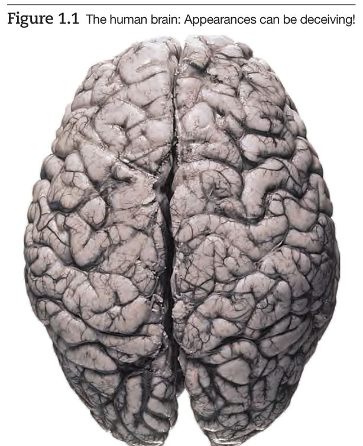
His mechanism was the Hebb synapse, usually compressed into the slogan "cells that fire together wire together". Stated properly: if a presynaptic neuron repeatedly participates in firing a postsynaptic neuron, some growth process or metabolic change occurs at that synapse so that the presynaptic neuron's later ability to fire the postsynaptic one is increased. Chain those strengthened synapses together and you get a cell assembly, a set of neurons that has been wired into a functional unit by experience and can now be re-activated as a whole by any part of it. Chain assemblies in sequence and you get a phase sequence, which is Hebb's account of a train of thought. Notice the structure of the argument: a single local, plausible, physical rule, applied repeatedly, yields something that looks psychological. That is the template for essentially every biopsychological explanation that follows in this book.
Hebb built his theory from a genuinely mixed evidence base, and this is the second thing he established as normal practice: experiments on laboratory animals, clinical case studies of human patients, and logical argument all counted. He did not privilege one.
Hebb (1949), The Organization of Behavior = the founding of biopsychology as a discipline, and the first real theory of how psychological phenomena arise from brain activity. Hebbian learning: co-active neurons strengthen their synapse. Cell assembly (a wired-together group) then phase sequence (a chain of assemblies, i.e. a thought).
Human subjects and animal subjects
Biopsychology studies both humans and non-human animals, and each has real advantages, so the choice is a research-design decision rather than a matter of taste.
Human participants have three obvious advantages. They follow instructions, which means you can run a task instead of waiting for a behaviour to occur spontaneously. They report subjective experience, which is the only direct access anyone has to conscious content. And they are cheaper: no purpose-built housing, no colony maintenance. There is a fourth advantage that is easy to overlook: they have a human brain, and if the question is about a specifically human capacity such as syntax, only a human brain will do.
Animal subjects have a different and equally real set of advantages. Their nervous systems are simpler, so the effect you are looking for is not buried under the extra machinery. The comparative approach becomes available: studying the same system across species lets you separate the general biological principle from the local human quirk, and it is usually only across species that you can see what a structure is for. It is possible to run genuinely invasive experiments, meaning lesions, direct stimulation, single-cell recording, and selective breeding, which are the only methods that establish causation cleanly. And practically, you can control genetics, rearing, and history in ways that are simply not possible with people.
The six divisions of biopsychology
Pinel divides the field six ways. The division is by method and subject, not by topic, which is the single most common thing students get wrong here. Two people can both be studying memory and belong to different divisions.
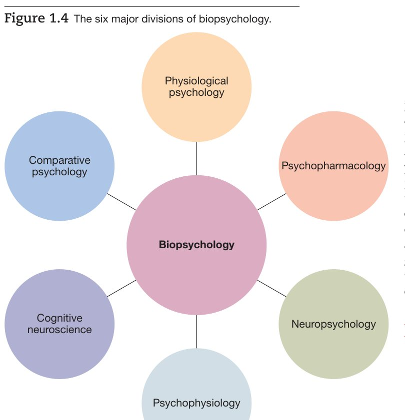
| Division | The defining question | Method and subjects |
|---|---|---|
| Physiological psychology | What neural mechanism produces this behaviour? | Direct manipulation of the brain: lesions, electrical stimulation, surgery. Almost always laboratory animals. Pure research. |
| Psychopharmacology | How do drugs change behaviour and the brain? | Manipulation by drug rather than by scalpel. Animals and humans. Strongly applied: it is where therapeutic drugs come from. |
| Neuropsychology | What are the psychological effects of brain damage? | Human patients with existing brain damage. Case studies plus standardised test batteries. Never experimental brain damage. The most applied division. |
| Psychophysiology | How does physiological activity relate to behaviour in intact people? | Non-invasive recording from the surface of healthy human volunteers: EEG, heart rate, blood pressure, skin conductance, pupil diameter, EMG, EOG. |
| Cognitive neuroscience | What is the neural basis of cognition? | Predominantly functional brain imaging (fMRI, PET) in healthy humans performing cognitive tasks. Highly collaborative and interdisciplinary. |
| Comparative psychology | How and why did this behaviour evolve? | Comparison across species, including ethology (behaviour in the wild) and evolutionary/behavioural genetics. |
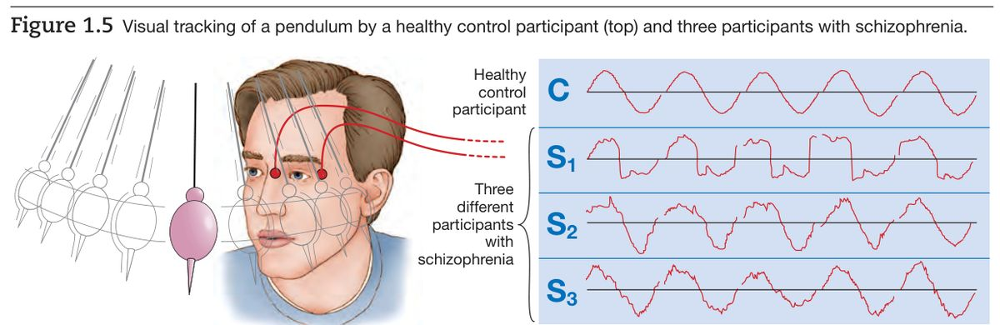
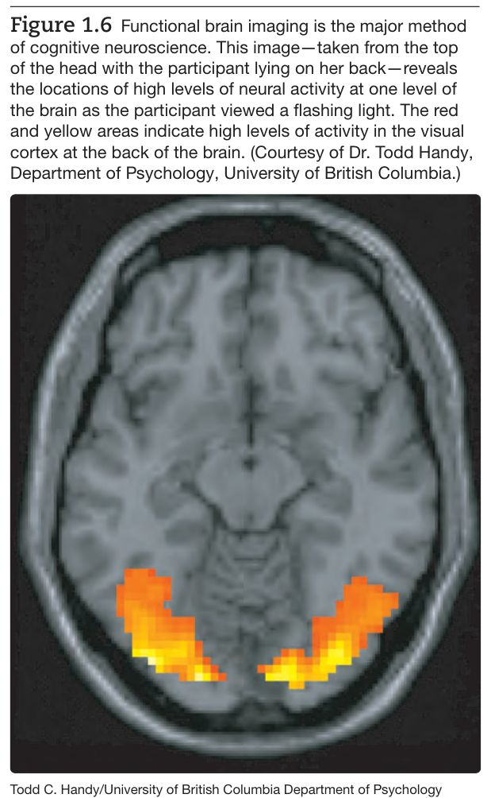
Three of these six names are routinely confused, and papers exploit it. Physiological psychology = invasive manipulation, animals, pure research. Psychophysiology = non-invasive measurement, healthy humans, no manipulation of the brain at all. Neuropsychology = pre-existing brain damage in human patients. The give-away words in a question stem are "lesioned rats" (physiological), "skin conductance in volunteers" (psychophysiology), and "patient with left temporal damage" (neuropsychology).
Converging operations: why one method is never enough
Every method in the list above is flawed, and each is flawed in its own particular direction. Lesion studies establish that a structure is necessary but tell you nothing about what it contributes when intact, and a lesion inevitably damages fibres that are merely passing through. Imaging shows correlated activity but cannot show that the activity is doing any work. Human case studies are rich but uncontrolled, since the damage was not assigned to the patient by a researcher. Animal experiments are controlled but raise the question of whether the finding generalises.
The field's response is the strategy Pinel calls converging operations: attack a single problem with several methods whose weaknesses do not overlap, and trust the conclusion only where they agree. The classic worked example is Korsakoff's syndrome. Human case studies of chronic alcoholics showed a devastating amnesia, which invited the conclusion that alcohol is the cause. But converging evidence changed the answer. Some patients with the syndrome had no history of alcohol at all, but did have severe malnutrition. Alcoholics eat badly and alcohol interferes with the absorption of thiamine (vitamin B1). Giving thiamine to Korsakoff patients halted progression, and thiamine-deprived animals developed comparable brain damage without alcohol. The conclusion that survives all the methods is that Korsakoff's syndrome is caused by thiamine deficiency, with alcohol as the usual route to that deficiency and an additional independent toxin in its own right. No single method could have got there.
Scientific inference: how you study something you cannot see
The brain's workings are not directly observable, so biopsychology relies on scientific inference: you measure something you can observe, and reason back to the invisible mechanism that must have produced it. This is not a weakness peculiar to the field. It is what physics does with subatomic particles. What matters is that the inference is disciplined.
The textbook illustration is the perception of movement during eye movement. Your eyes are constantly making rapid saccades, so the image of the world sweeps across your retina many times a second, yet the world does not appear to jump. Two competing inferences are available. Either the brain tracks the eye's position by monitoring feedback from the eye muscles, or it uses the motor command it has just issued to the eye muscles, that is, it knows where it told the eye to go. You cannot see which. But you can design an observation that separates them. If the eye is prevented from moving while the command to move is still issued, a feedback account predicts the world will look stationary (no movement occurred, no feedback), whereas a command-based account predicts the world should appear to jump (a command was issued, so a compensation is applied that nothing cancels). The world does appear to move. The inference is therefore that the visual system compensates using the outgoing motor signal, a copy of the command, rather than sensory feedback from the muscles. Note the form: an unobservable mechanism, two rival accounts, and one observable consequence on which they disagree.
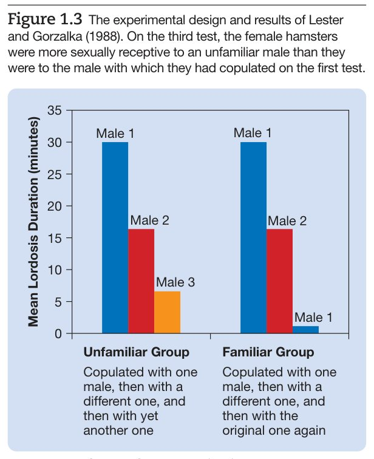
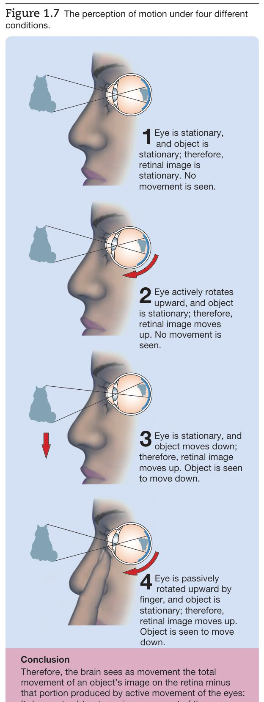
Critical thinking about biopsychological claims
Pinel closes the chapter by teaching a habit rather than a fact, and he does it with two cautionary cases. The habit is to separate what was observed from what was concluded, because the gap between them is where bad science lives.
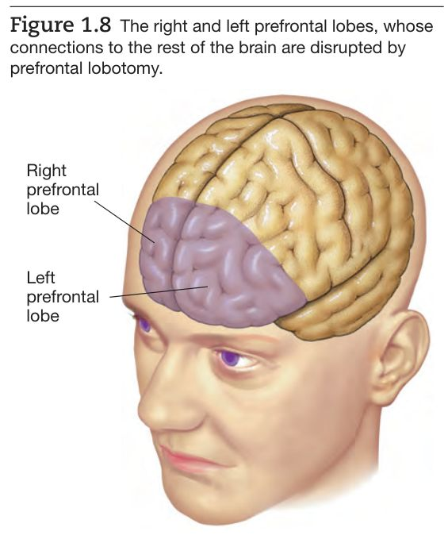
Case one: Delgado and the bull. José Delgado implanted an electrode in the caudate nucleus of a bull, entered the ring, and stopped a charging bull by radio stimulation. The claim built on it was that the caudate contains a mechanism that inhibits aggression, and by extension that human violence might be treated by stimulating it. What was actually observed is narrower: the stimulation stopped the charge. But the bull did not stop in a way that looked like a loss of aggressive motivation. It turned consistently in circles in one direction. A far more parsimonious reading is that the stimulation elicited a motor response, a forced turning, which happens to be incompatible with charging straight ahead. The observation is real; the conclusion about aggression was never licensed by it.
Case two: the prefrontal lobotomy. Egas Moniz introduced the prefrontal leucotomy as a psychiatric treatment and received a Nobel Prize in 1949; tens of thousands of operations followed, including Walter Freeman's transorbital version, which was fast enough to be performed outside an operating theatre. The evidential base was startlingly thin. It rested substantially on Carlyle Jacobsen's report that a chimpanzee named Becky, who had been extremely upset by errors on a delayed-response task, became placid after frontal-lobe lesions. One primate, one behaviour, in a laboratory task. Against that, another chimpanzee in the same work, Lucy, showed no comparable calming, and the follow-up evaluation of human patients was for years essentially anecdotal and conducted by the surgeons themselves. The lesson is not that psychosurgery is inconceivable; it is that the evidence, the sample, and the outcome measure must be examined before a mechanism is believed, and that the enthusiasm of the person making the claim is not evidence.
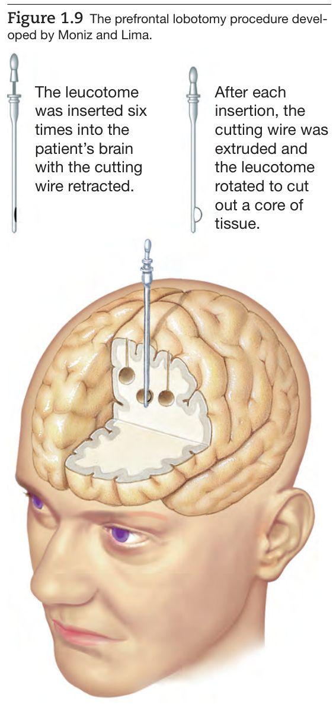
Delgado's bull = caudate stimulation, the turning-response reinterpretation, the warning about over-reading a dramatic demonstration. Moniz = prefrontal lobotomy, Nobel 1949, built on Jacobsen's chimpanzee Becky; Freeman = transorbital lobotomy. Korsakoff's = thiamine deficiency, and the standing example of converging operations.
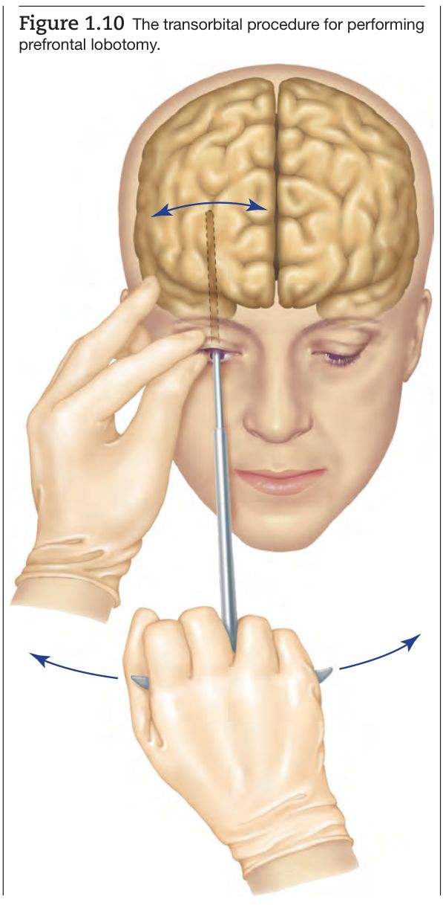
A researcher records skin conductance and heart rate in undergraduates while they view emotional photographs, and concludes that the amygdala generates the arousal. Which division is the study, and what is wrong with the conclusion? The methods are non-invasive surface measures in healthy humans, so the study is psychophysiology. The conclusion is not licensed: nothing in the study measured the amygdala, and no structure was manipulated. Skin conductance indexes sympathetic activation, which many structures could drive. To get to the amygdala you would need converging evidence, for example fMRI showing amygdala activation in the same task (cognitive neuroscience), plus patients with selective amygdala damage failing to show the response (neuropsychology), plus amygdala lesions abolishing the response in animals (physiological psychology). Once the three agree, the claim stands.
2. Evolution, genetics and experience
This chapter exists to dismantle a question rather than answer it. The question is "is this behaviour due to nature or to nurture", and Pinel's position is that it is not a hard question with a subtle answer, it is a malformed question that cannot have an answer. Understanding why it is malformed is the whole chapter.
The two flawed dichotomies
The first flawed dichotomy is physiological versus psychological, sometimes phrased as brain versus mind. This is Cartesian dualism, from René Descartes, who proposed a material body governed by physical law and a non-material mind, interacting at the pineal gland. It has an appealing tidiness and it is false in a way that matters practically: if some behaviour is caused by a non-physical mind, then that behaviour is permanently outside biological explanation, and the research programme stops. Biopsychology proceeds on monism: there is one kind of stuff, and thinking is something that brains do.
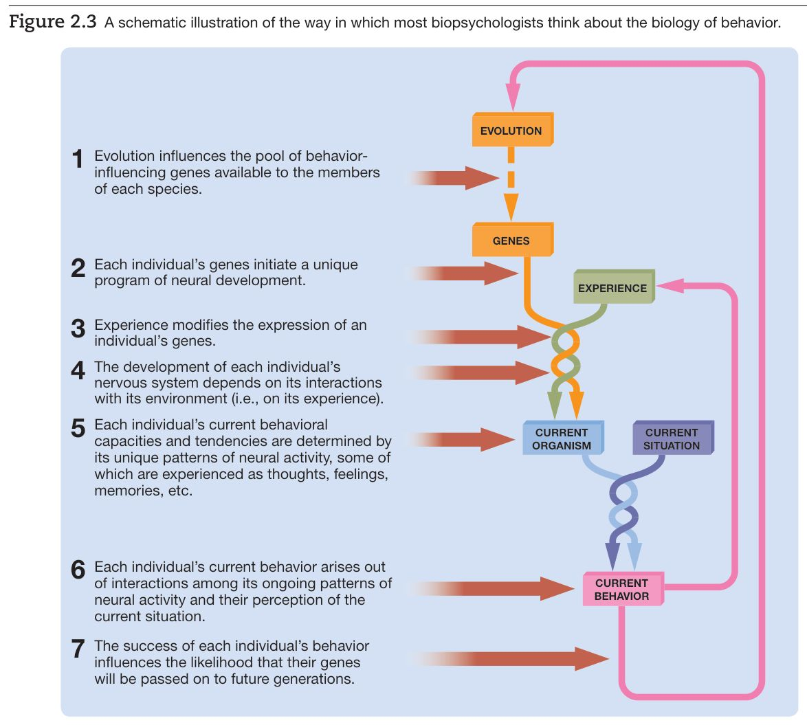
The second flawed dichotomy is nature versus nurture, the assumption that behaviour can be partitioned into an inherited portion and a learned portion. Two historical camps set this up. European ethologists such as Konrad Lorenz and Niko Tinbergen studied instinctive behaviours in the wild and emphasised inheritance; North American behaviourists such as John B. Watson and B. F. Skinner studied learning in the laboratory and emphasised experience. Both were describing real phenomena. Both were generalising from a method that could only see one of the two.
Pinel's replacement model has three terms rather than two. Behaviour is the product of the interaction between (1) the organism's genetic endowment, which is a product of its evolution, (2) its experience, and (3) its perception of the current situation. Genes and experience do not contribute separate portions of a behaviour; genes build a nervous system that develops in an environment, and the resulting brain then responds to a situation as it perceives it. Asking which of the two produced the behaviour is like asking whether the area of a rectangle is due to its length or its width.
Genes and experience are not two additive sources of behaviour; genes specify how development responds to experience, so every behaviour is 100% genetic and 100% environmental at the same time, and the only sensible questions are about how the interaction works.
Natural selection, and what it actually says
Charles Darwin published On the Origin of Species in 1859, presenting three lines of evidence: the fossil record's documented change over time, the striking structural similarities among living species (a bat's wing, a whale's flipper and a human hand share a bone plan), and the effects of selective breeding by humans, which showed that heritable variation plus selection produces change within a few generations.
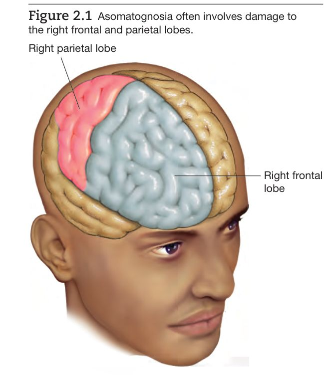
The mechanism, natural selection, needs only three ingredients: individuals vary, some of that variation is heritable, and variants differ in how many offspring they leave. Anything meeting those three conditions will evolve. The unit of accounting is fitness, which in evolutionary biology does not mean health or strength; it means the number of offspring an individual contributes to the next generation relative to others. A frail animal that reproduces more is fitter, in this technical sense, than a magnificent one that does not.
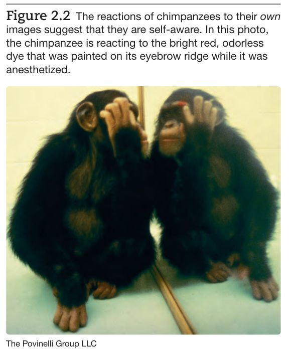
Two refinements matter for behaviour. First, sexual selection, also Darwin's: traits can evolve because they improve mating success even at a cost to survival, which is how you get peacock tails and the general pattern of intrasexual competition (males competing for access) and intersexual selection (choosiness, typically female). Second, evolution is opportunistic and does not design. It works on whatever is already there, so structures often get repurposed: a feature that arose for one function and was later co-opted for another is an exaptation, and a feature that is a structural by-product of something else and was never selected for at all is a spandrel. This is the standing corrective to lazy adaptive storytelling: not everything is for something.
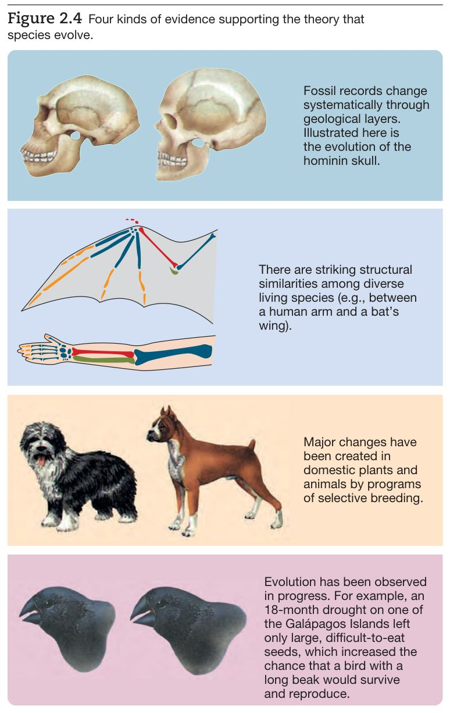
Evolution is not a ladder and humans are not at its top. Living species are all contemporary end-points of separate branches, not rungs. We did not evolve from chimpanzees; chimpanzees and humans share a common ancestor. Evolution has no goal, "more complex" is not the direction of travel, and most species that ever existed left no descendants. Also: individual differences within a species are typically far larger than the average difference between related species.
The course of human evolution, and the brain
The lineage runs, in the order the textbook uses, from early multicellular water-dwellers to chordates (animals with a dorsal nerve cord), then vertebrates (chordates with a spinal bone casing), then the first vertebrates, the bony fishes, then amphibians, which added life on land while still returning to water to lay eggs, then reptiles, which solved reproduction on dry land with the shelled egg and dry skin, then mammals, which added internal gestation and milk, then primates, and within primates the apes and then the hominins. The genus Homo is recent, and anatomically modern Homo sapiens is very recent indeed on this timescale.
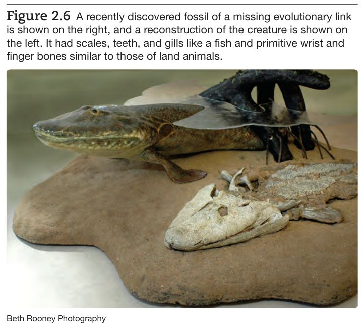
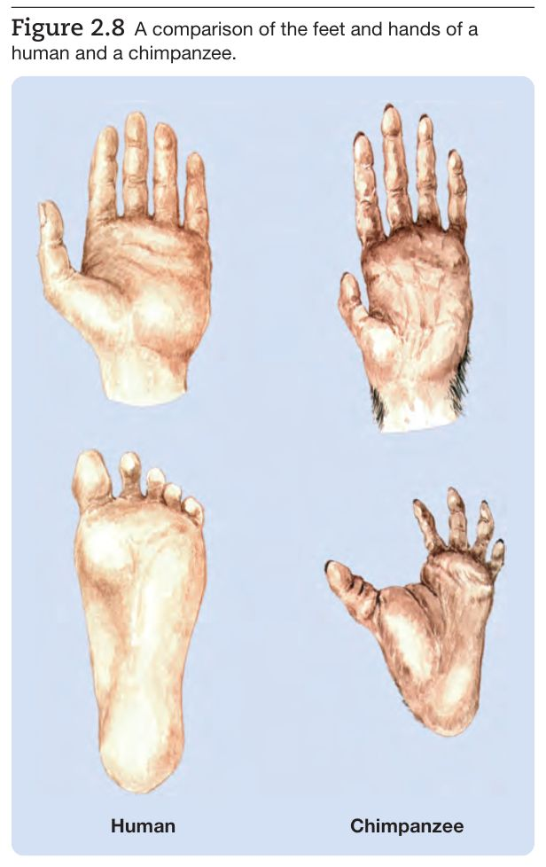
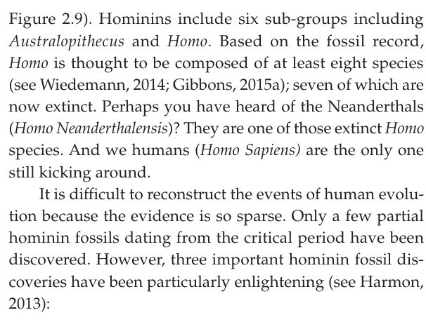
Three things happened to the brain along the way and they are separable. Overall size increased, but size on its own is a poor index because it scales with body size, which is why comparisons use the ratio of brain to body weight, and better still the size of the brain relative to what a body of that size would predict. Second, the increase was not uniform: it was concentrated in the cerebrum and specifically in the neocortex, the structures involved in complex adaptive processes, while the brain stem, which handles reflexes and basic regulation, changed comparatively little. Third, and this is the elegant engineering point, cortex increased in area far more than the skull increased in volume, and it accommodated this by convolution: folding into gyri and sulci. Folding lets you pack a large sheet into a small box, which is why cortical surface area, not brain mass, is the number that tracks capability.
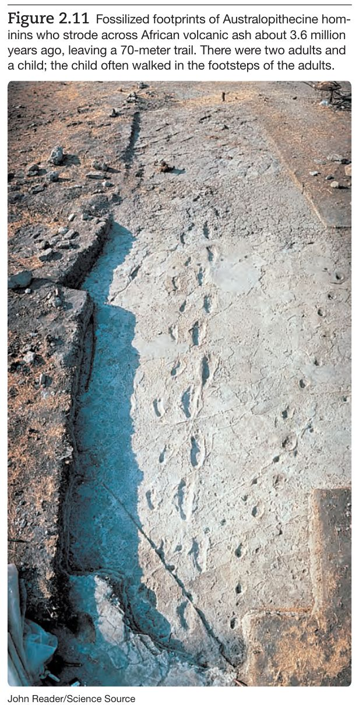
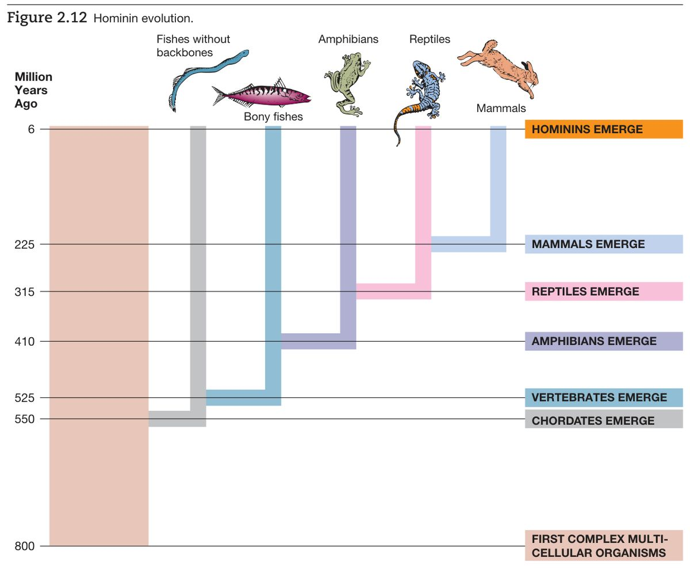
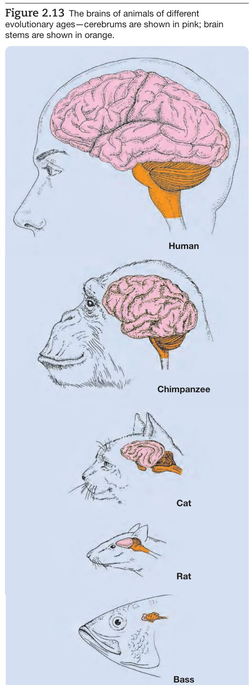
Fundamental genetics, built up
Gregor Mendel got the foundations right in the 1860s by making three good methodological choices: he studied dichotomous traits (either/or, such as brown versus white seeds, with no intermediates), he began from true-breeding lines, and he counted offspring across generations instead of describing them. Crossing brown-seed with white-seed true-breeding lines gave an all-brown first generation, and crossing those offspring with each other gave brown and white in a 3:1 ratio. Whiteness had vanished for a generation and returned unchanged, so it could not have been diluted or blended. Mendel's inference was that inheritance is carried by discrete particles, now called genes, that each organism carries two of them for a trait, and that where the two differ one may be expressed (dominant) and the other not (recessive). Two copies of the same version make a homozygote, two different versions a heterozygote. What is expressed is the phenotype; what is carried is the genotype. The 3:1 ratio falls straight out: one homozygous dominant, two heterozygotes and one homozygous recessive, and only the last shows the recessive phenotype.
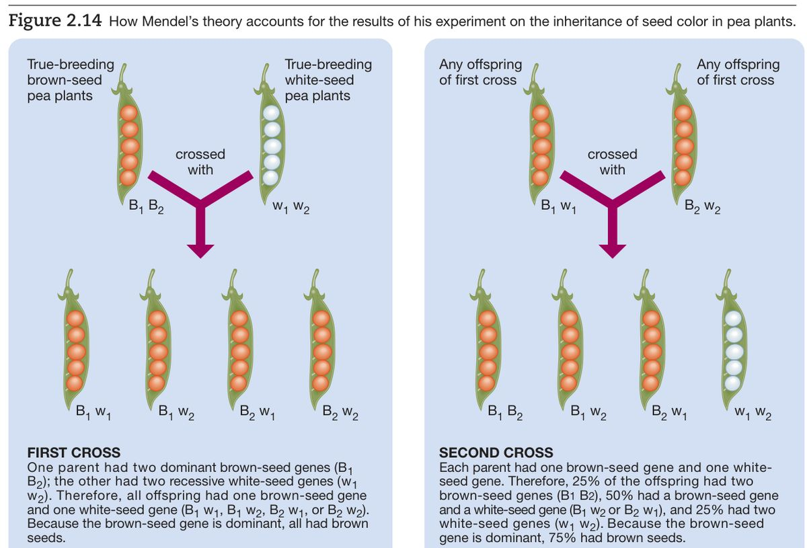
Genes sit on chromosomes, which come in matched pairs. Ordinary cell division, mitosis, copies every chromosome so each daughter cell gets the full set. The production of gametes uses meiosis, which halves the number, so that egg and sperm each contribute one chromosome of each pair and the offspring is a genuinely new combination. Meiosis also includes crossing over, in which paired chromosomes exchange segments before separating. Crossing over is the reason inheritance is not simply reshuffling of whole parental chromosomes, and it is why genes physically close together on a chromosome tend to be inherited together, a phenomenon called linkage. Sex is determined by one pair: XX develops as female, XY as male, and the traits carried on the X alone are sex-linked, which is why recessive X-linked conditions appear far more often in males, who have no second X to mask them.
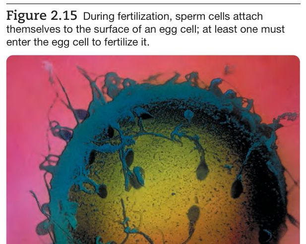
Watson and Crick in 1953 identified the structure that makes all this physical: DNA as a double helix of two complementary strands, with adenine pairing to thymine and guanine to cytosine. Complementarity explains replication in one step: unzip the helix and each strand specifies its partner, so two identical copies result.
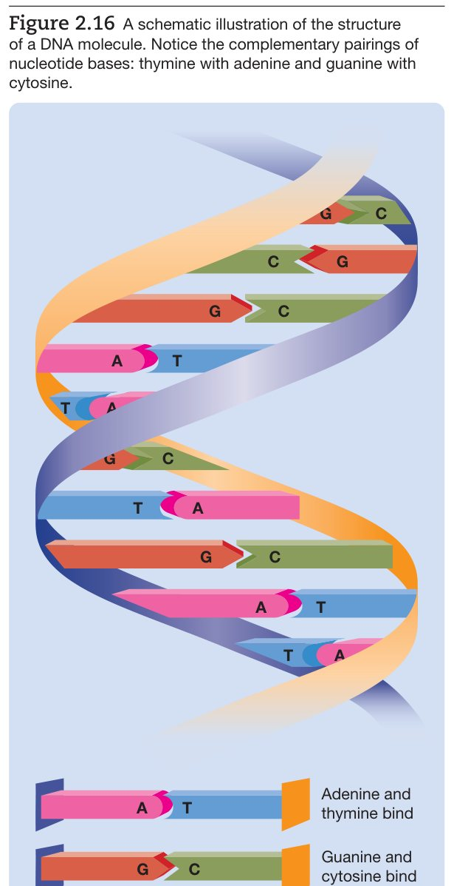
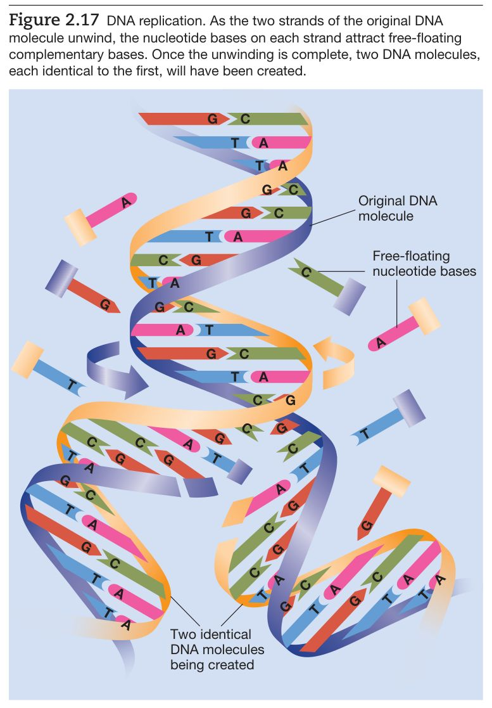
Expression runs in two steps and the vocabulary is worth getting exactly right. In transcription, the DNA sequence of a gene is copied into a strand of messenger RNA, which leaves the nucleus. In translation, a ribosome reads the mRNA in three-base units called codons, each codon specifying one amino acid, and assembles the amino acid chain that folds into a protein. Proteins are the point: they are the enzymes and channels and receptors and structural elements, so "a gene does something" always cashes out as "a gene specifies a protein". The human genome contains on the order of twenty thousand protein-coding genes, strikingly few, and most of the genome is not protein-coding but regulatory, which is the modern answer to how so few genes build something so complicated: the same parts, controlled differently.
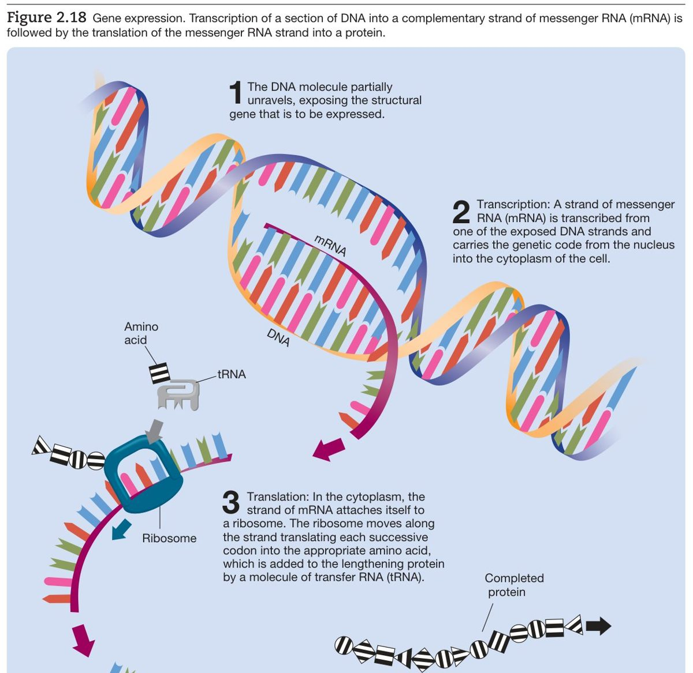
Control is where epigenetics enters. Every cell has the same DNA but expresses a different subset of it, and expression is regulated by chemical marks that do not change the sequence: DNA methylation, which typically silences a gene, and histone modification, which changes how tightly the DNA is spooled and therefore how accessible it is. These marks respond to experience, and some are transmitted through cell division and in some cases across generations. Epigenetics is the concrete mechanism that makes the nature-nurture dichotomy untenable: experience physically regulates genes.
Mendel: dichotomous traits, true-breeding lines, 3:1 ratio, dominant/recessive, genotype/phenotype. Meiosis halves and includes crossing over (source of linkage); mitosis copies. Watson and Crick 1953, double helix, A-T and G-C complementarity. Transcription (DNA to mRNA) then translation (codons to amino acids to protein). Epigenetics: methylation and histone remodelling change expression without changing sequence.
Behavioural genetics: the experiments that settle the interaction
Two studies carry this section, and both are designed so that the interaction is not merely asserted but measured.
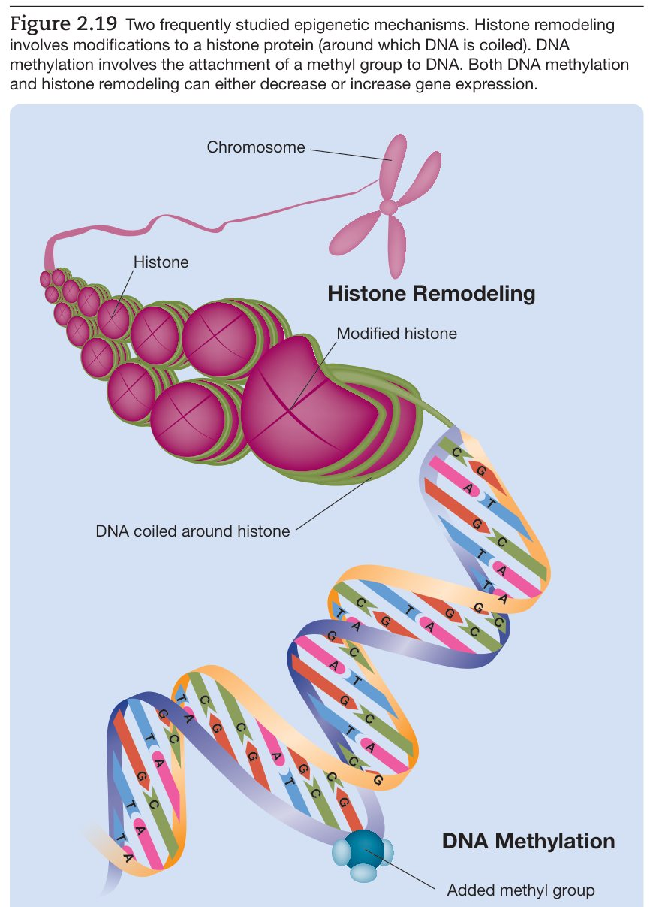
Selective breeding, Tryon. Robert Tryon bred rats for maze performance, mating the best learners with the best learners and the worst with the worst over successive generations. The two lines separated cleanly, which established that maze-learning ability is heritable. That is a real and non-trivial result, and it is also exactly where naive interpretation goes wrong.
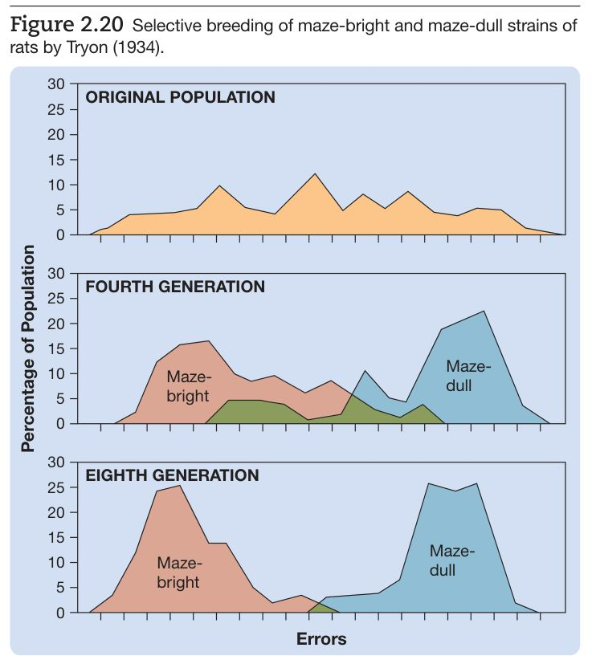
Cooper and Zubek (1958). This is the study to remember, because it takes Tryon's maze-bright and maze-dull lines and asks what environment does to them. Rats from both lines were reared in one of three conditions: an enriched environment (large, complex, full of objects), an impoverished environment (bare cage), or a normal laboratory cage. The finding is a textbook interaction. In the impoverished condition, both lines performed poorly and the difference between them shrank to nothing. In the enriched condition, both lines performed well and again barely differed. The genetic difference between "bright" and "dull" rats appeared in full only in the ordinary environment. The heritability of the trait was real, yet whether it made any difference at all depended entirely on the environment. There is no fixed quantity of genetic influence to be measured; the size of the genetic effect is itself a function of the environment.
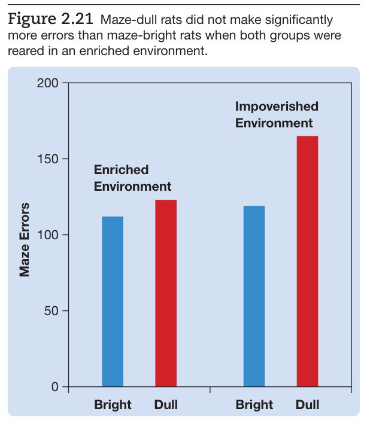
The same logic gives the cleanest single illustration of gene-environment interaction in humans: phenylketonuria (PKU). PKU is caused by a single recessive gene that leaves the child unable to make the enzyme that converts phenylalanine to tyrosine, so phenylalanine accumulates and, in the developing brain, causes severe intellectual disability. It is unambiguously a single-gene disorder with a known biochemistry. And its principal consequence is entirely preventable by an environmental manipulation: a low-phenylalanine diet begun early in life. The gene is not the destiny; the gene specifies a vulnerability to a particular dietary environment.
Heritability estimates are the most misread statistic in psychology. A heritability estimate is a proportion of the variation in a trait within a particular population in a particular set of environments that is attributable to genetic variation. It is not the proportion of the trait in an individual that is due to genes, that quantity is meaningless. It does not tell you the trait is unmodifiable (PKU is highly heritable and fully treatable). And it does not transfer across populations or environments: change the range of environments and the estimate changes, as Cooper and Zubek showed directly.
The human tools are twin and adoption studies. Monozygotic twins come from one zygote and are genetically near-identical; dizygotic twins come from two zygotes and share about half their genes, like ordinary siblings. Comparing the two, and comparing twins reared together against twins reared apart, is the standard way of estimating heritability in humans. The known confound is that monozygotic twins are also treated more alike, so the design overestimates genetic contribution to the extent that it does. Note too that a small amount of DNA, the mitochondrial DNA, is inherited from the mother only, since mitochondria come with the egg.
A paper reports that the heritability of a cognitive test score is 0.70 in a sample of middle-class children, and concludes that educational intervention is largely futile. Take it apart. First, 0.70 refers to variance in that sample, not to any individual's score. Second, and decisively, that sample has a narrow range of environments: if nearly everyone is in a similar decent environment, environmental variance is small, so genetic variance must account for most of what is left, and heritability is pushed up. Broaden the sample to include deprived environments and the estimate will fall, because there is now real environmental variance to account for. This is Cooper and Zubek's point in human form: a high heritability inside a narrow environmental range says nothing about what happens when you change the environment. Third, heritability is silent about modifiability in any case. PKU is the counter-example that ends the argument.
3. Anatomy of the nervous system
Anatomy is the chapter students try to memorise and should instead try to organise. Almost everything here follows from two facts: the nervous system is built as a tube that swells at the front end, and it is described using a coordinate system borrowed from four-legged animals. Get those two and the names stop being arbitrary.
The coordinate system, and why it bends in humans
Directions are given in three axes. Anterior means toward the nose and posterior toward the tail, so these are also called rostral and caudal. Dorsal means toward the back surface and ventral toward the belly. Medial means toward the midline and lateral away from it. The catch is that these terms were fixed for an animal whose spinal cord and brain lie along one straight horizontal line. Humans stand upright, so the axis bends about ninety degrees at the top of the brain stem. The practical consequence: in the human brain, dorsal means superior (toward the top of the head) and ventral means inferior, whereas in the human spinal cord dorsal still means toward the back. This single bend is responsible for a large share of confusion, so read the term as belonging to a structure rather than to the body.
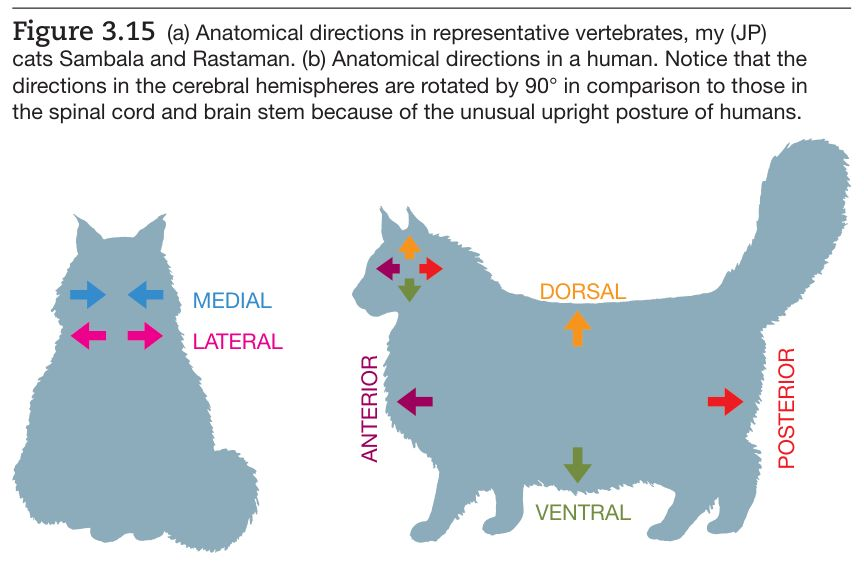
Three cutting planes: the sagittal plane runs front to back down the vertical midline (the mid-sagittal section splits left from right), the horizontal plane cuts top from bottom, and the coronal or frontal plane cuts front from back, like a slice across the face. Finally ipsilateral means on the same side of the body and contralateral on the opposite side, which is the phrase you will need constantly once movement and sensation are crossed.
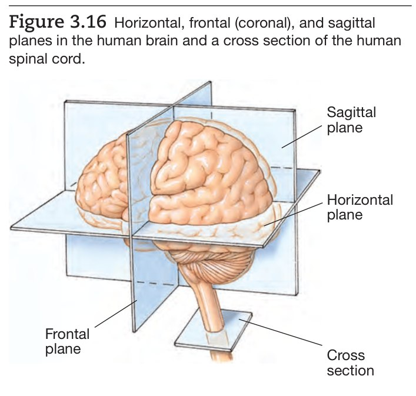
The major divisions
The whole nervous system splits into the central nervous system (CNS), meaning brain and spinal cord, encased in bone, and the peripheral nervous system (PNS), everything else. The PNS then splits functionally.
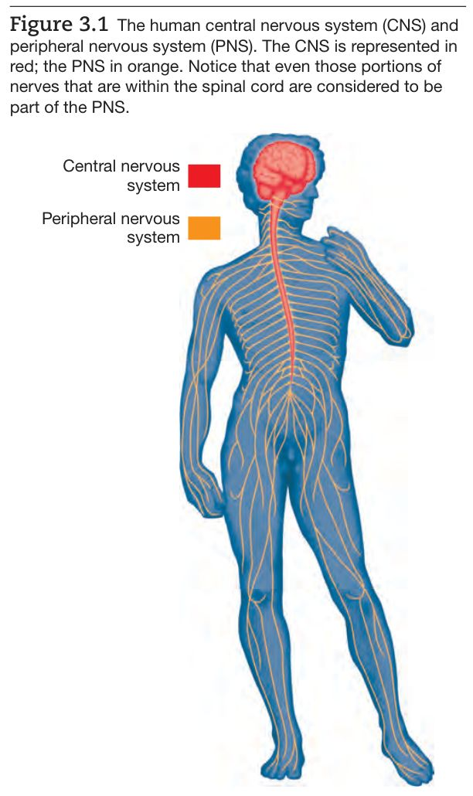
The somatic nervous system (SNS) deals with the external environment and the skeletal muscles. It has afferent nerves carrying sensory signals inward from skin, muscles, joints and the special senses to the CNS, and efferent nerves carrying motor commands outward to the skeletal muscles. Afferent means arriving, efferent means exiting, and the mnemonic worth keeping is that afferent arrives and efferent exits.
The autonomic nervous system (ANS) deals with the internal environment: smooth muscle, cardiac muscle and glands. Its afferents carry interoceptive signals inward. Its efferents divide into two antagonistic branches. The sympathetic branch mobilises: heart rate and blood pressure up, bronchi dilated, blood shunted to skeletal muscle, pupils dilated, digestion suspended, adrenal medulla triggered. This is the fight-or-flight arm, and its fibres leave the CNS from the thoracic and lumbar segments of the spinal cord. The parasympathetic branch conserves and restores: heart rate down, digestion and salivation up, pupils constricted, the rest-and-digest arm, with fibres leaving from the brain and the sacral region (the craniosacral pattern).
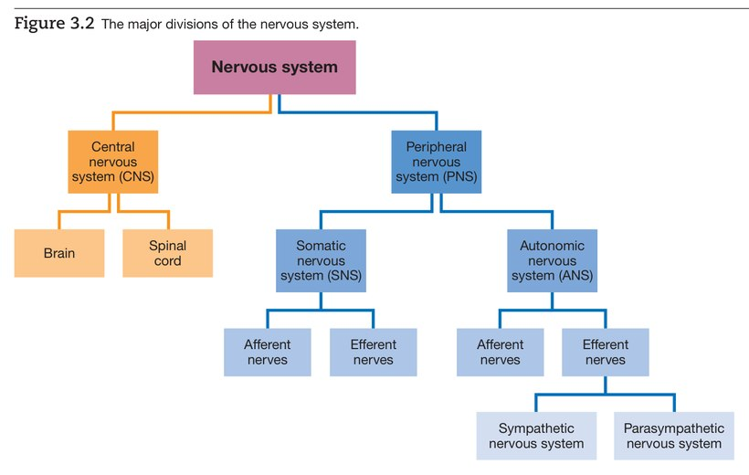
There is a second, more mechanical difference between the two branches that examiners like. Autonomic efferent pathways are two-stage: a preganglionic neuron runs from the CNS to a ganglion, and a postganglionic neuron runs from the ganglion to the target organ. In the sympathetic branch the ganglia sit close to the spinal cord, so preganglionic fibres are short and postganglionic fibres long, which suits a system designed to activate the whole body at once in a coordinated burst. In the parasympathetic branch the ganglia sit on or near the target organ, so preganglionic fibres are long and postganglionic ones very short, which suits organ-by-organ regulation. The transmitters follow suit: all preganglionic neurons in both branches release acetylcholine; parasympathetic postganglionic neurons also release acetylcholine (hence cholinergic), whereas sympathetic postganglionic neurons release norepinephrine (hence adrenergic).
Sympathetic = thoracolumbar origin, short preganglionic, long postganglionic, postganglionic transmitter norepinephrine, mass mobilisation. Parasympathetic = craniosacral origin, long preganglionic, short postganglionic, acetylcholine throughout, organ-specific. All preganglionic fibres in both branches are cholinergic.
Twelve pairs of cranial nerves project from the brain, mostly to the head. Some are purely sensory (I olfactory, II optic, VIII vestibulocochlear), some purely motor (III oculomotor, IV trochlear, VI abducens, XI accessory, XII hypoglossal), and some mixed (V trigeminal, VII facial, IX glossopharyngeal, X vagus). The one to know beyond its name is the vagus (X), whose name means wandering: it leaves the head entirely and supplies the heart, lungs and gut, and it carries the bulk of parasympathetic outflow. Because cranial nerves enter the brain at known levels, the pattern of cranial-nerve deficits localises brain-stem damage precisely, which is why the neurological examination tests them one by one.
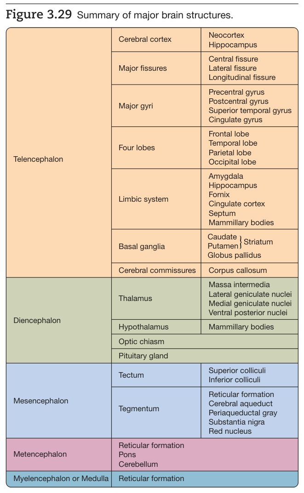
Protection: meninges, cerebrospinal fluid, and the blood-brain barrier
Three membranes, the meninges, wrap the CNS. Outermost is the tough dura mater. Beneath it is the web-like arachnoid membrane. Innermost, adhering to the brain's surface and following every fold, is the delicate pia mater. Between arachnoid and pia lies the subarachnoid space, which contains large blood vessels and cerebrospinal fluid (CSF).
CSF fills the subarachnoid space and the internal chambers: the two lateral ventricles, the third ventricle, the cerebral aqueduct connecting third to fourth, and the fourth ventricle. It is continuously produced by the choroid plexus, networks of capillaries protruding into the ventricles, and continuously absorbed into the large veins. Its jobs are mechanical support (the brain effectively floats, which dramatically reduces its effective weight and cushions impact) and clearance of waste. Because production and absorption must balance, a blockage is dangerous: if the flow is obstructed, typically at the narrow cerebral aqueduct, pressure builds and the ventricles expand, which is hydrocephalus, treated by draining the fluid with a shunt.
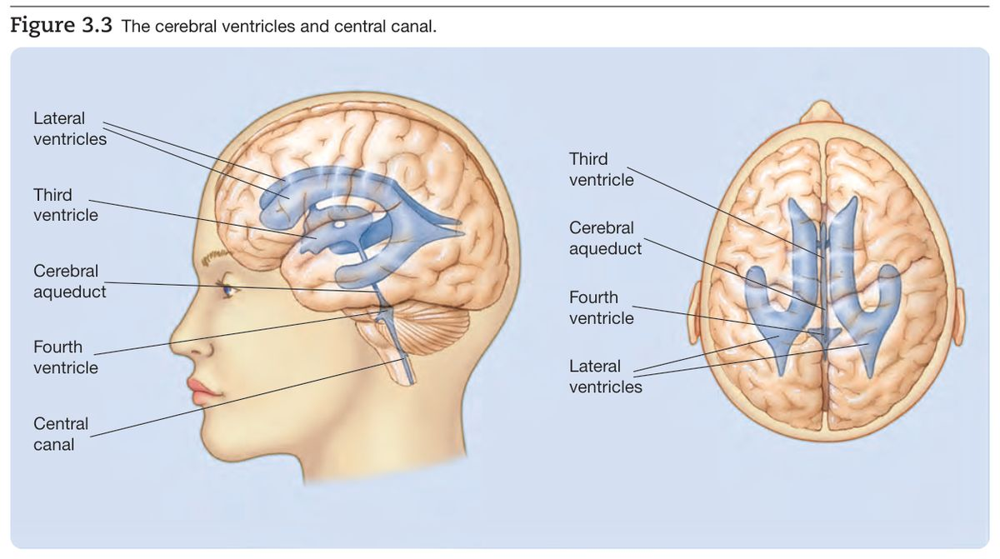
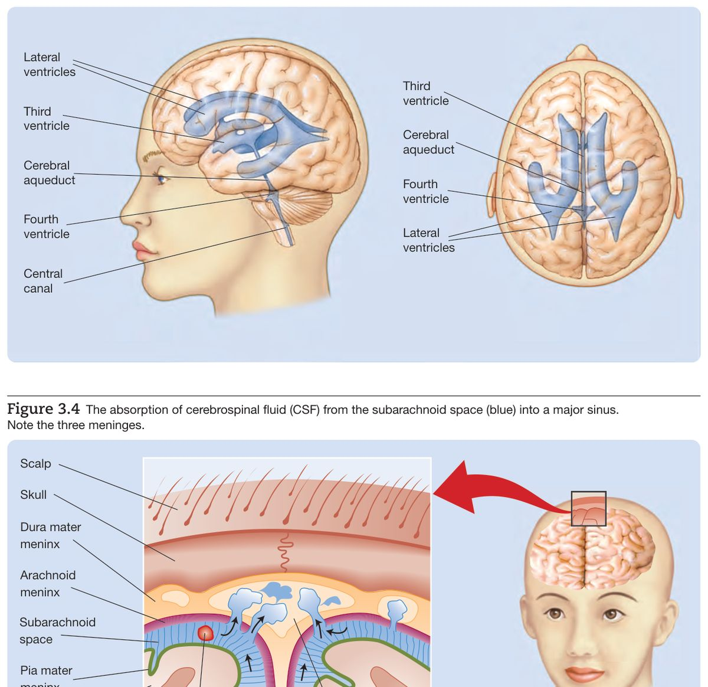
The blood-brain barrier is not a membrane but a property of the cerebral blood vessels: their endothelial cells are joined by tight junctions, so molecules cannot slip between them and must pass through. Small uncharged molecules such as oxygen and carbon dioxide cross freely, fat-soluble molecules cross readily (which is why psychoactive drugs are typically lipid-soluble), and everything else needs an active transporter, as glucose and amino acids have. The barrier protects the brain from toxins and from fluctuations in blood chemistry, and it is the central practical obstacle in neuropharmacology, since a drug that works beautifully in a dish is useless if it cannot get in. The classic solution is to give a precursor that can cross: dopamine cannot cross the barrier, but L-DOPA can, and is converted to dopamine inside, which is the basis of Parkinson's treatment. Note also that the barrier is deliberately weak in a few places, the area postrema among them, so that the brain can detect circulating toxins and trigger vomiting.
The cells: neurons and glia
A neuron is a cell specialised for receiving, integrating and transmitting electrochemical signals. Its parts, in signal order: dendrites, branching processes that receive input and are studded with dendritic spines where synapses land; the cell body or soma, containing the nucleus and the metabolic machinery, where inputs are summed; the axon hillock, the cone-shaped junction where the axon leaves the soma and where the decision to fire is taken; the axon, the long conducting process; and the terminal buttons at its branch tips, which release neurotransmitter into the synapse. Inside, the usual organelles plus two structural elements that matter: microtubules, which are the tracks along which materials are transported up and down the axon, and the mitochondria that supply the very large amounts of energy the neuron needs.
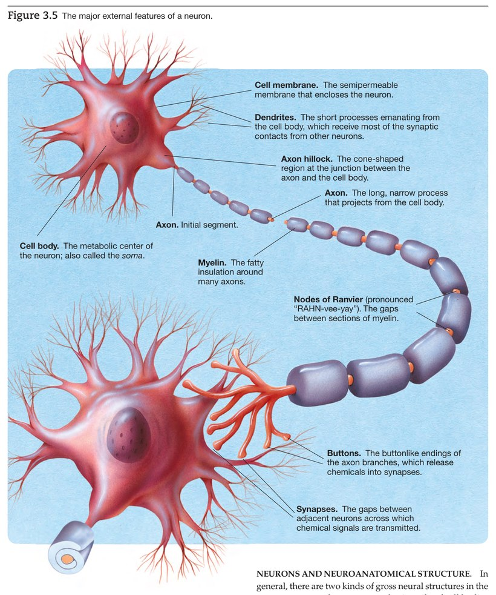
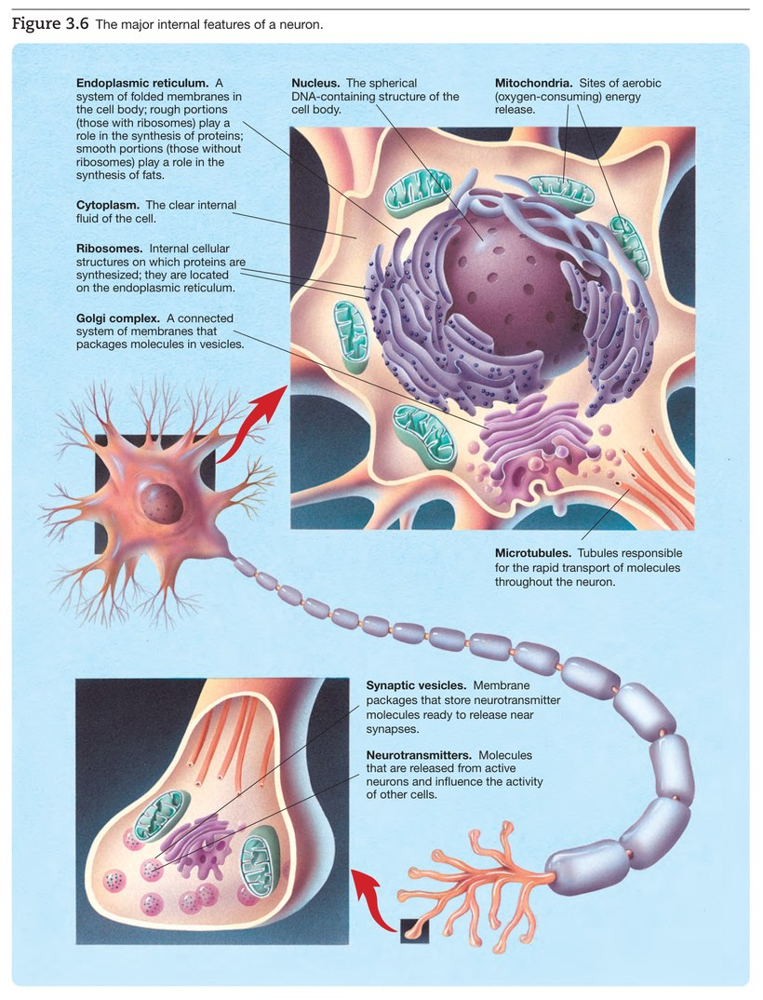
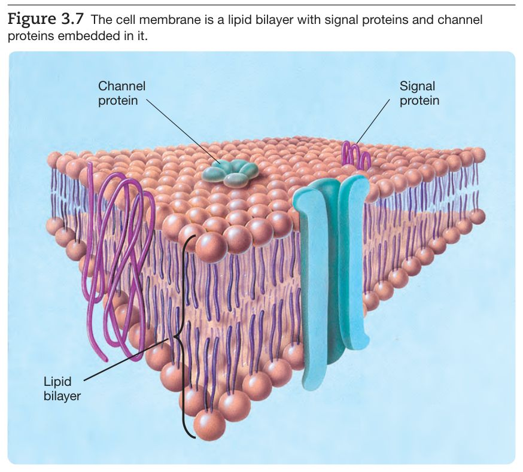
Neurons are classified by shape. Multipolar neurons have many dendrites and one axon and are the commonest type in the CNS. Bipolar neurons have one dendrite and one axon and are typical of sensory systems, for example in the retina. Unipolar neurons have a single process leaving the soma that then divides, and are typical of somatosensory afferents. An interneuron is defined by function, not shape: it has a short axon or none, and integrates activity within a single structure rather than transmitting between structures.
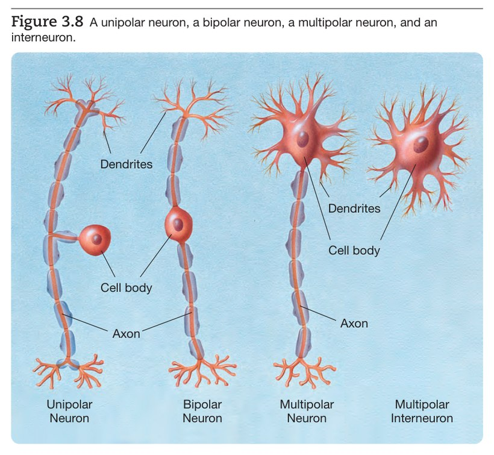
Glia outnumber neurons and are no longer thought of as passive packing. Four kinds. Oligodendrocytes myelinate axons in the CNS, each one wrapping segments of several axons. Schwann cells myelinate axons in the PNS, one cell per segment of one axon, and, crucially, they guide axonal regrowth after injury, which is a large part of why peripheral nerves regenerate and central ones largely do not. Astrocytes are the largest and most numerous: they hold the tissue together structurally, contact both neurons and blood vessels and so participate in the blood-brain barrier and in delivering nutrients, take up and buffer extracellular potassium and transmitters (an active role in signalling, not merely housekeeping), and can trigger blood-flow changes. Microglia are the immune cells of the CNS: small, mobile, they proliferate in response to injury and infection and phagocytose debris, and they also prune synapses during development.
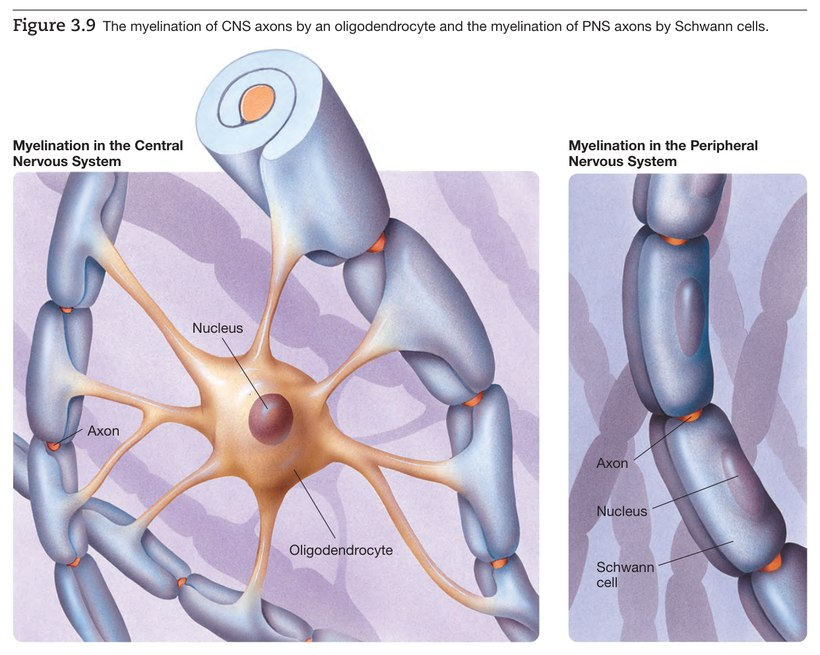
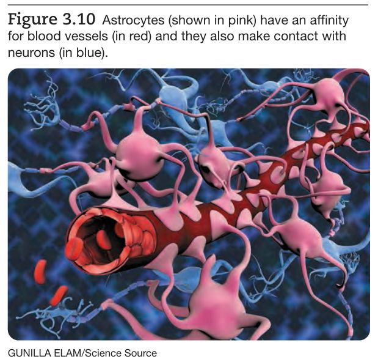
Myelin is worth pausing on because it is structural and functional at once. It is a fatty insulating sheath laid in segments, with small uninsulated gaps between segments called nodes of Ranvier. Insulation prevents current leaking out along the axon, and the exposed nodes are where the signal is regenerated, which produces the fast, jumping conduction described in the next chapter.
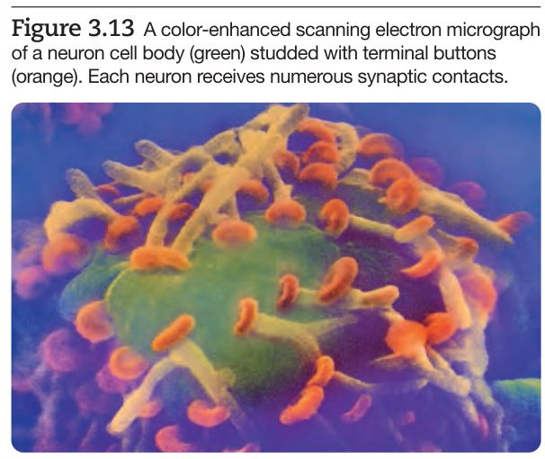
Seeing the structures: neuroanatomical techniques
Neural tissue is uniformly translucent, so anatomy depends entirely on stains that make some things visible and everything else invisible. The Golgi stain, silver-based, is capricious in a useful way: it fills a small random subset of neurons completely and blackly, leaving the rest unstained, so you can see the entire shape of individual cells including their processes. The Nissl stain, such as cresyl violet, binds material in cell bodies only, so it stains no processes but does let you count cell bodies and see how their density varies, which is how cortical layers and nuclear boundaries were mapped. Electron microscopy resolves fine structure, including the synapse itself, at the cost of only seeing a tiny field. And tract tracing establishes connections rather than shapes: anterograde tracers are taken up by cell bodies and carried forward to the terminals, revealing where a structure projects to; retrograde tracers are taken up by terminals and carried back to the cell bodies, revealing where a structure receives from.
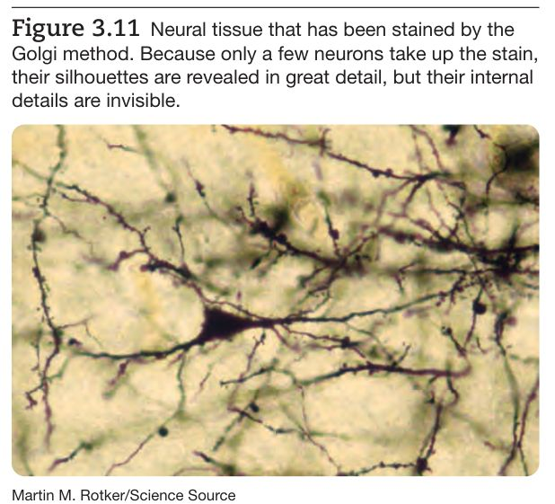
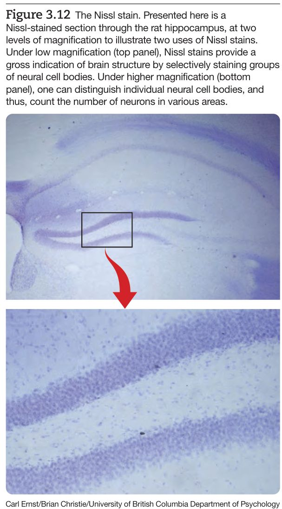
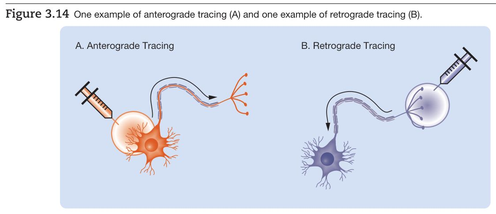
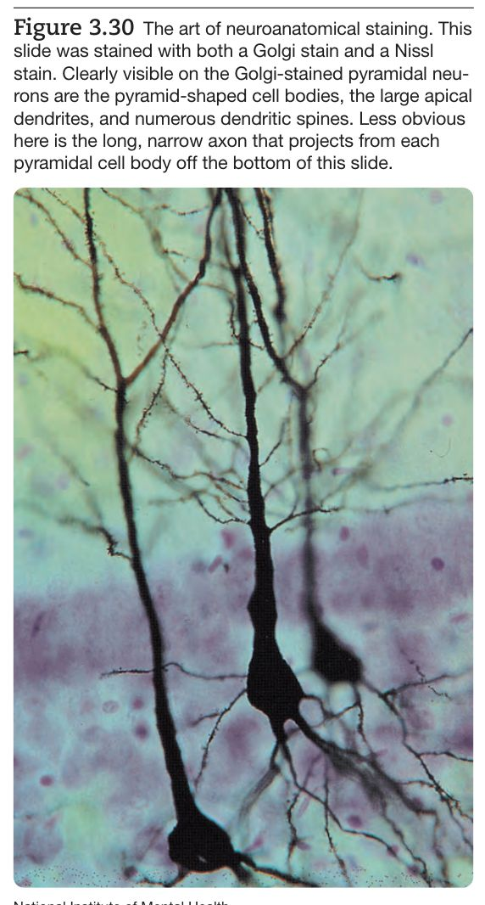
The spinal cord
In cross-section the cord shows an inner butterfly of grey matter (cell bodies) surrounded by white matter (myelinated axons, white because myelin is fatty). The grey matter's dorsal arms are the dorsal horns and its ventral arms the ventral horns. Sensory afferents enter by the dorsal roots, and their cell bodies lie outside the cord in the dorsal root ganglia. Motor efferents leave by the ventral roots, and their cell bodies lie inside, in the ventral horns. This dorsal-in, ventral-out arrangement is the anatomical fact behind the spinal reflex and behind the localisation of spinal injuries.
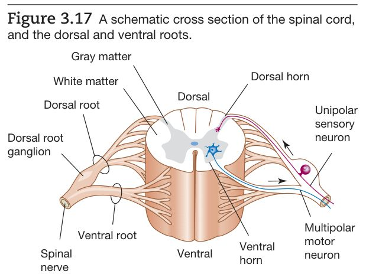
The five divisions of the brain
The brain develops from a tube with three swellings, and the adult divisions are just those swellings subdivided. Learning them in developmental order makes the list stop being arbitrary. From the tail forward:
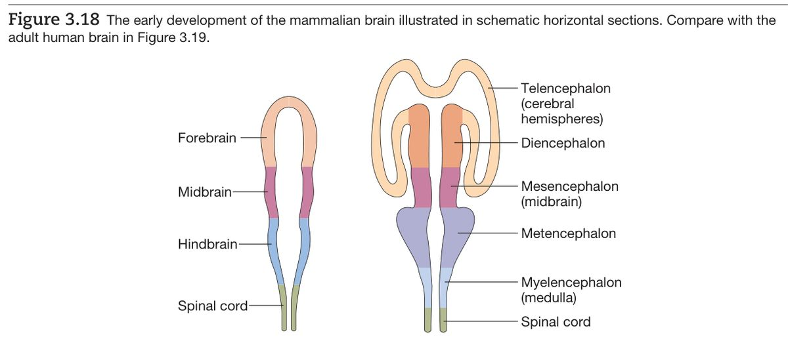
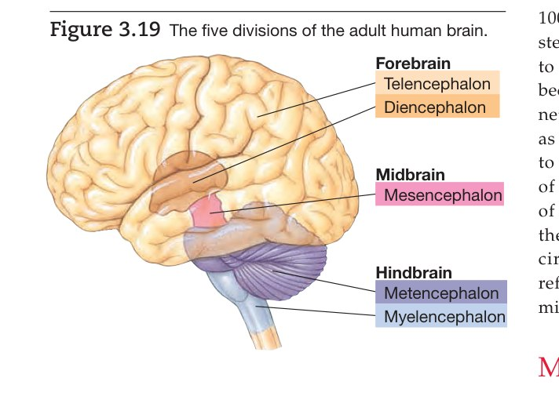
1. Myelencephalon (medulla). The most posterior division, essentially a continuation of the cord, and largely composed of tracts passing through. It contains the nuclei that regulate cardiovascular function, respiration and vomiting, which is why medullary damage is rapidly fatal. Running through it and up into the higher brain stem is the reticular formation, a complex net of about a hundred small nuclei; it is involved in arousal and sleep, attention, movement, and the cardiac and respiratory reflexes. Because it does many separable things, the old label "reticular activating system" is an oversimplification.
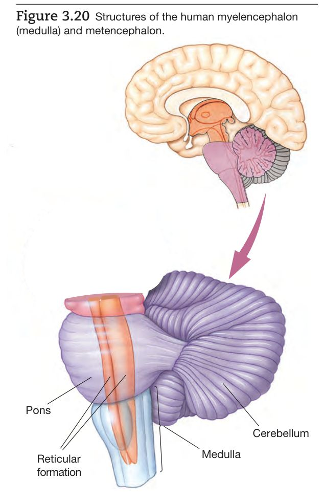
2. Metencephalon. Contains the pons ventrally, a bulge of ascending and descending tracts plus part of the reticular formation, and the cerebellum dorsally. The cerebellum is a convoluted structure holding a large proportion of all the brain's neurons; damage to it does not abolish movement but destroys its precision and timing, impairs balance, and disrupts adaptation of movement to changing conditions, along with certain kinds of learning. Note the pattern: it is a coordinator, not an initiator.
3. Mesencephalon (midbrain). Two divisions. The tectum (roof) is the dorsal surface and consists of the superior colliculi, which have a visual function, and the inferior colliculi, which have an auditory one; together they are the colliculi, and in mammals they serve orienting responses to visual and auditory stimuli. The tegmentum (floor) lies ventral to it and contains three structures worth naming: the periaqueductal grey, which surrounds the cerebral aqueduct and mediates the analgesic effects of opioids, the substantia nigra, and the red nucleus, both components of the sensorimotor system. The substantia nigra is the origin of the dopaminergic nigrostriatal pathway whose degeneration causes Parkinson's disease.
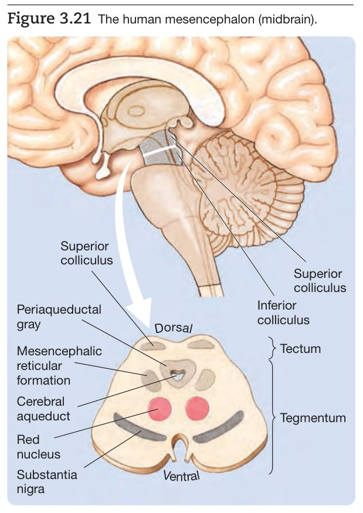
4. Diencephalon. Two structures. The thalamus is the large two-lobed relay sitting at the top of the brain stem, joined across the midline in many brains by the massa intermedia. It is a collection of distinct nuclei, and the important principle is that most sensory information reaching cortex is relayed through a specific thalamic sensory relay nucleus: the lateral geniculate nuclei for vision, the medial geniculate nuclei for audition, and the ventral posterior nuclei for touch. Relay is not passive; these nuclei receive as much input back from cortex as they send to it. The hypothalamus sits beneath the thalamus and is small but disproportionately important: it regulates the motivated behaviours (eating, drinking, sleeping, temperature, sexual behaviour) and it controls the pituitary gland, which hangs from it, thereby controlling the endocrine system. Landmarks on its underside include the optic chiasm, where the optic nerves cross (specifically, the fibres from the medial retina cross, which is what makes the crossing partial, or decussating), and the mammillary bodies at its posterior, which are among the structures damaged in Korsakoff's syndrome.
5. Telencephalon. The largest division, and the one that expanded most in evolution. It comprises the cerebral cortex, the limbic system and the basal ganglia, and it initiates voluntary movement, interprets sensory input, and supports learning, memory, speaking and problem solving.
Cortex, limbic system and basal ganglia
The cerebral cortex is a thin sheet of grey matter, only a few millimetres deep, whose area is greatly expanded by folding. Large folds are fissures, small ones sulci, and the ridges between them are gyri. The landmarks to know: the longitudinal fissure separates the two hemispheres, which are connected by cerebral commissures, the largest being the corpus callosum; the central fissure and the lateral fissure divide each hemisphere into its four lobes, frontal, parietal, temporal and occipital. Four gyri are worth naming because they are functionally defined: the precentral gyrus just anterior to the central fissure is primary motor cortex, the postcentral gyrus just posterior to it is primary somatosensory cortex, the superior temporal gyrus contains auditory cortex, and the cingulate gyrus arcs above the corpus callosum on the medial surface.
Most cortex is neocortex, six-layered, and its two principal cell types are pyramidal cells, large multipolar neurons with a triangular cell body, a long apical dendrite, and an axon that leaves the cortex (these are the output cells), and stellate cells, small star-shaped interneurons with short axons that stay local. The layering has a logic: layer IV is where sensory input from the thalamus arrives and is thickest in sensory cortex, while layer V contains the largest pyramidal output cells and is thickest in motor cortex. Alongside the layers runs a columnar organisation, cells in a vertical column tending to respond to the same thing. A minority of cortex is older and simpler: the hippocampus, on the medial temporal lobe, has three major layers rather than six.
The limbic system is a circuit around the margin (the limbus) of the cerebral hemispheres, classically credited to James Papez, and traditionally associated with the four Fs of motivated behaviour and with emotion and memory. Trace the circuit as a ring: amygdala (anterior temporal lobe, in front of the hippocampus), then hippocampus, then the fornix, the arching tract that leaves the hippocampus and runs to the mammillary bodies and septum, then the cingulate cortex, and back round. The functional split now recognised is that the amygdala is the emotional structure, especially for fear, while the hippocampus is the memory structure.
The basal ganglia are a set of subcortical nuclei for movement, and their naming is the part that trips people. The caudate is a long tail-like structure; the putamen lies beside it; together caudate plus putamen are the striatum, so called because the fibre bundles crossing between them give a striped appearance. Medial to the putamen is the globus pallidus, the pale globe. The nucleus accumbens, in the ventral striatum, is the structure central to reward and addiction (Chapter 15). And the pathway to remember is the nigrostriatal pathway, dopaminergic fibres running from the substantia nigra of the midbrain to the striatum, whose degeneration produces Parkinson's disease. The amygdala is usually listed with the basal ganglia anatomically and with the limbic system functionally, which is why you meet it in both lists.
Striatum = caudate + putamen, not including globus pallidus. Tectum is the midbrain roof (colliculi, dorsal), tegmentum the midbrain floor (periaqueductal grey, substantia nigra, red nucleus, ventral). Superior colliculi are visual, inferior colliculi auditory. Lateral geniculate = vision, medial geniculate = audition, ventral posterior = somatosensation. Oligodendrocytes myelinate in the CNS, Schwann cells in the PNS.
A patient has a resting tremor, rigidity and difficulty initiating movement, but normal sensation and normal memory. Reason from the anatomy. Initiation of movement plus tremor plus rigidity, with sensation intact, points to the motor loop rather than to sensory cortex or cerebellum (cerebellar damage gives ataxia and intention tremor during movement, not a tremor at rest). The basal ganglia are the movement-initiation structures, and the input that drives the striatum is dopaminergic and comes from the substantia nigra of the midbrain tegmentum. So the lesion is degeneration of the nigrostriatal pathway, which is Parkinson's disease. Now predict the treatment from Chapter 3's other section: dopamine itself cannot cross the blood-brain barrier, so you give its precursor L-DOPA, which has a transporter, and let the brain convert it.
4. Neural conduction and synaptic transmission
This is the load-bearing chapter of the book. Everything later, drugs, memory, sleep, psychosis, is ultimately a statement about what happens at a membrane or at a synapse. So it is worth going slowly and building it in the order the signal actually travels: the resting state, the small local signals that arrive on the dendrites, the decision taken at the axon hillock, the action potential, its conduction down the axon, and finally the synapse where it is handed to the next cell.
The resting potential, and the four forces that produce it
Push a fine glass microelectrode filled with salt solution into a neuron, put a reference electrode outside, and you measure a steady voltage difference of about −70 millivolts, inside negative relative to outside. That is the resting membrane potential, and the cell is said to be polarised.
Why does it exist? Because four things are true at once, and the resting potential is the equilibrium they settle into.
First, the ions are unevenly distributed. Sodium (Na+) and chloride (Cl−) are more concentrated outside the cell; potassium (K+) is more concentrated inside; and there are large negatively charged proteins inside that cannot leave at all.
Second, random thermal motion pushes every ion species down its own concentration gradient, so Na+ tends to enter and K+ tends to leave.
Third, electrostatic pressure pushes ions according to charge: because the inside is negative, positive ions are drawn in and negative ions pushed out. Notice that for K+ the two forces oppose each other (concentration pushes it out, charge pulls it in), while for Na+ they point the same way (both push it in). This is why Na+ is the ion poised to do something dramatic: it is under enormous combined pressure to enter, and the only thing stopping it is the membrane.
Fourth, the membrane is differentially permeable. At rest, K+ and Cl− pass through their channels fairly easily; Na+ passes only with difficulty; and the internal proteins do not pass at all.
Those four would still slowly run down, because a trickle of Na+ does leak in and K+ does leak out. The gradient is maintained by the sodium-potassium pump, an active transporter that spends metabolic energy to exchange three Na+ out for every two K+ in. Two implications. Because the exchange is unequal, the pump is itself mildly electrogenic, contributing directly to the negativity. And because it costs ATP continuously, a large fraction of the brain's energy budget goes on simply staying ready to fire, which is why the brain is so intolerant of interrupted glucose or oxygen.
Depolarisation = the membrane potential moves toward zero (less negative, for example −70 to −60 mV), which makes firing more likely. Hyperpolarisation = the potential becomes more negative (−70 to −80 mV), making firing less likely. Do not read "hyper" as "more active"; it means more polarised, therefore more inhibited.
Postsynaptic potentials and integration
When transmitter binds at a synapse on a dendrite or soma, the local membrane potential changes. If the change is depolarising, it is an excitatory postsynaptic potential (EPSP); if hyperpolarising, an inhibitory postsynaptic potential (IPSP). Three properties of these signals matter, and they are exactly the properties the action potential will not have.
They are graded: their size is proportional to the strength of the signal that produced them, so they carry an analogue quantity. They are fast, transmitted almost instantaneously. And they are decremental: they get smaller as they travel, dying out within a couple of millimetres. Conduction of this kind is passive, meaning it involves no additional energy input, exactly like the spread of current down a leaky wire.
Because they are graded and decremental, the many thousands of signals arriving on one neuron at any moment do not each get a vote. They mix. The mixing is called integration, and it happens in two ways. Spatial summation combines signals arriving at different locations at the same time: two simultaneous EPSPs at different synapses add into a larger depolarisation, and an EPSP and an IPSP of similar size cancel. Temporal summation combines signals arriving at the same location at different times: if a second EPSP arrives before the first has decayed, they add. Temporal summation is why rate of presynaptic firing is a meaningful signal at all.
The place where the summed total is read is the axon hillock, or more precisely the adjacent initial segment of the axon, and the reason it is read there is that the density of voltage-gated sodium channels is highest at that spot. If the summed potential at the hillock reaches the threshold of excitation, roughly −65 mV, an action potential is fired.
The action potential, step by step
Unlike the postsynaptic potentials, the action potential (AP) is all-or-none: it either happens at full size or does not happen at all, and a stronger stimulus does not produce a larger AP. It is a massive, brief reversal, from about −70 mV to about +50 mV and back, lasting roughly a millisecond.
The mechanism rests on voltage-activated ion channels: channels whose opening is controlled by the membrane potential itself. That single fact makes the event self-propelling.
- Depolarisation reaches threshold at the hillock, and voltage-activated sodium channels open.
- Na+ rushes in, driven by both its concentration gradient and electrostatic attraction (the two forces that were pointing the same way at rest). The inside becomes rapidly less negative, then positive. Here is the crucial bit: the entry of Na+ depolarises the membrane further, which opens still more sodium channels. This is positive feedback, and it is why the rising phase is explosive and why the AP is all-or-none. Once it starts, it cannot be half-done.
- At the peak, the sodium channels inactivate: they close and, importantly, cannot be reopened until the membrane has returned to its resting state.
- Slower voltage-activated potassium channels, which opened when threshold was reached, are now fully open, and K+ flows out, driven by concentration and by the now-positive interior. The efflux of positive charge repolarises the cell.
- The potassium channels close sluggishly, so slightly too much K+ leaves and the membrane briefly overshoots into hyperpolarisation. Then the resting distribution is restored.
Note what does not do the work: the sodium-potassium pump plays no part in the action potential itself. Very few ions actually cross during a single AP, far too few to disturb the concentration gradients. The pump's job is long-term maintenance, not moment-to-moment signalling.
Two refractory periods follow, and each explains something important. During the absolute refractory period, roughly 1 to 2 ms, another AP simply cannot be triggered, because the sodium channels are inactivated. During the following relative refractory period, an AP can be triggered but only by a stronger-than-usual stimulus. Together these produce three consequences worth stating explicitly. They set a maximum firing rate, in the region of a thousand per second. They are the reason APs travel in one direction only: the stretch of membrane just behind the advancing spike is refractory, so the signal cannot reverse. And because the AP is all-or-none, the refractory periods are what allow intensity to be coded at all: a strong stimulus cannot make a bigger spike, so it makes more spikes per second. Rate coding is a direct consequence of the all-or-none law.
Resting potential −70 mV; threshold about −65 mV; peak about +50 mV. Rising phase = Na+ in; falling phase = K+ out; hyperpolarising overshoot = slow K+ channel closing. Postsynaptic potentials are graded, decremental and passive; action potentials are all-or-none, non-decremental and active. Absolute refractory period = sodium channel inactivation, and it gives unidirectional conduction plus a ceiling firing rate. Intensity is coded by rate, not amplitude.
Conduction along the axon, and why myelin matters
Conduction down the axon is active and therefore non-decremental: at each patch of membrane the AP is regenerated at full size, so the signal arrives at the terminal exactly as large as it started. The comparison worth holding is that a postsynaptic potential fades like a whisper down a corridor, whereas an AP is more like a line of gunpowder, re-igniting at full intensity all the way along.
In an unmyelinated axon this regeneration happens at every point, which is reliable but slow. Myelinated axons do something cleverer. The myelin insulates the membrane so current cannot leak out, and the AP therefore spreads passively and very fast along the insulated segment, weakening slightly as it goes but arriving at the next node of Ranvier still above threshold, where it is regenerated at full strength. The spike appears to jump from node to node, which is why this is called saltatory conduction (from saltare, to leap). It is both faster and much more metabolically economical, because ions cross only at the nodes. Conduction speed also rises with axon diameter, so the fastest fibres in the body are thick and heavily myelinated. This is also why demyelinating disease such as multiple sclerosis is so disabling: the axon is intact, but current now leaks across the bared internodal membrane, and the signal may fail to reach the next node above threshold at all.
Two more terms. Conduction in the natural direction, from hillock to terminals, is orthodromic; stimulate an axon in the middle and the spike will also travel backward toward the soma, which is antidromic. And the classic experimental preparation behind all of this is the squid giant axon, used by Alan Hodgkin and Andrew Huxley, whose quantitative model of the sodium and potassium conductances earned the 1963 Nobel Prize. The axon was chosen because it is enormous, which made it possible to get electrodes inside it in the 1950s.
The synapse: structure
Classify synapses by what contacts what. Axodendritic synapses, terminal button onto dendrite (often onto a dendritic spine), and axosomatic synapses, onto the soma, are the two commonest. Axoaxonic synapses, onto another neuron's terminal, are functionally special: they do not excite or inhibit the target cell directly, they modulate how much transmitter that target's terminal releases, which is presynaptic facilitation or inhibition. Dendrodendritic synapses exist and are often capable of transmission in both directions.
Not all transmission is at a tidy point-to-point junction. Directed synapses have the release site and the receptor site close together, the arrangement you picture by default. Non-directed synapses release transmitter into the general extracellular space to act on whatever receptors it reaches, and the anatomical signature is the string-of-beads axon, whose swellings, called varicosities, release along its length rather than only at its tip. Many monoamine neurons work this way, which is why a single monoamine cell can influence a very wide territory diffusely. Finally, a minority of junctions are gap junctions, or electrical synapses, in which the membranes are bridged by pores so that ions pass directly; these are far faster than chemical synapses and, unlike them, are typically bidirectional.
The synapse: the transmission cycle
Follow one cycle from synthesis to clearance.
Synthesis and storage. The two great classes of transmitter are handled differently. Small-molecule transmitters are synthesised in the terminal button itself, by enzymes present there, and packaged into synaptic vesicles by the Golgi complex. Neuropeptides, being chains of amino acids, must be assembled on ribosomes in the cell body and then transported down the axon in larger vesicles, which is slower and less renewable.
Release. The arriving action potential opens voltage-activated calcium channels in the terminal. Ca2+ entry is the actual trigger: it causes vesicles to fuse with the presynaptic membrane and empty their contents into the synaptic cleft, a process called exocytosis. Small-molecule transmitters sit in vesicles clustered right at the membrane and are released in bursts by each AP; peptides are typically released more diffusely and in response to sustained firing.
Receptor action. Transmitter diffuses across the cleft and binds to receptors, and a transmitter's effect is determined not by the transmitter but by which receptor subtype it lands on. This is the single most useful idea in the chapter, because it explains how one substance can excite in one place and inhibit in another. Two receptor families:
- Ionotropic receptors are themselves ion channels. Binding opens the channel immediately and the ion flows. They are fast, short-lived, and produce the classic EPSP or IPSP. Whether the result is excitation or inhibition depends on the ion: open a Na+ channel and you depolarise (EPSP); open a Cl− or K+ channel and you hyperpolarise (IPSP).
- Metabotropic receptors are not channels. Binding activates an attached G protein, part of which detaches inside the cell and either acts on a nearby channel or, more often, triggers the synthesis of a second messenger that diffuses through the cytoplasm. Effects are slower to start, longer-lasting, more diffuse and more varied, and because second messengers can enter the nucleus and change gene expression, metabotropic signalling is the route by which a synaptic event produces a durable structural change. Hold on to that: it is the bridge to learning in Chapter 11.
A special case: autoreceptors are metabotropic receptors on the presynaptic membrane that bind the neuron's own transmitter. They function as a thermostat, monitoring how much has been released and reducing further synthesis and release. This negative feedback loop is why some drugs have paradoxical initial effects.
Deactivation. Transmitter must be cleared or the signal never ends. Two routes. Reuptake is the commoner: transporter proteins in the presynaptic membrane draw the intact transmitter back for reuse, which is efficient. Enzymatic degradation breaks it down in the cleft, the standard example being acetylcholinesterase destroying acetylcholine. Astrocytes also take up transmitter, notably glutamate.
The transmitters themselves
Learn them in classes, because the drugs follow the classes.
Amino acid transmitters do the fast, bulk signalling of the CNS: glutamate is the main excitatory transmitter of the brain, GABA the main inhibitory one, with aspartate and glycine (inhibitory, mainly in the spinal cord and brain stem) alongside them. GABA is synthesised from glutamate in one step, which is a pleasing detail: the brain's brake is made from its accelerator.
Monoamines are the diffuse modulators, made by small numbers of brain-stem neurons with vast projections. They split into the catecholamines, which share a synthesis chain, and the indolamines. The chain is worth memorising in order because it is examined and because it explains three drugs: tyrosine (an amino acid from the diet) becomes L-DOPA, which becomes dopamine, which becomes norepinephrine, which becomes epinephrine. A neuron is dopaminergic or noradrenergic simply according to which enzymes it possesses, that is, where it stops. The indolamine is serotonin (5-HT), synthesised from the amino acid tryptophan.
Acetylcholine stands on its own. It is the transmitter at the neuromuscular junction, at all autonomic preganglionic synapses, at parasympathetic postganglionic synapses, and in cortical projections important for arousal and memory. Its two receptor subtypes are named after the drugs that revealed them: nicotinic receptors (ionotropic, at the neuromuscular junction and autonomic ganglia) and muscarinic receptors (metabotropic, in the CNS and at parasympathetic targets).
Unconventional transmitters break the rules deliberately. Soluble gases such as nitric oxide are not stored in vesicles at all: they are synthesised on demand and diffuse straight through membranes, act, and are gone in seconds. Endocannabinoids, the class the active ingredient of cannabis mimics, are synthesised from fats in the postsynaptic membrane and travel backwards to act on the presynaptic terminal, which is retrograde transmission: the receiving cell talking back to the sending one to tell it to release less.
Neuropeptides are the large, slow, modulatory class, of which the best known are the endorphins (endogenous morphine-like peptides) acting at opioid receptors, which is how the brain has its own analgesia system.
Drugs: how every psychoactive drug does what it does
A drug that increases transmission at a synapse is an agonist; one that decreases it is an antagonist. The value of the framework is that there are only a handful of places in the cycle to interfere, so any drug's mechanism can be located.
| Point in the cycle | Agonist mechanism | Antagonist mechanism |
|---|---|---|
| Synthesis | Supply the precursor (L-DOPA for dopamine) | Block the synthesising enzyme |
| Vesicle storage | Increase the amount packaged | Cause leakage from vesicles so it is degraded before release |
| Release | Trigger release (black widow spider venom floods acetylcholine release) | Block release (botulinum toxin blocks acetylcholine release, hence paralysis, hence Botox) |
| Receptor | Bind and activate the receptor directly (nicotine at nicotinic receptors, morphine at opioid receptors) | Bind without activating, occupying the site (atropine at muscarinic receptors; curare at nicotinic receptors at the neuromuscular junction, hence paralysis; naloxone at opioid receptors) |
| Autoreceptor | Block the autoreceptor, removing the brake, so more is released | Activate the autoreceptor, so the neuron shuts itself down |
| Deactivation | Block reuptake (cocaine, and the SSRIs for serotonin) or block the degrading enzyme (physostigmine blocks acetylcholinesterase; the MAO inhibitors block monoamine oxidase) | Speed clearance |
Two pairs are constantly swapped in papers. Botulinum toxin blocks acetylcholine release; black widow venom floods it. Both produce dramatic effects on muscle but by opposite mechanisms. And curare is a nicotinic receptor antagonist at the neuromuscular junction (paralysis of skeletal muscle), whereas atropine is a muscarinic antagonist (dry mouth, dilated pupils, memory disruption). Also note that a receptor blocker and a reuptake blocker pull in opposite directions despite both being "blockers".
Why does a single amphetamine dose feel stimulating while chronic use leaves the person flat? Trace the cycle. Amphetamine causes stored monoamines to leak from vesicles into the terminal and then reverses the transporters, so transmitter is pumped out into the cleft, and it also blocks reuptake. Acutely, that is a large agonist effect at dopamine and norepinephrine synapses. But three feedback processes now engage. Autoreceptors detect the flood and cut synthesis and release. Postsynaptic receptors downregulate, decreasing in number and sensitivity. And the vesicular stores are being depleted faster than they are refilled, since synthesis is enzyme-limited. So on the drug you get progressively less effect for the same dose (tolerance), and off it you have fewer receptors, depleted stores and suppressed synthesis, which is a functionally hypodopaminergic state: the crash. Every element of that explanation is a point on the transmission cycle. Chapter 15 turns this into the full account of addiction.
5. The research methods of biopsychology
Methods chapters get skipped and then cost marks, because most exam questions about the brain are secretly questions about how somebody could possibly know. Organise the chapter by what a method lets you conclude, which sorts it into four groups: seeing structure, measuring activity, manipulating the brain, and measuring behaviour. Only the third group licenses causal claims, and that fact is the spine of the chapter.
Visualising the living human brain
Plain X-rays are useless for the brain because brain tissue and the fluid around it absorb X-rays almost identically. Every technique below is a way around that problem.
Contrast X-ray procedures inject a substance that absorbs X-rays differently from the surrounding tissue. In cerebral angiography a radio-opaque dye is injected into an artery, making the cerebral vasculature visible; it is used to localise vascular damage and also tumours, which distort vessels.
Computed tomography (CT) takes X-ray images through the head from many angles in one horizontal plane, then reconstructs a slice computationally, and stacks slices into a three-dimensional volume. It is fast, widely available, and good for gross lesions, bleeds and skull fractures.
Magnetic resonance imaging (MRI) uses no X-rays. Placed in a strong magnetic field, hydrogen nuclei in the tissue align; a radio pulse knocks them out of alignment and the signal they emit as they relax back is measured. Because the signal depends on the local chemical environment, MRI resolves soft tissue with much higher spatial resolution and contrast than CT, and it can produce images in any plane. Its variant diffusion tensor imaging (DTI) measures the direction in which water diffuses, which in white matter is along the fibres, and therefore maps tracts: it is the only non-invasive way to visualise the brain's wiring in a living person.
Everything so far shows structure only. The next two show function.
Positron emission tomography (PET) injects a radioactive labelled substance, classically 2-deoxyglucose (2-DG), and images where it accumulates. 2-DG is taken up by active neurons as though it were glucose but cannot be metabolised, so it accumulates in proportion to activity: the resulting image is a map of glucose uptake, that is, of activity, not of structure. PET can also be used with labelled ligands to map receptor distributions, which is its enduring advantage. Its costs are the injection of radioactivity and poor temporal and spatial resolution.
Functional MRI (fMRI) exploits the fact that oxygenated and deoxygenated haemoglobin have different magnetic properties, so the scanner can detect increases in oxygenated blood flowing to active regions, the BOLD signal (blood-oxygen-level-dependent). fMRI has largely displaced PET because it requires no injection, provides both structural and functional images from the same session, has better spatial resolution, and can be analysed three-dimensionally. Its limitation is temporal: the haemodynamic response is sluggish, unfolding over seconds, whereas the neural events it reflects take milliseconds. And a conceptual caution that examiners like: fMRI measures blood flow, which is a proxy for activity, and increased activity in a region during a task does not establish that the region is necessary for the task.
Two more methods complete the set. Magnetoencephalography (MEG) measures the tiny magnetic fields produced by neural activity at the scalp; its temporal resolution is excellent, complementing fMRI's spatial resolution. And transcranial magnetic stimulation (TMS) uses a magnetic coil over the scalp to turn off, or disrupt, activity in a small area of cortex for a brief period. TMS matters out of proportion to its precision because it creates a temporary, reversible virtual lesion in a healthy human volunteer: it converts a correlational question into an experimental one, which is exactly what imaging cannot do.
Structure: CT (X-ray, fast, gross), MRI (magnetic, high-resolution soft tissue), DTI (white-matter tracts). Function: PET (radioactive tracer, 2-DG, can map receptors), fMRI (BOLD, no injection, good spatial, poor temporal). MEG = excellent temporal resolution. TMS = reversible virtual lesion, and the one non-invasive human method that supports a causal claim.
Recording human psychophysiological activity
These are the non-invasive surface measures of psychophysiology, all recorded from healthy intact people.
The electroencephalogram (EEG) records gross electrical activity from scalp electrodes. What it captures is not individual action potentials but the summed postsynaptic potentials of large populations of similarly oriented neurons, which is why EEG is a good index of global state and a poor index of local computation. Its signatures are frequency bands: alpha waves, regular 8 to 12 Hz activity, appear in relaxed wakefulness with the eyes closed, and Chapter 14 uses the rest of the bands to stage sleep.
The important trick applied to EEG is signal averaging. The response to a single stimulus is buried in background noise. But if the stimulus is presented many times and the EEG segments following each presentation are averaged, the random background noise averages toward zero while the response, which is time-locked to the stimulus, survives. The result is an event-related potential (ERP), and its early components are the sensory evoked potentials. The best-known later component is the P300, a positive wave about 300 ms after a stimulus that the participant finds meaningful or unexpected; because its latency tracks the time taken to categorise a stimulus rather than its physical properties, it is used as an index of cognitive processing. Note also far-field potentials: because the skull conducts, activity generated in the brain stem can be recorded at the scalp, which is how brain-stem auditory function is tested in newborns.
The other four measures: muscle tension via the electromyogram (EMG), which is normally rectified and integrated to give a smooth index of tension; eye movement via the electro-oculogram (EOG), exploiting the steady voltage difference between front and back of the eyeball; skin conductance, indexing sympathetic arousal through sweat-gland activity, reported either as the tonic skin conductance level (SCL) or the phasic skin conductance response (SCR) to a discrete stimulus; and cardiovascular activity, comprising heart rate (from the ECG), blood pressure (measured with a sphygmomanometer and expressed as systolic over diastolic), and local blood volume, measured by plethysmography.
Invasive physiological methods
Now the methods that manipulate, used in animals, and therefore the ones that establish causes.
Stereotaxic surgery is the enabling technology. A stereotaxic atlas gives the three-dimensional coordinates of every structure relative to a fixed reference point on the skull, conventionally bregma, the junction of the skull sutures. A stereotaxic instrument has a head holder that fixes the skull in the standard orientation and a micromanipulator that carries an electrode or cannula to the specified coordinates. This is how a structure millimetres deep in an intact brain is reached reproducibly.
Lesion methods destroy tissue and then ask what behaviour is lost. Aspiration uses a fine pipette to draw off tissue on the surface. Radio-frequency lesions pass high-frequency current through an electrode to destroy tissue with heat, and their size and shape are determined by the current and the electrode tip. Knife cuts sever connections rather than removing a structure, which distinguishes a structure's function from that of its pathway. Cryogenic blockade is the important one conceptually: cooling tissue enough to stop neurons firing, but not enough to kill them, so the block is reversible and each animal can serve as its own control.
Two interpretive cautions carry heavy weight. First, most brain structures are bilateral, and a unilateral lesion typically produces much milder effects than a bilateral one because the intact side compensates, so a study that lesions one side and finds nothing has not shown the structure is unimportant. Second, and this is the classic criticism of the whole method, a lesion inevitably damages fibres of passage, axons merely travelling through the region on their way elsewhere. A deficit after a lesion may therefore be caused by disconnecting two other structures rather than by removing the target's own function. This is precisely why converging operations matter.
Electrical stimulation is the complement to lesioning: it typically has the opposite effect and often elicits a whole behavioural sequence, such as eating or attack, which is strong evidence that a coordinated program is being triggered rather than a muscle being twitched.
Invasive recording comes in four grains. Intracellular unit recording puts the electrode inside a single neuron and gives the moment-to-moment membrane potential, the method behind Chapter 4. Extracellular unit recording places the tip beside a neuron and records the timing of its action potentials but not the graded potential; its practical problem is that a moving animal displaces the electrode, solved by implanting fine wires that move with the tissue. Multiple-unit recording uses a larger tip to pick up many neurons at once and reports the summed rate. Invasive EEG uses implanted electrodes for gross signals, either cortical or deep.
Pharmacological and genetic methods
Drugs can be given peripherally, but to test whether a particular structure mediates an effect the drug is delivered there directly, through an implanted cannula by microinjection. Selective neurotoxins refine lesioning by killing only one kind of cell: 6-hydroxydopamine (6-OHDA) is taken up by catecholaminergic neurons and destroys them selectively, and kainic acid and similar excitotoxins destroy cell bodies while sparing fibres of passage, which directly addresses the interpretive problem above.
Several techniques label chemicals in tissue. Autoradiography exposes a slice to photographic emulsion to reveal where a radioactive ligand bound, mapping receptors. The 2-DG technique is the autoradiographic version of the PET logic, giving a high-resolution activity map. Immunocytochemistry uses labelled antibodies to a specific protein to show where that protein is, and is used to locate transmitters, enzymes and receptors. In situ hybridisation uses a labelled complementary strand of nucleic acid to show where a particular mRNA is, that is, where a gene is being expressed. Cerebral dialysis is the one method that measures transmitter release in a behaving animal: a fine tube with a semipermeable section is implanted, fluid is perfused through it, and the transmitter that diffuses in is collected and assayed, so you get a chemical time-course alongside behaviour.
The genetic methods are the newest layer. Gene knockout animals have a target gene inactivated, so you can ask what a single protein contributes; the standing caution is that development compensates, so a knockout tells you about an animal built without the gene, not about the gene's normal moment-to-moment role. Gene knock-in inserts a gene, often a human one, to model a disorder. Antisense oligonucleotides bind a target mRNA and block its translation, giving a temporary and dose-controlled knockdown. Green fluorescent protein (GFP), borrowed from a jellyfish, is expressed alongside a gene of interest so that the cells expressing it glow and can be traced in living tissue. Optogenetics is the transformative one: a light-sensitive ion channel such as channelrhodopsin is expressed in one genetically specified population of neurons, and a pulse of light then switches exactly that population on (or, with a different opsin, off) within milliseconds, in a behaving animal. It combines the causal power of stimulation with cell-type specificity and millisecond timing, which no earlier method had together. CRISPR gene-editing extends the same logic to precise sequence changes.
Behavioural research methods
The measurement of behaviour is not the soft end of the chapter; a study is only as good as its behavioural measure. A paradigm is a standard set of procedures for investigating a phenomenon, and the reason paradigms matter is comparability: results across laboratories are only combinable if the behaviour was elicited the same way.
Human neuropsychological testing has passed through three approaches, and the sequence is examinable. The single-test approach looked for one test that would detect brain damage, and failed, because damage is not one thing. The standardised-test-battery approach administers a fixed battery to everyone, the Halstead-Reitan and Luria-Nebraska batteries being the standard examples; this reliably detects whether there is damage but is weak at specifying what is wrong. The customised-test-battery approach is the modern one and works in two phases: a common battery of general tests is given to everyone to identify the general area of difficulty, and then a second set of tests is selected specifically to characterise that difficulty in detail. The customised approach depends on theory, since you can only design a follow-up test if you have a model of the function.
In practice the common first phase usually begins with an intelligence test such as the WAIS, used not for the IQ score but because the pattern of subtest scores flags where to look next. Individual tests worth naming: digit span for short-term verbal memory (the usual span is around seven digits), the token test for language comprehension, and the Wisconsin Card Sorting Test for frontal-lobe function, where the participant must infer a sorting rule that then changes without warning, and the diagnostic error is perseveration, continuing to use a rule that has stopped working. Memory testing must separate explicit memory (conscious recollection, which the patient can report) from implicit memory (memory expressed through improved performance without recollection), because amnesic patients characteristically lose the first and keep the second. The standard demonstration is repetition priming: shown a list of words and later given fragments to complete, amnesic patients complete the previously seen words at above-chance rates while denying having seen the list.
Animal behavioural paradigms come in families. For species-typical behaviour: the open-field test measures activity and fearfulness in a large empty enclosure, with fearful animals showing thigmotaxis (staying near the walls) and more defecation; the elevated plus maze pits exploration against the aversiveness of open exposed arms and is a standard anxiety assay; and the colony-intruder paradigm elicits naturalistic aggression and defence. For learning: Pavlovian conditioning, operant conditioning in a Skinner box, conditioned taste aversion (a single pairing of a novel flavour with illness produces long-lasting avoidance, a demonstration that learning is not equipotential across stimuli), self-stimulation of reward sites, and conditioned defensive burying. For spatial memory specifically, the two workhorses are the Morris water maze, where an animal must learn the location of a hidden platform in opaque water using only distal cues, and the radial arm maze, where food is placed at the ends of arms radiating from a centre and efficient performance requires remembering which arms have already been visited. Both reappear in Chapter 11, because both are exquisitely sensitive to hippocampal damage.
Claim: "the hippocampus stores spatial memories", based on an fMRI study showing hippocampal activation while people navigate a virtual town. Ask what each method could add. The fMRI shows correlation only, and the activation might reflect a related process such as attention to landmarks. TMS over the region during navigation would test necessity in humans, though depth is a problem for the hippocampus. Human patients with selective hippocampal damage (neuropsychology) failing a comparable navigation task would strengthen it considerably. Bilateral hippocampal lesions impairing Morris water maze performance in rats would establish necessity causally, though unilateral lesions would be expected to show little, and excitotoxic lesions with kainic acid rather than aspiration would rule out fibres of passage. Optogenetic silencing of hippocampal cells only during the retrieval phase would establish the specific stage at which the structure is required. The claim is credible in proportion to how many of these agree, which is Chapter 1's converging operations turned into a research plan.
6. The visual system
Vision is the model system of sensory neuroscience: it is the sense we know most about, and Pinel uses it to teach a general lesson about how brains work. The lesson is that perception is not transmission. The visual system does not deliver a picture to the cortex; it takes a spatially and temporally structured pattern of light, throws most of it away, extracts a small number of specific features, and constructs a representation that is useful. Almost every counter-intuitive fact in the chapter follows from that.
Light, and the two properties that matter
Light can be described as waves, and two properties of the wave correspond to two properties of experience. Wavelength relates to perceived hue (the visible range being roughly 380 to 760 nanometres) and intensity relates to perceived brightness. The word "relates" is doing real work: the correspondence is not one-to-one, because what you see also depends on the surrounding light and on your own history, which is the point of colour constancy later.
The eye's optics contribute two adjustments. The pupil sets the trade-off between sensitivity and acuity: constricted, it admits less light but gives a sharper image with greater depth of focus; dilated, it admits more light at the cost of sharpness. So in bright light the system takes the sharp option and in dim light it sacrifices sharpness for sensitivity. And accommodation is the adjustment of the lens's shape by the ciliary muscles to focus near or far objects on the retina: for near objects the lens is allowed to become fatter and more powerful.
The eyes also converge, and because they are set apart in the head each receives a slightly different image, a difference called binocular disparity. Disparity is greater for near objects than far ones, and the visual system uses it to construct three-dimensional depth. This is a good early example of the chapter's theme: depth is not in the image, it is computed from the relation between two images.
The retina, and its counter-intuitive design
The retina has five layers of cells, and the transmission chain runs: receptors (rods and cones) to bipolar cells to retinal ganglion cells, whose axons form the optic nerve. Two further cell types run laterally rather than vertically: horizontal cells connect receptors to each other and amacrine cells connect bipolars and ganglion cells to each other. The lateral cells are the reason the retina computes rather than merely relays; they mediate the inhibition described below.
The design has a striking oddity: the retina is built inside-out. Light must pass through the ganglion cells and bipolar cells before reaching the receptors, which are at the back. This creates two problems, and the solutions to both are instructive.
The first problem is that the axons must leave the eye, and they do so through a hole, the optic disc, which is therefore a blind spot with no receptors. You never notice it. The visual system fills it in by completion, using the surrounding information to construct what is presumably there. Completion is the strongest everyday evidence that what you see is a construction: the blind spot is not experienced as a gap because the brain does not represent gaps, it represents its best guess.
The second problem is that overlying cells blur the image. The solution is local: at the fovea, the high-acuity centre of the retina, the overlying layers are thinned and pushed aside, forming an indentation. The system accepts blur across most of the retina and buys sharpness at the one place that is pointed at whatever you are attending to. Which is why you must move your eyes to inspect anything.
Duplexity theory: two systems in one retina
Duplexity theory holds that the retina contains two functionally different systems, and once you see the trade-off each makes, every property follows.
| Rods (scotopic system) | Cones (photopic system) | |
|---|---|---|
| Operates in | Dim light, night vision | Bright light, daylight vision |
| Sensitivity | High: responds to very little light | Low: needs more light |
| Acuity | Low | High |
| Colour | No, achromatic | Yes |
| Distribution | Peripheral retina, absent from the fovea | Densest at the fovea, sparse in the periphery |
| Convergence | High: many rods feed one ganglion cell | Low: few cones, at the fovea sometimes one, per ganglion cell |
| Photopigment | Rhodopsin | Three cone opsins with different peak wavelengths |
The single idea that generates the whole table is convergence. When many receptors funnel into one ganglion cell, their weak individual signals sum, so very little light is needed to make that ganglion cell respond: high sensitivity. But the cell can no longer tell which of its many receptors was stimulated, so spatial detail is lost: low acuity. When one cone drives one ganglion cell, the reverse holds. Sensitivity and acuity are not two independent design goals; they are the two ends of one trade-off, and having two systems is how the retina gets both, at different times of day and in different parts of the visual field.
Two consequences worth knowing. Dark adaptation follows a two-part curve, with a fast cone component and a slower, much larger rod component that continues for twenty to thirty minutes, which is simply the two systems adapting at their own rates. And the Purkinje effect: because the rod and cone systems have different spectral sensitivity curves, with rods most sensitive at shorter wavelengths than cones, a red flower and a blue flower that look equally bright in daylight will look very different at dusk, the blue appearing relatively brighter as vision shifts from cones to rods.
To see a very faint star, look slightly beside it. The fovea is all cones and has almost no rods, so it is the least sensitive part of the retina in dim light. This also means acuity in the dark is genuinely poor, not just subjectively vague. And note that rods are not "worse" receptors: they are the ones that let you see at all at night.
From eye to cortex: the retina-geniculate-striate pathway
About 90 per cent of retinal ganglion axons take this route: retina to the lateral geniculate nucleus (LGN) of the thalamus, then to primary visual cortex, also called striate cortex or V1, in the posterior occipital lobe. The pathway has three properties to hold on to.
It is retinotopic: neighbouring points on the retina project to neighbouring points in the LGN and in the cortex, so the cortex contains a map of the retina. The map is heavily distorted, with a disproportionate area given to the fovea, which is the cortical expression of the same acuity priority.
It is contralateral by visual field, not by eye. This distinction is the most-tested point in the chapter. At the optic chiasm the fibres from the medial (nasal) half of each retina cross and those from the lateral (temporal) half do not. Because the lens inverts the image, the left half of the visual field falls on the right half of each retina. The result is that all information from the left visual field, from both eyes, ends up in the right hemisphere, and vice versa. So cutting one optic nerve blinds one eye, but a lesion behind the chiasm produces a loss of one visual field in both eyes.
It is parallel. Two channels run side by side from the start. The P (parvocellular) channel, which receives mostly from cones, is sensitive to colour, fine detail and stationary or slowly moving stimuli. The M (magnocellular) channel, receiving mostly from rods, is colour-blind and specialised for movement and rapid change. They terminate in different layers of the six-layered LGN, and this early split is the ancestor of the two cortical streams at the end of the chapter.
Receptive fields: what a visual neuron is actually for
The receptive field of a visual neuron is the area of the retina within which light influences its firing. The great research programme here belongs to David Hubel and Torsten Wiesel, who won the 1981 Nobel Prize for it, and their method was simple in principle: record from one cell, move a spot or bar of light around the visual field, and find out what makes the cell fire.
At the level of retinal ganglion cells and LGN cells, receptive fields are small, circular and centre-surround: they have a centre and a doughnut-shaped surround that have opposite effects. An on-centre cell is excited by light in the centre and inhibited by light in the surround; an off-centre cell does the reverse. The functional consequence is the important part. Such a cell responds weakly to uniform illumination across its whole field, because centre and surround cancel, and strongly to a difference between centre and surround. In other words, these cells do not report brightness, they report contrast. The retina is throwing away information about absolute light level, which is largely irrelevant, and keeping information about edges, which is where objects are.
The mechanism is lateral inhibition, implemented by the horizontal and amacrine cells: an active receptor inhibits its neighbours. Lateral inhibition also produces contrast enhancement, the perceptual exaggeration of edges, whose classic demonstration is Mach bands, the illusory bright and dark stripes seen at the boundaries between adjacent grey strips of uniform shade. The stripes are not in the stimulus; they are in the computation. Pinel's point is that this is not a flaw. Edges are what matter for identifying objects, and the visual system deliberately exaggerates them.
In V1, Hubel and Wiesel found two further classes, and the progression is a progression in abstraction.
- Simple cells have rectangular rather than circular receptive fields with excitatory and inhibitory regions side by side. They respond to a bar or edge of a particular orientation at a particular location. They are still position-specific.
- Complex cells respond to a bar of a particular orientation anywhere within a larger receptive field, and many respond best when it moves in one direction. They have abstracted away from position: the cell now signals "a vertical edge is present" rather than "light is at this spot". Many complex cells are also binocular, responding to input from either eye, and typically respond best to slightly different retinal positions in the two eyes, which is the cellular basis of binocular disparity and hence depth.
V1 is also organised in columns running through its depth. All neurons in one column share a preferred orientation (orientation columns), and adjacent columns alternate in which eye drives them more strongly (ocular dominance columns). Combine the columnar organisation with the retinotopic map and V1 turns out to be a bank of local edge-detectors, replicated for every orientation and every eye at every point in the visual field.
Hubel and Wiesel (Nobel 1981): centre-surround fields in retina and LGN, simple cells (orientation plus location) and complex cells (orientation, position-invariant, often direction-selective and binocular) in V1, plus orientation and ocular dominance columns. Lateral inhibition gives contrast enhancement, demonstrated by Mach bands. Centre-surround cells report contrast, not brightness.
Deprivation, and the critical period
Hubel and Wiesel's second great contribution was developmental. If one eye of a kitten is deprived of patterned vision during the first months of life, the cortical territory driven by that eye shrinks dramatically and few cortical cells respond to it afterwards, while the territory driven by the open eye expands. The deprived eye is not damaged; the cortex has been rewired. Two controls make the result precise. Depriving both eyes produces far less severe cortical reorganisation than depriving one, which shows that the mechanism is competition between the two eyes' inputs rather than simple disuse. And the effect only occurs if the deprivation falls within an early critical period; the same deprivation in an adult leaves ocular dominance largely intact. This is the origin of the clinical practice of treating childhood cataract and strabismus early, and it is the sharpest single demonstration in the book that experience physically shapes neural circuitry within a bounded developmental window. Chapter 9 generalises it.
Colour vision: two theories, both correct, at different levels
Two historical theories competed, and the resolution is the interesting part.
Component (trichromatic) theory, from Thomas Young and developed by Hermann von Helmholtz, proposed three kinds of receptor with different spectral sensitivities, with colour coded by the ratio of activity in the three. Its strongest support is behavioural: any colour can be matched by mixing three suitably chosen wavelengths, which is exactly what a three-receptor system predicts.
Opponent-process theory, from Ewald Hering, proposed instead two chromatic classes of cell each signalling opposite colours in opposite directions (red versus green, blue versus yellow) plus one achromatic black-versus-white class. Its strongest support is phenomenological: you never see a reddish green or a bluish yellow, and the complementary afterimage of staring at red is green, both of which follow if the pairs are opposed in a single channel.
The resolution, and this is the examinable point, is that both are true at different levels of the system. The receptors are trichromatic, three cone types with different peak sensitivities, as Young and Helmholtz said. The cells downstream, in the retina and LGN, are opponent: they are excited by one range of wavelengths in the centre of their field and inhibited by another, as Hering said. The opponent organisation is built out of trichromatic input. A hundred-year argument dissolved because the two sides were describing different stages.
Colour is then not determined by wavelength alone. Colour constancy is the fact that an object's perceived colour stays roughly the same under very different illuminations, even though the wavelengths reflected into the eye change substantially: a white shirt looks white indoors under yellow light and outdoors in blue shade. Edwin Land's retinex theory accounts for it by proposing that the system compares the light reflected from an object with the light reflected from its surroundings across the three cone types, so what is computed is a relative reflectance, which is a property of the object rather than of the illumination. Constancy, once again, is a construction, and it is the useful thing to construct because it is the object and not the lighting that you need to recognise.
Beyond V1: two streams, and what their lesions look like
Cortical visual areas are conventionally grouped as primary (V1, receiving most of the geniculate input), secondary (receiving mainly from primary), and association (receiving from more than one sensory system). The flow is largely from primary to secondary to association, but with substantial feedback in the reverse direction, which is why perception is influenced by expectation.
Beyond the secondary areas the pathway divides into two functional streams, and the division goes back to the P and M channels of the LGN.
- The dorsal stream runs from V1 into the parietal lobe. It is fed heavily by the M channel and handles spatial location and the visual guidance of action. It was originally labelled the where stream and is now more often called the how stream, because its function seems to be less about knowing where things are than about controlling movements toward them.
- The ventral stream runs from V1 into the temporal lobe. It is fed heavily by the P channel and handles the identification of objects: the what stream.
The evidence that convinced people is a double dissociation between two kinds of patient. Patients with visual agnosia from ventral-stream damage cannot identify or describe an object, and cannot report the orientation of a slot, yet can reach out and post a card through that same slot with an accurately oriented, well-formed grasp. Patients with optic ataxia from dorsal-stream damage show the mirror pattern: they can describe and identify the object perfectly well but cannot guide the hand to it accurately. Conscious visual identification and visually guided action are handled by different systems, and each can be lost while the other is intact. Pinel notes the further implication that the dorsal stream's contribution is largely unconscious.
Damage to specific ventral areas produces specific losses: prosopagnosia is a selective inability to recognise faces, with object recognition relatively spared and, tellingly, with the patient still showing physiological signs of recognising familiar faces they cannot consciously identify. Akinetopsia, from damage to the motion area, is a deficiency in seeing movement: the world is perceived as a series of static snapshots. And a lesion of V1 produces a scotoma, an area of blindness in the corresponding part of the visual field, which patients often do not notice because of completion. Some such patients show blindsight: an ability to respond to visual stimuli in the scotoma, for example by pointing at them or correctly guessing their orientation, while denying seeing anything at all. The usual explanation is that the residual ten per cent of retinal projections that bypass the geniculostriate route, going to structures such as the superior colliculi, can support responses without supporting conscious vision.
A patient reports normal vision but keeps bumping into things on the left and does not notice food on the left of the plate; on testing, the left visual field is lost in both eyes. Where is the lesion, and why is it not in the eye? Loss confined to one eye means the damage is at or in front of the optic nerve; loss of the same visual field in both eyes means the damage is behind the chiasm, where fibres have been regrouped by field rather than by eye. Left field loss in both eyes therefore means a right-sided lesion of the optic tract, LGN, or striate cortex. Now the second half of the question: why does the patient say vision is normal? Because there is no experience of a gap. The blind region is filled by completion, the same mechanism that hides the blind spot in every healthy eye, so a scotoma is characteristically detected by testing rather than by complaint. If the patient can also point above chance to lights presented in the blind field while insisting they see nothing, you have blindsight, and the inference is that the surviving retinal projections to the superior colliculi are doing the work.
7. Mechanisms of perception: hearing, touch, smell, taste and attention
Having built vision in detail, Pinel uses the remaining senses to establish that the same three organising principles hold everywhere, and then adds attention as the mechanism that decides which of all this incoming material gets processed properly.
Three principles that hold in every sensory system
Hierarchical organisation. Sensory systems are arranged in levels of increasing complexity and specificity: receptors, then thalamic relay, then primary sensory cortex, then secondary areas, then association cortex. Two things follow, and they are worth stating as a general rule because the exam uses them. First, damage low in a hierarchy produces a simple and total loss (destroy the cochlea and there is no hearing at all), whereas damage high in a hierarchy produces a specific and often bizarre loss with basic function preserved (the patient hears perfectly but cannot recognise what the sound is). Second, higher levels are where perception rather than sensation happens: sensation is the detection of a stimulus, perception is the higher-order process of integrating and interpreting it.
Functional segregation. Each level, and especially each cortical level, is not homogeneous. It is divided into areas with different specialised functions. This replaced the older assumption that primary, secondary and association cortex each did one thing in a more elaborate way.
Parallel processing. Information flows through multiple pathways simultaneously rather than in a single series. Some of these parallel channels support conscious perception and some support unconscious response, which is exactly the dorsal-versus-ventral lesson of Chapter 6 restated.
Putting the three together yields the picture Pinel calls the current model of sensory system organisation, and it creates a genuine puzzle: if the system tears the input apart into separately processed features in separately located areas, how does experience come back together as one unified object? That is the binding problem, and it is unsolved. Note that the perception feels unified even though nothing in the anatomy obviously reassembles it.
Audition: from air pressure to pitch
Sound is vibration of molecules, and three physical dimensions map onto three perceptual ones: frequency in hertz maps onto perceived pitch, amplitude onto loudness, and complexity onto timbre. Almost all real sounds are complex, that is, mixtures of many frequencies, and the auditory system's basic analytic operation is to break a complex sound down into the pure frequencies composing it, a decomposition mathematically equivalent to Fourier analysis.
Trace the path mechanically. Sound is collected by the external ear, the pinna, and travels down the auditory canal to the tympanic membrane (eardrum), which vibrates. The vibration is transferred through the middle ear by the three smallest bones in the body, the ossicles: malleus (hammer), incus (anvil) and stapes (stirrup). The stapes presses on the oval window, a membrane on the cochlea. The ossicles exist to solve an impedance problem: they concentrate the force from the large eardrum onto the much smaller oval window, which is necessary because the cochlea is fluid-filled and fluid is far harder to move than air.
Inside the coiled cochlea, the pressure wave travels through fluid and displaces the basilar membrane, on which sits the organ of Corti carrying the receptors, the hair cells. Above them is the tectorial membrane. When the basilar membrane is deflected, the hair cells' cilia are bent against the tectorial membrane, and that mechanical bending opens ion channels, which is the transduction step: mechanical energy becomes neural signal. The round window, an elastic membrane at the other end, exists to let the incompressible fluid move at all.
How is frequency coded? By two mechanisms, divided by frequency range. Georg von Békésy (Nobel 1961) showed that the basilar membrane's stiffness varies along its length, so a travelling wave peaks at a different place for each frequency: high frequencies displace the base, near the oval window, and low frequencies displace the apex. Different hair cells are therefore maximally activated by different frequencies, which is place coding, and it accounts for high frequencies. Low frequencies, below about 500 Hz, are coded instead by rate: the whole membrane fires in synchrony with the sound wave's cycles, so the firing rate is the frequency. The two mechanisms overlap in the middle of the range.
The ascending pathway is more tangled than vision's, with signals from each ear reaching both hemispheres. In outline: hair cells to the cochlear nuclei of the medulla, then to the superior olivary nuclei (the first point where input from the two ears converges, which is what makes it the site of sound localisation), then up the lateral lemniscus to the inferior colliculi of the midbrain tectum, then to the medial geniculate nuclei of the thalamus, then to primary auditory cortex in the temporal lobe. Primary auditory cortex is tonotopic: it contains an orderly map of frequency, the direct analogue of vision's retinotopy. Around it are secondary areas arranged as a core, a surrounding belt and an outer parabelt, and beyond them the same two-stream logic appears again: an anterior auditory stream concerned with identifying sound and a posterior stream concerned with locating it.
Sound localisation uses two cues, and which one is used depends on frequency, in a way that is elegant once you see why. For low-frequency sounds the system uses the interaural time difference: the wave arrives at the nearer ear slightly earlier, and low-frequency waves are long enough that this phase difference is unambiguous. For high-frequency sounds it uses the interaural intensity difference: the head casts an acoustic shadow, so the far ear receives a quieter signal, and this works only at high frequencies because only short waves are effectively blocked by the head. Notice that a sound directly in front produces neither cue, which is why you tilt or turn your head to localise.
Adjacent to the cochlea, sharing the same fluid system, is the vestibular system: three semicircular canals in three planes detecting angular acceleration of the head, plus the otolith organs detecting linear acceleration and static head position. It supplies the sense of balance and of the body's orientation in space.
Clinically, hearing loss splits into two kinds with different treatments. Conductive deafness is a failure of the mechanical apparatus, typically the ossicles or eardrum, and can often be helped by amplification or surgery. Sensorineural deafness is damage to the cochlea's hair cells or to the auditory nerve; amplification does not help, because the transducer is gone, and the solution is a cochlear implant, which bypasses the hair cells entirely by converting sound into electrical stimulation delivered along the cochlea at positions chosen to exploit its tonotopic map.
Ossicles in order: malleus, incus, stapes. Von Békésy, travelling wave, place coding for high frequencies (base = high, apex = low), rate coding for low frequencies. Superior olives = first binaural convergence, hence localisation. Medial geniculate = auditory thalamic relay. Primary auditory cortex is tonotopic. Interaural time difference for low frequencies, interaural intensity difference for high. Conductive versus sensorineural deafness, cochlear implant for the latter.
The somatosensory system: touch, and the two ascending routes
Somatosensation is three systems, not one: exteroceptive (stimuli applied to the skin), proprioceptive (position of the body, from receptors in muscles, tendons and joints), and interoceptive (conditions inside the body).
The exteroceptive system further divides by what it senses, and the receptors differ. Mechanical stimuli are detected by encapsulated mechanoreceptors, of which four matter: Pacinian corpuscles, the largest and most deeply located, which adapt fast and therefore respond to vibration and sudden changes rather than steady pressure; Merkel's disks and Ruffini endings, which adapt slowly and therefore signal sustained pressure and skin stretch; and Meissner's corpuscles, which respond to light touch and low-frequency vibration. Pain and temperature are detected not by encapsulated receptors but by free nerve endings. The general principle to extract is adaptation: fast-adapting receptors report change, slow-adapting receptors report state, and the nervous system generally cares more about change, which is why you stop feeling your clothes.
The body surface is divided into dermatomes, each the area of skin whose sensory input enters by one dorsal root, which is what allows a spinal lesion to be localised by the level at which sensation is lost.
From the cord, two quite separate pathways ascend, and this pair is the most reliably examined fact in the chapter.
| Dorsal-column medial-lemniscus system | Anterolateral (spinothalamic) system | |
|---|---|---|
| Carries | Touch and proprioception | Pain and temperature |
| Route in the cord | Ascends ipsilaterally in the dorsal columns | Ascends contralaterally, in the anterolateral portion |
| Where it crosses | In the medulla, at the dorsal column nuclei | In the spinal cord, immediately after entering |
| Then | Medial lemniscus to the ventral posterior nucleus of the thalamus | Three branches: to the thalamus (including ventral posterior), and to the reticular formation and tectum |
The clinical pay-off is a distinctive dissociation. A lesion on one side of the spinal cord produces loss of touch and proprioception on the same side below the lesion, because those fibres have not yet crossed, but loss of pain and temperature on the opposite side, because those crossed on entry. A patient presenting with exactly that split pattern has told you where the damage is without any imaging.
Cortically, the target is primary somatosensory cortex (S1) in the postcentral gyrus, with secondary somatosensory cortex (S2) largely below it. S1 is somatotopic, containing a map of the body known as the somatosensory homunculus, whose famous distortion is the point: the amount of cortex given to a body part is proportional not to its size but to its sensitivity, so lips, tongue and hands are enormous and the trunk and legs small.
Damage in the somatosensory hierarchy illustrates the hierarchical principle beautifully. Damage to S1 impairs detection: elevated thresholds, poor two-point discrimination. Damage higher up, in association cortex, produces the agnosias. Astereognosia is the inability to recognise objects by touch alone, with basic tactile sensation intact. Asomatognosia is the failure to recognise parts of one's own body, usually following right parietal damage and usually affecting the left side, which is the syndrome behind Oliver Sacks's account of the man who insisted that a leg in his bed was not his own.
The most striking of these is contralateral neglect, a disturbance of the ability to respond to stimuli on the side contralateral to a lesion, most often in the right parietal lobe and therefore affecting the left. Neglect is not blindness or paralysis; it is a failure to attend. Patients eat from one side of the plate, shave one side of the face, read the right half of a page, and when asked to bisect a line place the mark well to the right of centre or copy a drawing with its left side missing. Two subtleties matter. First, the neglect can be egocentric (organised with respect to the patient's own midline, so it shifts when the patient turns) rather than fixed in the world, which shows the deficit is about a frame of reference rather than about a region of space. Second, neglected stimuli are nonetheless processed: patients who cannot report an object on the left will still show its influence on later behaviour and may recognise it in a forced-choice test. The information is arriving; conscious access is what is lost.
Pain, and the descending system that controls it
Pain is the odd sense out for three reasons. It has no obvious single cortical representation, and cortical lesions rarely abolish it. It is adaptive in a way that is not obvious: people with congenital insensitivity to pain accumulate serious injuries and often die young, because pain is what enforces protection of the body. And it is strikingly modifiable by psychological factors, which is not true to the same extent of a wavelength or a frequency.
Cortically, pain shows a division of labour. The somatosensory cortices handle the sensory and discriminative aspect (where it is, how intense), while the anterior cingulate cortex is associated with its emotional aspect, the unpleasantness. Hypnotic suggestion that alters how unpleasant a painful stimulus feels, without changing its intensity, changes anterior cingulate activity and not somatosensory activity, which is about as clean a dissociation of the two components as you could ask for.
The mechanism of modulation is a descending analgesia circuit, whose discovery began with the observation that electrical stimulation of the periaqueductal grey (PAG) produces analgesia. The circuit runs from cortex and hypothalamus to the PAG, from the PAG to the raphé nuclei of the brain stem, and from the raphé down the cord to the dorsal horns, where it inhibits the incoming pain signal at its point of entry. The PAG is rich in opioid receptors, and this explains the analgesic action of morphine, and the existence of the endorphins as the endogenous ligands: the brain has a built-in circuit for turning pain down, and opiates work by activating it.
The conceptual ancestor of this is gate-control theory, proposed by Ronald Melzack and Patrick Wall, which held that signals descending from the brain, and competing input from large touch fibres, act on a "gate" in the dorsal horn that can block or admit pain signals. The gate metaphor is dated in its details but the central claim was correct and radical at the time: pain is not a fixed read-out of tissue damage, it is a signal actively regulated by the brain. That single idea underwrites the placebo response, the analgesia of emergencies, and the rationale for rubbing an injury.
Do not equate the descending analgesia circuit with gate-control theory. Gate-control (Melzack and Wall) is the theoretical proposal that pain transmission is gated in the dorsal horn. The PAG to raphé to dorsal horn projection is the physiological circuit later identified, and the endorphins are its transmitters. Also keep anterior cingulate = emotional component distinct from somatosensory cortex = sensory component.
The chemical senses: smell and taste
Smell and taste act together in the wild, since both evaluate what may be about to enter the body, and much of what people call taste is in fact flavour, a combination of the two, which is why food is bland with a blocked nose.
Olfaction. Receptors sit in the olfactory mucosa in the upper nasal passages, and each receptor neuron expresses one of a few hundred different receptor protein types, with a given odour activating a particular combination across them. Receptors of the same type converge on the same glomerulus in the olfactory bulb, so the bulb contains an orderly chemical map. Then comes the anatomical fact that makes olfaction unique: the olfactory projection reaches the amygdala and piriform cortex of the medial temporal lobe without first passing through the thalamus, unlike every other sensory system. (There is a later thalamic route to orbitofrontal cortex.) This is the standard structural explanation offered for why smell is so directly and immediately tied to emotion and memory. A second unique feature: olfactory receptor neurons are continuously replaced throughout life, one of the few clear cases of ongoing neurogenesis in the mature nervous system.
Gustation. Receptors are in taste buds on the tongue's papillae, and there are five primary tastes: sweet, sour, bitter, salty and umami (savoury, the taste of glutamate). The pathway runs by three cranial nerves (VII, IX and X) to the solitary nucleus of the medulla, then to the ventral posterior nucleus of the thalamus, then to primary gustatory cortex near the insula, with a second route to the amygdala and hypothalamus that presumably serves the motivational side.
The "tongue map", with sweet at the tip and bitter at the back, is a myth that survives in popular science. All five tastes are detectable across the tongue; sensitivity varies only slightly by region. What is true and worth knowing is that olfaction skips the thalamus on its first cortical route while every other sense, taste included, relays through it.
The corresponding deficits are anosmia, the inability to smell, and ageusia, the inability to taste. Anosmia is far commoner and its usual cause is mechanical: a blow to the head can shear the delicate olfactory nerve filaments where they pass through the perforated bone at the roof of the nose.
Selective attention
Attention is what the chapter has been building toward: the sensory systems deliver far more than can be fully processed, so something must select. Selective attention improves the perception of the stimuli it is focused on and interferes with the perception of the others, and Pinel's framing is that it does not simply filter input out, it improves the neural representation of what is selected.
Attention is controlled in two ways. Endogenous attention is top-down, directed by the person's own goals, and it is voluntary and relatively slow to shift. Exogenous attention is bottom-up, captured automatically by a property of the stimulus such as a sudden movement or a loud noise, and it is fast and involuntary. Endogenous control is associated with frontal and parietal mechanisms.
Four phenomena establish how much selection matters. The cocktail-party phenomenon: in a room of overlapping conversations you follow one and are unaware of the content of the others, yet your own name spoken in an unattended conversation captures your attention, which means the unattended channels were being monitored at some level even though their content did not reach awareness. Dichotic listening, in which different messages are played to each ear, is the laboratory version. Change blindness: people fail to notice large changes to a scene when the change coincides with a brief interruption, because without attention drawn to the changing element no comparison is made. Inattentional blindness: an unexpected but perfectly visible object goes entirely unnoticed when attention is engaged elsewhere. Together these establish that conscious perception requires attention, and that a great deal of unattended processing goes on without producing any experience.
Neurally, the effect of attending is measurable at the level of single cells: attending to a stimulus increases the firing rate of the neurons that represent it, and can effectively reshape a neuron's receptive field so that it is more sensitive to the attended location. Attention is therefore not a separate module that reads out the sensory areas; it is a modulation of the sensory areas themselves. Two clinical syndromes fit here. Contralateral neglect, described above, is best understood as a disorder of attention rather than of sensation. And simultanagnosia is an inability to attend to more than one object at a time, so that a patient can identify individual items but cannot see a scene as a whole.
A patient after a stroke reports that the left arm lying beside them belongs to someone else, eats only the right half of the plate, and when copying a picture of a house draws only the right side. They insist nothing is wrong. Localise and explain, using the chapter's hierarchy principle. Basic sensation is not the problem: this is not a spinal or thalamic lesion, and the pattern is not a hemianopia, since the deficit is organised around the patient's body rather than the visual field and persists in drawing from memory. The failure to recognise one's own limb is asomatognosia, and the failure to respond to the left side is contralateral neglect: both point to right parietal association cortex, high in the hierarchy, which is why the loss is specific and strange rather than simple and total. The denial of illness (anosognosia) accompanies it for the same reason: the machinery that would represent the left side, and therefore represent that something is missing from it, is the machinery that is damaged. Predict two test findings: on line bisection the patient will mark well to the right of centre, and in a forced-choice test the neglected left-side information will influence responses above chance, because it is being processed without being consciously accessed.
8. The sensorimotor system
The motor system is best understood backwards, from the intention down to the muscle, because that is the direction control flows and because the chapter's three principles are all about how a general intention gets translated into specific muscle contractions without any single structure having to specify everything.
Three principles, and one that follows from practice
The sensorimotor system is hierarchical. Signals flow down from association cortex, through secondary motor cortex, primary motor cortex, brain stem and spinal circuits, to the muscles. The higher levels specify what is to be achieved and the lower levels work out how. The immediate benefit of such an arrangement is that the higher levels are freed from detail: the instruction "pick up the cup" does not have to include a list of muscle tensions, because lower circuits already know how to produce a reach.
Motor output is guided by sensory input. Movement is continuously corrected using feedback, which is why the system is called sensorimotor rather than motor. Some movements are too fast for feedback to correct within their own duration; these are ballistic movements, and they must be programmed in advance, which is why they are less accurate and why practice matters more for them.
Learning changes the locus and nature of control. This is the principle that makes the hierarchy dynamic. When a skill is new, control sits high in the hierarchy and each component is consciously specified; as it is practised, control is shifted down to lower levels, and the individual movements are combined into single integrated units, a process called response chunking. Learning to drive is the standard illustration: what began as a conscious sequence of separate acts becomes one act performed while thinking about something else. Note the two payoffs: the movement gets faster because lower circuits are faster, and attention is freed for other things.
A fourth idea, motor equivalence, sits alongside these. The same goal can be achieved by many different combinations of muscles: you can write your signature with your dominant hand, your other hand, or your foot, and it remains recognisably your signature. This tells you that what is stored is not a sequence of muscle commands but something more abstract, a representation of the movement's goal or form, which lower levels then translate into whatever muscles are available.
The top of the hierarchy: association cortex
Two areas of association cortex initiate voluntary movement, and each contributes something different.
Posterior parietal association cortex integrates information about the original positions of the body parts with information about the location of external objects, because you cannot reach for something without knowing both where it is and where your hand currently is. It receives visual, auditory and somatosensory input and projects to dorsolateral prefrontal cortex, to the secondary motor areas and to the frontal eye field. Damage produces deficits that follow directly from that job description: apraxia, an inability to perform a movement voluntarily on command despite having the strength and coordination to perform it spontaneously (and note that apraxia from a lesion in one hemisphere is typically bilateral in its effects, usually the left hemisphere for this purpose), and contralateral neglect, discussed in Chapter 7.
Dorsolateral prefrontal association cortex receives from posterior parietal cortex and projects to secondary and primary motor cortex. Its neurons fire in response to a cue that a movement should be made, before the movement begins, and their activity depends on the characteristics of the intended movement rather than on the stimulus as such. The role is therefore decision: evaluating external stimuli and selecting a course of action.
Secondary motor cortex, and mirror neurons
Secondary motor cortex receives from association cortex and projects to primary motor cortex. It comprises the supplementary motor area (SMA), the premotor cortex, and the cingulate motor areas. The function is programming: these areas are involved in specifying sequences and patterns of movement rather than individual contractions, and their activity precedes movement onset. A striking finding is that supplementary motor area activity increases when a person merely imagines performing a movement, without any movement occurring, which supports the idea that these areas hold the plan rather than execute it.
Mirror neurons, discovered by Giacomo Rizzolatti and colleagues in monkey premotor cortex, fire both when the animal performs a particular goal-directed action and when it observes another individual performing the same action. Two features make them theoretically important rather than merely curious. They code the goal of the action rather than the specific movement, since a neuron may fire for grasping performed in different ways, and some fire even when the final part of the action is hidden from view, implying the action's completion is inferred. They have been proposed as a mechanism for understanding others' intentions and, by extension, for imitation, social cognition and possibly language evolution, though those extensions remain contested and should be flagged as such rather than asserted.
Primary motor cortex, and what its map really represents
Primary motor cortex occupies the precentral gyrus and is the major point of departure of motor signals from cortex. Wilder Penfield and Edwin Boldrey mapped it by electrical stimulation in conscious neurosurgical patients and described the motor homunculus, a somatotopic map with the same disproportion as the sensory one: the hands, lips and tongue occupy far more cortex than the trunk, in proportion to the fineness of control rather than to size.
The modern refinement is important and frequently examined. The classic reading of the map was that each site controls one muscle. The better-supported view is that each site is more closely associated with a movement, or with moving a limb to a target location, than with contracting a particular muscle: stimulating one site can produce contraction of different muscles depending on the limb's current position, because the goal is fixed and the required contractions vary. This is motor equivalence appearing at the cellular level, and it means primary motor cortex is not the bottom of the hierarchy but a level that still speaks in terms of movements.
Damage to primary motor cortex characteristically disrupts the ability to move body parts independently, most obviously the fine independent movements of the fingers, along with reduced speed, accuracy and force. It does not abolish movement, because the lower levels of the hierarchy remain.
The two modulatory structures: cerebellum and basal ganglia
Neither the cerebellum nor the basal ganglia are in the main descending line; both sit in loops that modulate it, receiving from cortex and projecting back to it by way of the thalamus.
The cerebellum receives a large volume of information: a copy of the motor commands descending from cortex, sensory feedback about the actual consequences, and vestibular information. That combination is a strong hint about its function, which is to compare intended with actual movement and correct the discrepancy, hence its role in accuracy, timing and motor learning. Cerebellar damage does not paralyse but produces ataxia: movements lose coordination and timing, become jerky, and are inaccurate in a way that is worse the more precision is required, along with disturbed balance and impaired adaptation to novel conditions.
The basal ganglia similarly participate in loops through cortex, and are involved in the initiation and modulation of movement, in habit learning and in the response to reward. Their two signature disorders point in opposite directions and are worth pairing: Parkinson's disease, from degeneration of the dopaminergic nigrostriatal input, produces poverty of movement (akinesia, bradykinesia), rigidity and resting tremor, while Huntington's disease, from degeneration of striatal neurons, produces excessive involuntary movement (chorea). Too little activity in the loop and movement is not released; too much and it is released without being asked for.
Descending pathways: four tracts in two groups
Signals from cortex reach the spinal cord by four tracts, which fall into two functional groups. Learn the grouping first, because the individual tract names are only useful once the grouping makes sense of them.
The two dorsolateral pathways. The dorsolateral corticospinal tract descends directly from cortex, forms the visible bulges on the ventral surface of the medulla called the pyramids, decussates (crosses) there, and continues in the contralateral dorsolateral cord. The dorsolateral corticorubrospinal tract takes an indirect route by way of the red nucleus of the midbrain tegmentum, crossing there. Both terminate in the distal parts of the contralateral limbs, and are the pathways for independent movements of the extremities, especially the fingers.
The two ventromedial pathways. The ventromedial corticospinal tract descends directly and ipsilaterally, and the ventromedial cortico-brainstem-spinal tract descends indirectly through several brain-stem structures (tectum, vestibular nucleus, reticular formation, motor nuclei of the cranial nerves). Both are diffuse and bilateral in their terminations, and they control the proximal muscles of the trunk and limbs: posture, whole-body movements, walking.
The evidence separating the two groups is a classic experimental dissociation, from Donald Lawrence and Hans Kuypers, who transected the pathways selectively in monkeys. Cutting the dorsolateral tracts left the animals able to stand, walk, climb and use the arm in whole-limb movements, but they could no longer move the elbow, wrist and digits independently, and could not release an object once grasped. Cutting the ventromedial tracts produced the opposite profile: posture was severely disturbed, sitting and walking were impaired, and whole-body movements were lost, while the animals retained control of individual limb and digit movements when supported. The functional division is therefore not speculative; it was demonstrated by lesion.
Dorsolateral group = distal, contralateral, independent movements of digits and limbs; corticospinal branch decussates at the medullary pyramids, corticorubrospinal branch relays through the red nucleus. Ventromedial group = proximal, bilateral, posture and whole-body movement. Lawrence and Kuypers established the dissociation by selective transection in monkeys.
Spinal circuits, muscles and reflexes
At the bottom of the hierarchy the units become concrete. A motor unit is a single motor neuron plus all the muscle fibres it innervates, and it is the smallest unit of motor activity; a motor pool is all the motor neurons innervating one muscle. Fine control requires small motor units, which is why the muscles moving the fingers and eyes have very few fibres per neuron and the large postural muscles have hundreds. Muscles that bend a joint are flexors and those that straighten it are extensors; muscles acting together are synergistic and those acting in opposition are antagonistic. Contraction against a load that does not move is isometric and contraction that shortens the muscle is dynamic.
Two receptor types give the cord the feedback it needs, and the distinction is exactly examinable. Muscle spindles lie parallel to the muscle fibres, embedded in intrafusal muscle, and respond to muscle length and changes in length, that is, to stretch. Golgi tendon organs lie in the tendons, in series with the muscle, and respond to tension. Because they are arranged differently they answer different questions: length versus force. The spindles have their own small motor supply, which allows the system to keep them taut and therefore sensitive even while the main muscle is shortening.
Three spinal circuits follow directly.
The stretch reflex, of which the patellar (knee-jerk) reflex is the demonstration, is the simplest circuit in the system: a tap stretches the muscle, the spindle afferent fires, it synapses directly on the motor neuron for the same muscle, and the muscle contracts to oppose the stretch. It is monosynaptic, which is why it is fast, and its function is the maintenance of limb stability and posture without any involvement of the brain.
The withdrawal reflex is polysynaptic: a painful stimulus to the hand produces flexion that pulls it away, mediated by interneurons, which is why it is slower than the stretch reflex but capable of coordinating a more complex response.
Reciprocal innervation is the arrangement by which the same afferent signal that excites a muscle's motor neurons inhibits, through an interneuron, those of its antagonist. Its purpose is smooth, efficient movement: there is no point contracting the flexor while the extensor resists. The exception proves the rule: when stability rather than movement is wanted, the nervous system does the opposite and produces co-contraction of both, which makes the joint rigid. A final circuit, recurrent collateral inhibition, has each motor neuron send a branch to a small inhibitory interneuron (a Renshaw cell) that inhibits that same motor neuron, distributing activity across the motor pool and preventing any one unit from being driven continuously.
Central sensorimotor programs
The chapter's final idea ties the hierarchy together. All but the highest levels of the system contain central sensorimotor programs, stored patterns of activity that can produce an entire sequence of movement when triggered. The higher levels do not compose movements from scratch; they select and activate programs held lower down.
The evidence is startling in its simplicity. A cat whose brain stem has been transected above the level that would allow voluntary control can still be made to walk on a treadmill, with a coordinated, adaptive gait, and even a cat with the spinal cord transected can produce stepping movements of the hind limbs. The program for walking is therefore held in the spinal cord and brain stem, not in the cortex; what the cortex does is decide to walk and where. This is the anatomical vindication of the first principle: control descends by selecting among ready-made programs, and this is also what practice does when it shifts a skill downward, since practice appears to build new programs and to move existing ones to lower, faster levels.
A patient has a lesion of the dorsolateral corticospinal tract on the right side, at the level of the medulla just above the pyramids. Predict the deficit precisely. The tract decussates at the pyramids, so a lesion above the crossing affects the left side of the body. It is a dorsolateral pathway, so the deficit is distal and fractionated: the patient loses independent movement of the left fingers and cannot easily release a grasped object, and fine manipulation is lost. What is preserved, and why? Posture, sitting, standing and walking, and whole-limb movements of the left arm, because those are run by the ventromedial pathways, which are intact and in any case bilateral. Strength is reduced but movement is not abolished, because primary motor cortex is not the sole source of descending drive and the spinal programs remain. If instead the lesion had been in the left dorsolateral cord below the pyramids, the deficit would be on the same side as the lesion, since the fibres have already crossed. That single question tests the whole descending anatomy.
9. Development of the nervous system
The developmental chapter answers a question that the anatomy chapter left hanging: how does a structure as specific as the nervous system get built from a single cell, when there is nowhere near enough information in the genome to specify each connection? The answer is that development is not a blueprint being read out. It is a sequence of simple local processes, each producing conditions for the next, with experience recruited as an active participant. Nothing in the chapter makes sense if you are imagining a plan.
The five phases
Neural development is conventionally divided into five phases, and they occur roughly in this order though they overlap.
1. Induction of the neural plate. Early in development a patch of tissue on the dorsal surface of the embryo becomes the neural plate, and it does so because it is induced to by chemical signals from the underlying mesoderm, specifically from a region called the organizer (the dorsal lip of the blastopore), identified in the classic transplantation experiments of Hans Spemann, who received the 1935 Nobel Prize. Transplant the organizer to a different part of a host embryo and a second nervous system develops there. The lesson is that cell fate at this stage is determined by chemical signals from neighbours, not by the cell's own inherited instructions. Plate cells are initially pluripotent, capable of becoming many cell types; as development proceeds they become progressively restricted, or multipotent, and finally committed. The plate then folds: it forms a neural groove which closes into the neural tube, whose interior becomes the ventricles and central canal, and whose anterior end swells into the three primitive divisions that become the five divisions of Chapter 3.
2. Neural proliferation. Cells in the ventricular zone, lining the tube, divide at an extraordinary rate. Proliferation is not uniform; different regions divide at different times and rates, which is what produces different structures from the same tube.
3. Migration and aggregation. New cells are not born where they will live. They migrate, and they do so in two directions: radial migration outward from the ventricular zone toward the surface, and tangential migration parallel to the surface. There are also two mechanisms of travel. In somal translocation the cell extends a process, and the cell body follows it, a flexible method that permits movement in various directions. In glia-mediated migration the cell crawls along a temporary scaffolding of radial glial cells that stretch from the ventricular zone to the outer surface, which produces the orderly inside-out layering of the cortex: each new wave of neurons migrates past the earlier arrivals to form a more superficial layer. Migration and the subsequent aggregation of cells into structures both depend on cell-adhesion molecules (CAMs) on cell surfaces, which allow cells to recognise and stick to appropriate partners. Consider what this buys you: a great deal of specific structure results from cells that follow a scaffold and stick to whatever recognises them, with no address in the genome for any of it.
4. Axon growth and synapse formation. Once in place, neurons grow axons and dendrites. The tip of a growing axon is the growth cone, which extends and retracts fine processes as it feels its way. How does it find the right target, sometimes at a considerable distance? Roger Sperry's chemoaffinity hypothesis proposed that each target releases a specific chemical label and each growing axon is attracted to its own label. His evidence is one of the great experiments of the field: he cut the optic nerve in frogs and rotated the eye 180 degrees. The axons regenerated to their original targets rather than to the targets appropriate to the new eye position, so the frog's visual world was permanently inverted and it struck at prey in the wrong direction. The axons had followed chemistry, not function or feedback.
Chemoaffinity in its strict form cannot be the whole story, because it would require a separate label for every connection. The modern account adds three refinements. Growth cones follow gradients of attractant and repellent molecules rather than unique labels, so a small number of chemicals can specify a topographic map (the topographic gradient hypothesis). Pioneer growth cones travel first, and later axons follow them by adhering to their surfaces, a process called fasciculation, so only the pioneers need to navigate. And the final precision comes from activity-dependent refinement, phase five. Synapse formation, incidentally, requires the presence of astrocytes, which is one of several reasons glia are no longer regarded as passive.
5. Neuron death and synaptic rearrangement. This phase is counter-intuitive and it is the most important one conceptually. About half of the neurons produced die during normal development. They die by apoptosis, active programmed cell death, in which the cell executes a genetic program to dismantle itself cleanly, as opposed to necrosis, passive death from injury, which spills the cell's contents and inflames surrounding tissue. Apoptosis is safer for the neighbours, and it is the normal route.
Why build twice as many neurons as you need? Because it lets the system size itself by competition rather than by specification. Neurons appear to require chemical signals, neurotrophins, supplied by the targets they successfully connect to, in order to survive; the first identified was nerve growth factor, for which Rita Levi-Montalcini and Stanley Cohen received the 1986 Nobel Prize. Neurons that make appropriate connections obtain neurotrophic support and live; those that do not, die. So the number of neurons in a structure ends up matched to the amount of target tissue available, automatically, without any count being written anywhere. Alongside the death of whole cells there is extensive synaptic rearrangement: surviving neurons retract some branches and extend others, so the pattern of connections is sharpened. The general principle, which will return in Chapter 10, is that development proceeds by overproduction followed by competitive elimination.
Five phases: induction, proliferation, migration and aggregation, axon growth and synaptogenesis, neuron death and synaptic rearrangement. Spemann's organizer (Nobel 1935) = induction by chemical signal from neighbours. Sperry's rotated-eye experiment = chemoaffinity. Radial glia guide radial migration; CAMs mediate adhesion. About half of all neurons die, by apoptosis (programmed, clean), not necrosis (injury, inflammatory). Neurotrophins, first identified as nerve growth factor (Levi-Montalcini and Cohen, Nobel 1986), are the survival signal from the target.
Postnatal development of the human brain
The human brain at birth is far from finished, and what changes after birth is mostly not the number of neurons. Three processes dominate: continued myelination, which proceeds for two decades and correlates with the maturation of the functions concerned; continued growth of dendrites and their branching, which is what mainly accounts for the fourfold increase in brain volume after birth; and the two-stage course of synaptogenesis, in which synapses are massively overproduced in early childhood and then pruned back, with the pruning of prefrontal cortex continuing through adolescence into the early twenties.
The maturation sequence is not uniform across the brain, and this is the fact with the most practical bite: prefrontal cortex is the last region to mature. The functions it supports, working memory, planning, inhibition of inappropriate responses, risk evaluation, therefore come online late. This is the neural basis of the well-documented adolescent profile of adult-level cognitive capacity combined with immature impulse control and risk assessment, and it is why the behavioural asymmetry is developmental rather than motivational.
Experience: what it does and when
Experience does not merely inform a nervous system that has already been built; it participates in building it. Pinel makes several distinctions here that reward being kept straight.
Critical versus sensitive periods. A critical period is a window during which a particular experience must occur for normal development, after which the opportunity is lost. A sensitive period is a window during which the relevant experience has its greatest effect, without the door closing absolutely. Most cases turn out to be sensitive rather than strictly critical periods, so use the weaker term unless the evidence supports the stronger.
Permissive versus instructive experience. In the permissive role, experience simply allows an already-specified developmental program to proceed normally; in the instructive role, experience actively shapes the course of development. The ocular-dominance work of Chapter 6 illustrates both: patterned visual input is permissive for the maintenance of normal binocular cortex, while the relative amount of input from each eye instructs how the territory is divided.
Three lines of evidence establish the point.
Enriched environments. In the classic work associated with Mark Rosenzweig and colleagues, rats reared in large complex environments with objects and companions, compared with rats reared in bare cages, showed thicker cortex, more dendritic branching, more synapses per neuron and better learning. The manipulation is purely environmental and the outcome is anatomical: experience changes the physical brain, measurably.
Competition, not just use. The Hubel and Wiesel monocular deprivation experiments of Chapter 6 belong here too, and their crucial control is worth repeating: depriving both eyes produces much less cortical reorganisation than depriving one, which shows that what drives the reorganisation is competition between inputs rather than mere inactivity. Whichever input is more active captures more territory.
Deprivation in humans. Children who experience severe early deprivation, and children born with cataract or uncorrected strabismus, show lasting deficits in the functions concerned unless the deficit is corrected early. This is the clinical reason paediatric cataract is operated on urgently rather than at convenience.
Neuroplasticity in the adult brain
The traditional view was that the adult brain produces no new neurons. That view is wrong in at least two places. Adult neurogenesis occurs in the dentate gyrus of the hippocampus and in the olfactory bulb (from receptor neurons that are continuously replaced, as in Chapter 7). The new hippocampal cells integrate into circuits, most survive only if used, and their production is increased by exercise and by enriched or complex environments and decreased by stress. The extent and function of adult neurogenesis remain actively debated, and it is fair in an answer to note that the claim is well established for these two sites and contested elsewhere.
Two developmental disorders
Pinel closes with two conditions chosen because they make opposite points about the relation between genes, brain and behaviour.
Autism spectrum disorder is defined behaviourally by reduced capacity for social interaction and communication together with restricted, repetitive patterns of behaviour and interests, with onset in early development and enormous variation in severity, which is why it is described as a spectrum. Three points to hold. It is often accompanied by intellectual disability, but a minority of individuals show savant abilities, isolated skills at an extraordinary level, which is theoretically important because it shows the condition is not a uniform reduction of ability. Its causes are heterogeneous: heritability is substantial, many different genes have been implicated, no single gene or environmental factor accounts for more than a small proportion of cases, and the widely publicised vaccine hypothesis has been thoroughly discredited. And a reasonably replicated neurodevelopmental finding is an unusual early growth trajectory, with accelerated brain growth in the first years of life. Autism is the case that teaches that a behaviourally defined syndrome need not have a single cause.
Williams syndrome makes the complementary point. It is caused by a specific deletion of material on chromosome 7, and it produces a distinctive and highly recognisable profile: mild to moderate intellectual disability, a characteristic facial appearance often called elfin, connective-tissue and cardiovascular problems (the deleted region includes the gene for elastin), and a striking cognitive dissociation. Language and sociability are relatively spared, sometimes remarkably so, with fluent talkative speech and unusual friendliness toward strangers, while spatial ability is severely impaired. Many individuals also show strong musical interest and ability. The reason the syndrome matters theoretically is that it demonstrates that cognitive abilities can be dissociated by a genetic cause: intelligence is not one quantity that a genetic defect turns down uniformly. Pair it with autism and you have the two lessons of the chapter's end: one behavioural syndrome with many causes, and one genetic cause with a highly specific behavioural pattern.
A child born with a dense cataract in one eye has it removed at age nine. Vision in that eye remains poor even though the eye and retina are now normal. Explain, and say what the outcome would have been at nine months. The eye is not the problem; the cortex is. Cortical territory is allocated by competition between the two eyes' inputs during a sensitive period, and while the cataract was in place the deprived eye lost that competition, so few cortical cells now respond to it. Because the sensitive period for ocular dominance is early, restoring the input at nine does not restore the territory: the anatomy has already been settled. Surgery in infancy, before or early within the period, allows normal competition to proceed and preserves binocular cortex, which is why this is treated as an urgent operation rather than an elective one. Notice which principles the answer used: sensitive period, competition rather than disuse (from the both-eyes control), and instructive rather than merely permissive experience.
10. Brain damage and neuroplasticity
This chapter has two halves that belong together. The first is a catalogue of what goes wrong with brains, and the discipline needed there is to keep the mechanism attached to each name rather than memorising the name alone. The second is the story of how the brain responds to damage, which turns out to be the most optimistic material in the book and the direct source of modern rehabilitation.
Six causes of brain damage
Tumours. A tumour is a mass of cells growing independently of the rest of the body. Two distinctions carry the clinical meaning. Encapsulated tumours grow within their own membrane, are therefore surgically accessible and are called benign, which is a statement about resectability rather than harmlessness, since a benign tumour can still kill by pressure. Infiltrating tumours grow diffusely into surrounding tissue, cannot be cleanly removed, and are malignant. Meningiomas, which grow from the meninges, are the standard example of encapsulated tumours. And a large proportion of brain tumours are metastatic, meaning they arose elsewhere, most often the lungs, and travelled, which is why a newly found brain tumour prompts a search of the rest of the body.
Cerebrovascular disorders: strokes. A stroke is a sudden cerebrovascular event producing brain damage, and it comes in two mechanically opposite forms. In cerebral haemorrhage a vessel ruptures and blood floods into the tissue; the commonest cause is a burst aneurysm, a balloon-like weakening in a vessel wall, which may be congenital or produced by infection or hypertension. In cerebral ischaemia, which is more common, blood supply is interrupted, by a thrombosis (a plug forming in place), an embolism (a plug formed elsewhere and carried until it lodges), or arteriosclerosis (progressive thickening and hardening of vessel walls).
Two facts about ischaemic damage matter more than the vocabulary. First, the damage takes time to develop, so it is not simply a matter of cells starving instantly, and the area of tissue surrounding the core that is compromised but not yet dead, the penumbra, is the target of acute treatment: save the penumbra and the deficit is smaller. Second, the principal mechanism of ischaemic death is excitotoxicity. Deprived of oxygen, neurons release excessive glutamate, which overactivates NMDA receptors on neighbouring neurons, letting in large amounts of Na+ and Ca2+, which triggers a cascade of internal damage and further glutamate release, spreading the injury outward. This is the reason damage grows for hours after the blood flow stopped, and it explains why the brain's chief excitatory transmitter is also its chief self-destruct mechanism.
Closed-head injuries. Brain injury without penetration of the skull. Bruising and bleeding from the brain striking the inside of the skull produces a contusion, and a characteristic pattern is the contrecoup injury, damage on the side opposite the blow, produced when the brain slams against the far wall of the skull on the rebound. A concussion is a disturbance of consciousness with no evident structural damage, and the modern concern is cumulative: repeated concussion, as in boxing and contact sports, is associated with chronic traumatic encephalopathy, historically dementia pugilistica, a progressive dementia with characteristic pathology.
Infections. An invasion of the brain by micro-organisms is a cerebral infection and the resulting inflammation is encephalitis. Bacterial infections tend to produce abscesses (pockets of pus) or meningitis (inflammation of the meninges). Two viral cases are worth knowing because they show viruses can have specific targets. Rabies is a virus with a particular affinity for the nervous system, and the fact that its bite-induced spread ends in behaviour (aggression, biting) that transmits it is a nice illustration of a pathogen selected to alter its host's behaviour. Herpes simplex has an affinity for the nervous system too, with the striking clinical consequence that herpes encephalitis characteristically attacks the medial temporal lobes and can therefore produce a profound amnesia. And general paresis, the insanity and dementia of late-stage syphilis caused by the bacterium Treponema pallidum, deserves its place in history: it was the first psychiatric syndrome shown to have an identified physical cause, and it is what made a biological psychiatry plausible.
Neurotoxins. Toxic chemicals reaching the brain, from outside or inside. Heavy metals are classic: mercury poisoning among hat-makers, who used it to treat felt, is the origin of the Mad Hatter, and lead exposure impairs cognitive development in children. Note also that a therapeutic drug can be a neurotoxin: the antipsychotics, given long-term, can produce tardive dyskinesia, a motor disorder of involuntary movements especially of the face and mouth, which is frequently irreversible. Some toxins are produced by the body itself, in the form of antibodies that attack neural tissue, which is the mechanism of the autoimmune diseases below.
Genetic factors. Most inherited neuropsychological disorders are associated with recessive genes, since a dominant abnormal gene severe enough to disrupt the brain would usually be eliminated. The important exception to the single-gene picture is a chromosomal accident: Down syndrome results from an extra chromosome 21 (trisomy 21), produced by faulty separation in meiosis, with incidence rising with maternal age, and it produces characteristic physical features, intellectual disability, and a markedly elevated risk of early Alzheimer's disease.
Programmed cell death. The final cause is not an insult at all. Since apoptosis is a normal genetic program that a cell can execute, many kinds of insult (ischaemia, trauma, toxins, infection) appear to kill cells partly by triggering that program rather than by destroying them directly. That reframing matters therapeutically, because a triggered program is something one might interrupt, whereas mechanical destruction is not.
Encapsulated/benign versus infiltrating/malignant; meningiomas are encapsulated; many brain tumours are metastatic from the lungs. Haemorrhage (aneurysm) versus ischaemia (thrombosis, embolism, arteriosclerosis). Ischaemic damage is delayed, spreads by glutamate excitotoxicity at NMDA receptors, and the penumbra is the treatment target. Contrecoup = damage opposite the blow. General paresis = late syphilis, the first psychiatric disorder with an established physical cause. Tardive dyskinesia = antipsychotic-induced. Down syndrome = trisomy 21.
Five neuropsychological diseases
Epilepsy is the primary symptom of many disorders rather than one disease, and its defining feature is spontaneous recurrent seizures, that is, episodes of abnormal synchronous neural discharge. Diagnosis rests on the EEG, since most seizures are not convulsive. Many patients experience an aura, a psychological sensation preceding the seizure, which is diagnostically valuable in two ways: its nature indicates where the seizure begins, and it gives the patient warning. The classification worth learning has two levels. Partial (focal) seizures begin in one region and do not spread to the whole brain: a simple partial seizure involves sensory or motor symptoms without loss of consciousness, while a complex partial seizure, most often temporal lobe in origin, involves impaired consciousness and characteristic automatisms, purposeless repetitive acts such as lip-smacking or fumbling with clothes, for which the patient afterwards has no memory. Generalised seizures involve the entire brain: the tonic-clonic (grand mal) seizure has a tonic phase of rigidity followed by a clonic phase of convulsive shaking, with loss of consciousness, and a good deal of its damage comes from the hypoxia produced when breathing muscles are involved; the absence (petit mal) seizure involves a brief cessation of responsiveness with a blank stare and fluttering eyelids, has a distinctive bilaterally symmetrical 3-per-second spike-and-wave EEG signature, and is commonest in children.
Parkinson's disease is a movement disorder of middle and old age whose cardinal signs are a tremor at rest that is suppressed by voluntary movement, muscular rigidity, difficulty initiating movement (akinesia) and slowness of movement (bradykinesia), with cognition often relatively preserved early on. Its pathology is degeneration of the dopaminergic neurons of the substantia nigra that project to the striatum, with the surviving cells often containing clumps of protein called Lewy bodies. Symptoms appear only after a large proportion of these neurons have been lost, which is itself informative: the system compensates until it cannot. Treatment is L-DOPA, the precursor that crosses the blood-brain barrier where dopamine cannot, and it is genuinely effective but does not stop the degeneration and becomes less effective as fewer cells remain to convert it. Deep brain stimulation, through an electrode implanted in a basal ganglia target, is the standard option for advanced cases.
Huntington's disease is the contrast case genetically. It is a progressive motor disorder of adulthood, beginning with fidgetiness and developing into chorea, rapid involuntary jerking movements, accompanied by progressive dementia, and it is invariably fatal. It is caused by a single dominant gene on chromosome 4, so a person with an affected parent has a 50 per cent chance of carrying it and, if they carry it, will develop it. Because the gene is identified, a presymptomatic genetic test exists, and because onset is typically after the reproductive years, the decision whether to take that test and whether to have children is a real dilemma rather than a textbook one, which is why Pinel raises it as an ethical case.
Multiple sclerosis is an autoimmune disease in which the immune system attacks myelin in the central nervous system, producing hard scarred areas (sclerotic plaques) where myelin is lost and eventually damage to the axons themselves. Because myelin is the mechanism of saltatory conduction (Chapter 4), demyelination degrades or blocks conduction, and the symptoms are correspondingly diverse and depend on where the lesions are: visual disturbance, ataxia, numbness, weakness. The relapsing-remitting course of the common form is explained by episodes of inflammation followed by partial remyelination.
Alzheimer's disease is the most common cause of dementia. Its clinical progression is characteristic: early anterograde amnesia for explicit episodic material, then a broadening to include other memory and cognitive functions, then confusion, personality change and, eventually, complete incapacitation. Definitive diagnosis has traditionally required autopsy, because it depends on three microscopic hallmarks: neurofibrillary tangles (twisted filaments of tau protein within neurons), amyloid plaques (extracellular clumps of beta-amyloid protein), and neuron loss. Damage is particularly pronounced in medial temporal structures, which explains the memory onset, and in the basal forebrain cholinergic neurons, notably the medial septum, which is why the disease involves a substantial loss of acetylcholine and why cholinesterase inhibitors are used, with modest effect. Whether amyloid is the cause or a marker of the disease is one of the major open arguments in neuroscience, and it is worth saying so rather than presenting the amyloid account as settled.
Animal models, and what each one is for
Three models illustrate three different modelling strategies.
The kindling model of epilepsy, associated with Graham Goddard, works by delivering brief, initially subconvulsive electrical stimulations to a site such as the amygdala once a day. At first nothing happens; with repetition the convulsive response grows until each stimulation triggers a full seizure. Two properties are theoretically important: the change is permanent, so an animal left unstimulated for months is still kindled, and if stimulation continues long enough animals begin to have spontaneous seizures, which makes it a model of epileptogenesis, the process by which a brain becomes epileptic, and not merely of seizures.
The MPTP model of Parkinson's disease came from a clinical accident: a group of young drug users developed severe parkinsonian symptoms after taking a synthetic opioid contaminated with MPTP, which turned out to be selectively toxic to substantia nigra dopaminergic neurons. Administering MPTP to monkeys produces the syndrome, which gave the field a model of a disease that has no natural animal form. This is the pattern where a toxin discovered by misfortune becomes a research tool.
Transgenic models of Alzheimer's disease insert human genes associated with the familial early-onset form into mice, which then develop amyloid plaques and memory deficits. The strategy here is to start from a known genetic cause and let the animal build the pathology, and the standing caveat is that the model reproduces the familial genetic route, which accounts for only a small minority of human cases.
How the brain responds to damage: degeneration, regeneration, reorganisation
Degeneration. Cut an axon and two kinds of degeneration follow. Anterograde (or Wallerian) degeneration is the death of the segment separated from the cell body, and it is fast, because the segment has been cut off from its metabolic support. Retrograde degeneration works backward from the cut toward the cell body, and it is slower; whether the cell body dies depends largely on whether the axon manages to re-establish contact with an appropriate target. There is also transneuronal degeneration, in which the loss spreads to neurons that had synapsed with the dead one, in either direction.
Regeneration. The striking asymmetry here is one of the most useful facts in the chapter: axons regenerate well in the peripheral nervous system and essentially not at all in the central nervous system of mammals. The explanation is not in the neurons, which is what makes it interesting: it is in the glia. In the PNS, Schwann cells survive, clear debris, release growth-promoting factors and, crucially, remain in place as tubes that guide the regrowing axon back to its original target. In the CNS, oligodendrocytes do not do this, and worse, CNS myelin and the scar tissue formed after injury actively release factors that inhibit axon growth. So CNS regeneration fails because the environment forbids it, not because the neuron cannot grow, which is precisely why current experimental therapies aim at blocking the inhibitory factors or supplying a permissive bridge. Note also that even in the PNS, regeneration is accurate only if the guiding sheaths are intact and aligned: if the cut ends are separated the axons grow into the wrong sheaths and reach the wrong targets, producing a limb that is reinnervated but wrongly wired.
Reorganisation. The adult cortex re-allocates territory. Two experimental preparations show it in sensory and motor systems. Amputate a finger, or cut its sensory nerve, and the cortical area that represented it does not fall silent: within weeks it comes to respond to adjacent fingers, so the map has reorganised. Damage a small area of motor cortex and the movements it controlled come to be elicited from adjacent areas. In humans, the same principle appears as expansion: the cortical representation of the reading fingers in Braille readers and of the left hand in string players is enlarged, and in the congenitally blind, visual cortex responds during tactile and auditory tasks.
Two mechanisms are proposed and they are not exclusive. The fast component looks like the strengthening of existing but previously silent or weak connections, which can be revealed within minutes and is too rapid for growth. The slow component involves the establishment of new connections by collateral sprouting, in which surviving axons grow new branches into vacated territory. The general rule to take away is that cortical maps are maintained by ongoing competitive activity, exactly as in development (Chapter 9), and they shift when the pattern of activity shifts.
Phantom limbs and the logic of treatment
Nearly all amputees continue to experience the missing limb, often vividly, as a phantom limb, and in a substantial proportion the phantom is painful, sometimes felt as frozen in an uncomfortable posture. Phantom limbs are the natural experiment that makes cortical reorganisation impossible to ignore, and V. S. Ramachandran's work made the connection concrete: stimulating the face of an arm amputee could elicit sensations felt in the phantom hand, exactly as expected if the deprived hand territory of cortex has been invaded by adjacent face inputs. The therapeutic application follows the same logic. The mirror box arrangement, in which a mirror creates a visual image of the intact limb in the position of the missing one, so that the patient sees a limb that moves when they intend to move the phantom, can relieve phantom pain in some patients, which suggests the pain arises from a mismatch between motor intention and sensory feedback rather than from the stump.
The rest of the treatment picture follows from the plasticity findings. Neurotransplantation attempts to replace lost tissue: implants of fetal substantia nigra tissue in Parkinson's disease have produced some benefit in some patients, with inconsistent results and, in some cases, troublesome side effects, and the field's hope has shifted to stem cells, which can be multiplied in culture and directed toward particular fates. Rehabilitative training is the approach with the strongest evidence, and its most instructive example is constraint-induced therapy for stroke patients with a weak arm: the intact arm is restrained so that the affected arm must be used, and function improves. The rationale is that spontaneous recovery is limited partly by learned non-use, in which the patient stops trying with the weak limb because the good one works, and the cortical territory then loses out in the competition. Forcing use restores the competitive pressure. Note how directly this therapy is derived from a principle: maps follow activity, so arrange for activity.
A patient arrives two hours after sudden right-sided weakness and loss of speech. Why is the timing the most important fact in the sentence, and what is the mechanism you are racing? The presentation is a left-hemisphere ischaemic stroke. The damage is not complete at onset: there is a dead core and a surrounding penumbra of tissue that is underperfused but still viable, and it is the penumbra that will be lost over the next hours through glutamate excitotoxicity, as oxygen-starved neurons dump glutamate, overactivate NMDA receptors on their neighbours, admit destructive quantities of calcium, and release more glutamate in turn. Restoring perfusion quickly, or interrupting the cascade, saves penumbral tissue and therefore reduces the eventual deficit, which is why stroke is treated as a time-critical emergency. Then predict the medium-term course: some spontaneous recovery through cortical reorganisation and the strengthening of surviving connections, and a real risk of learned non-use of the right arm, which is the specific target of constraint-induced therapy.
11. Learning, memory and amnesia
This chapter is the payoff of Chapter 1. Hebb proposed that experience changes synapses; here that proposal is tested, and the route runs through a small number of patients whose losses defined what memory even is, and then down to the molecular mechanism of a single synapse.
H.M., and the five things his case established
In 1953, in an attempt to control intractable epilepsy, William Scoville performed a bilateral removal of the medial temporal lobes, including most of the hippocampus, amygdala and surrounding cortex, on a patient known as H.M. (Henry Molaison). His seizures improved. His memory was devastated. He was studied for more than fifty years, chiefly by Brenda Milner, and the case is the single most consequential in the history of memory research. What matters is not the story but the five distinct conclusions it forced, each of which contradicted something people believed.
1. Memory is a distinct function. H.M.'s perception, language, reasoning and IQ were normal, indeed his IQ rose slightly after surgery. So memory is not simply a by-product of general intellectual capacity; it is separable, and there is dedicated machinery for it.
2. Short-term and long-term memory are separate systems. H.M.'s short-term memory was intact: he could repeat back a string of digits and hold a conversation. What he could not do was retain anything beyond the moment attention lapsed. The medial temporal lobes are therefore not needed to hold information briefly, but are needed to convert it into a lasting store, which is consolidation.
3. Anterograde and retrograde amnesia are dissociable. His anterograde amnesia, for events after the surgery, was profound and permanent. His retrograde amnesia, for events before it, was comparatively mild and, importantly, graded: memories from the years immediately before surgery were lost, while childhood memories were largely intact. The gradient is the crucial detail, because it implies that memories become progressively less dependent on the medial temporal lobes over time, that is, that consolidation continues for years after the event.
4. Explicit and implicit memory are separate. H.M. could learn, in ways he could not report. Milner's demonstration was mirror-drawing: over days, H.M.'s performance at tracing a shape while watching his hand in a mirror improved normally, and each day he denied ever having done the task. Comparable improvement appeared on rotary pursuit and on the incomplete-pictures test, where fragmentary drawings become easier to identify with prior exposure. So explicit memory (conscious, reportable) and implicit memory (expressed through performance, without awareness) depend on different structures, and the medial temporal lobes serve the former.
5. The medial temporal lobes are not the site of storage. Old memories survived their removal. So these structures are necessary for forming and consolidating explicit memories, not for holding them; the store is elsewhere, most likely distributed in cortex.
H.M. did not lose all memory, and he was not unable to learn. He had intact short-term memory, intact remote memory, intact intellectual function, and intact implicit/procedural learning. The specific loss was the formation of new explicit long-term memories. Note also that the surgery was bilateral, which is why the deficit was so severe; unilateral medial temporal removals produce far milder effects.
Further distinctions, from further patients
Endel Tulving's division of explicit memory into episodic memory (for the experienced events of one's own life, with their context, and involving a kind of mental time travel into the past) and semantic memory (for general facts and knowledge, without any record of where they were learned) is supported by patients in whom the two come apart. The case usually cited is K.C., who after a motorcycle accident with extensive damage retained a large body of general knowledge, including facts about his own life, while being unable to recollect a single personal experience. He knew that he had a brother who died; he could not remember any occasion involving him. Episodic memory can be destroyed with semantic memory largely spared.
Korsakoff's syndrome supplies a second amnesia with a different anatomy. As established in Chapter 1 it results from thiamine deficiency, usually in the context of chronic alcoholism. Its memory deficit resembles medial temporal amnesia in being predominantly anterograde and explicit, but the damage is in the medial diencephalon, notably the mammillary bodies and the medial thalamus, and in advanced cases extends to cortex. Its characteristic additional feature is confabulation, the production of plausible but invented accounts, which patients offer without any sense of fabricating. That two different lesion sites can produce a similar amnesia is not a nuisance; it tells you that consolidation depends on a circuit, not a structure, and that circuit is essentially the one Chapter 3 described as the limbic ring.
Posttraumatic amnesia, after a closed-head injury, adds the temporal picture. There is typically a period of confusion, permanent anterograde amnesia for the events immediately after the blow, and retrograde amnesia extending back before it, again graded, so that the most recent memories are the most vulnerable. During recovery, memory returns from the oldest to the most recent, and patients may show islands of memory, isolated retained events within an amnesic period. The whole pattern is what the concept of consolidation was invented to explain, originally by Müller and Pilzecker, and Hebb's version proposed a dual trace: a short-lived reverberatory neural activity that is vulnerable to disruption, and a structural change that it gradually establishes. Electroconvulsive shock given shortly after a learning experience disrupts memory for it, while the same shock given later does not, which is the experimental signature of a consolidation window. Modern work adds reconsolidation: retrieving a consolidated memory returns it temporarily to a labile state in which it can again be disrupted or altered, which implies that remembering is a reconstructive act rather than a read-out.
Animal models, and the isolation of the hippocampus
Human cases cannot be controlled, so the field needed an animal version. The successful one is the delayed nonmatching-to-sample task: a monkey is shown an object, then after a delay is shown that object together with a new one, and is rewarded for choosing the new one, which requires remembering the old one. Monkeys with bilateral medial temporal lesions perform normally at short delays and fail at long ones, exactly reproducing H.M.'s pattern, and a rat version using distinctive objects extended the work to a cheaper species.
The value of the model was that individual structures could be removed separately, and the answer that emerged was more nuanced than "the hippocampus is the memory structure": damage restricted to the hippocampus produces milder deficits on this task than damage that includes the surrounding entorhinal, perirhinal and parahippocampal cortices. For spatial memory, though, the hippocampus is decisive, and the two standard tasks are the Morris water maze, where the animal must learn the location of a hidden platform from distal cues, and the radial arm maze, where efficient foraging requires remembering which arms have been visited.
The hippocampus and space: place cells and grid cells
The most beautiful single result in the chapter is the discovery by John O'Keefe and Jonathan Dostrovsky of place cells: hippocampal neurons that fire when, and only when, the animal is in a particular location in a familiar environment. Different cells have different place fields, and together the population specifies where the animal is. Put another way, you can read the rat's location off its hippocampus. Later, May-Britt Moser and Edvard Moser discovered grid cells in the adjacent entorhinal cortex, which fire at the vertices of a regular triangular grid tiling the environment, and which appear to supply a coordinate system, a metric, from which place fields can be constructed. O'Keefe and the Mosers shared the 2014 Nobel Prize. The theoretical claim these findings support is the cognitive map theory of hippocampal function: the hippocampus constructs an allocentric map of space, which is why its damage impairs spatial memory so severely and why the water maze is so sensitive to it.
Where the memories actually are
Since the medial temporal lobes are not the store, the store must be distributed, and different systems hold different content. The chapter's answer is a division of labour:
- Inferotemporal cortex stores memories of visual patterns and objects, which is unsurprising given that it is the end of the ventral "what" stream of Chapter 6. Perception and memory for a class of material tend to use the same tissue.
- Amygdala stores the emotional significance of experiences, and is essential for fear conditioning, the paradigm developed in detail by Joseph LeDoux. Amygdala damage does not impair memory for the facts of an event but abolishes its conditioned emotional consequences.
- Prefrontal cortex supports working memory, the temporal order of events, and memory for the source and context of information. Its damage produces failures of sequencing and of knowing where a memory came from rather than loss of content.
- Cerebellum and striatum support the implicit systems: the cerebellum for sensorimotor learning of precisely timed responses, and the striatum for habit learning, the gradual, incremental, stimulus-response learning that H.M. retained. This is the anatomical basis of the explicit/implicit distinction: patients with striatal disease show the opposite dissociation to H.M., losing habit learning while retaining explicit recall.
The synaptic mechanism: long-term potentiation
Finally, the mechanism, and it is where Hebb is vindicated in detail. Long-term potentiation (LTP), first reported in the hippocampus by Timothy Bliss and Terje Lømo, is a lasting increase in the strength of a synapse following brief intense high-frequency stimulation of its presynaptic input. It is the phenomenon Hebb's rule predicted: co-activity strengthens the connection. It occurs readily in the hippocampus, it can last for weeks, and it displays the properties you would want of a memory mechanism, including specificity to the stimulated pathway.
Its mechanism turns on the NMDA receptor, a glutamate receptor with an unusual property: it is doubly gated. It opens only if glutamate is bound and the postsynaptic membrane is already depolarised, because at resting potential the channel is physically plugged by a magnesium ion that only leaves when the membrane depolarises. Consider what that makes the receptor: a coincidence detector. It generates a signal only when presynaptic activity (glutamate release) and postsynaptic activity (depolarisation, typically produced by other converging inputs) occur together. Hebb's rule is not merely implemented by the brain; it is built into the structure of a single protein.
The cascade then runs: coincidence opens the NMDA channel, Ca2+ enters the postsynaptic neuron, and calcium acts as the second messenger that triggers the changes. Those changes are of two kinds, and both are documented. Postsynaptically, additional AMPA receptors are inserted into the membrane, so the same amount of glutamate now produces a larger response, and over a longer term the dendritic spine itself enlarges or new spines form. Presynaptically, a retrograde messenger (nitric oxide is the classic candidate, and note that Chapter 4 flagged the soluble gases for exactly this kind of role) travels back to the terminal and increases subsequent transmitter release. So the synapse is strengthened from both sides, which is why the effect is durable.
The complementary process, long-term depression, weakens synapses following low-frequency stimulation, and it matters because a network in which connections can only strengthen would saturate. Learning requires both directions.
Bliss and Lømo = LTP in the hippocampus. The NMDA receptor is doubly gated (glutamate plus depolarisation to expel the Mg2+ block), which makes it a coincidence detector and the physical embodiment of Hebb's rule. Ca2+ is the trigger; AMPA receptor insertion and spine growth are the postsynaptic changes; a retrograde messenger increases presynaptic release. O'Keefe = place cells (hippocampus); the Mosers = grid cells (entorhinal cortex); Nobel 2014. Tulving = episodic versus semantic. Milner = H.M. and mirror-drawing.
A patient after a herpes encephalitis affecting both medial temporal lobes cannot remember any conversation from five minutes ago, but improves day by day at a jigsaw puzzle she insists she has never seen, and can still describe her wedding in detail. Sort the findings onto systems. The failure to retain new conversations is anterograde loss of explicit memory, and it localises to the medial temporal circuit, which is required for consolidation. The preserved wedding memory shows that remote consolidated memories are stored elsewhere, in cortex, and are therefore untouched; if the retrograde loss is graded it will cover the years just before the illness. The jigsaw improvement without recollection is implicit sensorimotor and habit learning, which runs on cerebellum and striatum and does not require the damaged circuit, exactly as with H.M.'s mirror-drawing. Now predict one more finding: she should show normal digit span, because short-term memory is a separate system, and a normal IQ, because memory is dissociable from general intellectual function. If instead she confabulated fluently and the damage were diencephalic, you would be looking at Korsakoff's rather than a medial temporal amnesia.
12. Hunger, eating and health
The eating chapter is Pinel's set-piece demolition of an intuitive theory, and it is worth reading as an argument rather than as a list of structures. The intuition is that we eat because we run low on energy and stop when we are replenished. The chapter shows that this account fails on the evidence, replaces it, and then uses the replacement to explain obesity and the eating disorders.
Digestion and the flow of energy
Start with the physiology, because the argument depends on it. Digestion breaks food into usable form, and the body then cycles between three metabolic phases, controlled principally by two pancreatic hormones.
The cephalic phase begins with the sight, smell or thought of food and ends when it reaches the stomach; the body prepares, and notably releases insulin in anticipation. The absorptive phase is the period during which nutrients are being absorbed and used for immediate energy, with the surplus stored; insulin is high. The fasting phase is the period after absorption, when the body draws on its stores; insulin is low and glucagon is high.
Insulin's three jobs are worth stating together because they explain a great deal: it promotes the use of glucose as the immediate fuel, it promotes the conversion of surplus into stores, and it promotes the storage of those stores as fat. Consequently, when insulin is high, glucose is used and fat is deposited; when insulin is low and glucagon high, stored fat is converted to free fatty acids and to ketones, which most of the body then burns in place of glucose, sparing the limited glucose supply for the brain. Energy is stored in three forms: as fats (the bulk of it, because fat stores far more energy per gram and holds less water), as glycogen in the liver and muscle (a small, quickly accessible reserve), and as protein (the reserve of last resort, drawn on only in prolonged deprivation, which is why starvation wastes muscle).
Set-point theories, and why they fail
Set-point theories hold that eating is a negative-feedback system that defends a fixed level. The two classic versions specify what is defended: the glucostatic theory (associated with Jean Mayer) proposes that eating is triggered by a fall in blood glucose, and the lipostatic theory (associated with Gordon Kennedy) proposes that it defends a set level of body fat. Both are plausible and neither survives as a general account of when we eat. Pinel's objections are worth having in order, because the exam question is usually "criticise set-point theory".
The evolutionary objection. A system that waited for a deficit before eating would be a poor design for an animal in an environment of unpredictable food supply. The adaptive strategy is to eat when food is available, before any deficit exists.
The physiological objection. Blood glucose is in fact tightly regulated and does not drop appreciably before normal meals; the small pre-meal dip that does occur appears to be caused by the anticipation of eating rather than to cause it.
The experimental objection. Depriving people or animals of a nutrient does not produce a specific hunger for it in most cases, and conversely, palatable food produces eating in animals that are not deprived at all. Sated animals presented with a varied, appealing selection eat substantially more, the so-called cafeteria effect. Neither observation is available to a depletion account.
The everyday objection. Meal timing is governed by clocks, custom and company. People eat lunch at one o'clock and stop at the end of a plate, not at the end of a deficit.
The replacement is the positive-incentive perspective: we are drawn to eat by the anticipated pleasure of eating, and the strength of that positive-incentive value at any moment is determined by the food's palatability, by what we have learned about it, by how long since we last ate, by how much is already in the gut, and by the presence of others. The reframing is from a push to a pull. Note that this does not deny that deprivation increases hunger; it denies that deprivation is the trigger.
Cephalic, absorptive and fasting phases; insulin high in the first two (use glucose, store fat), glucagon high in the third (mobilise free fatty acids and ketones). Glucostatic (Mayer) and lipostatic (Kennedy) are the two set-point theories. The four objections: evolutionary implausibility, glucose does not fall before meals, deprivation does not create specific hungers while palatability creates eating without deprivation, and eating is governed by learning and context. Replacement = positive-incentive perspective.
What, when and how much we eat
What. Preferences and aversions are largely learned. The most compelling mechanism is conditioned taste aversion: a single pairing of a novel flavour with subsequent illness produces a lasting avoidance of that flavour, even at long delays between taste and illness, which violates the usual rules of conditioning and shows that learning is specialised for this problem. Its mirror image is conditioned preference for flavours associated with recovery or with needed nutrients. The one convincing case of an innate specific hunger is sodium: animals deprived of salt show an immediate preference for salty tastes without needing to learn it. Beyond that, humans acquire their diets culturally, and the general tendency to prefer familiar foods and be cautious of novel ones (neophobia) is itself adaptive for an omnivore.
When. Meals are largely scheduled by circumstance, and the pre-meal state is instructive. Just before an expected meal the body enters the cephalic phase, releasing insulin and lowering blood glucose. So the hunger felt before lunch is not a signal that reserves have run down; it is the body's preparation for an anticipated intake, and it is produced by the expectation. That single finding inverts the naive account: the physiological state that we read as evidence of need is itself a consequence of learning when food arrives.
How much. Satiety is not the correction of a deficit either. The evidence comes from several directions. Sham eating experiments, in which swallowed food is diverted out of the body through a tube so it never accumulates, show that animals still stop eating at approximately a normal meal size on familiar food, which means the signal to stop is not accumulation in the gut. The appetiser effect: a small amount of food before a meal increases subsequent intake, the opposite of what a deficit account predicts, because it raises the incentive value of eating. Social influence: people eat more in company, and animals eat more in the presence of others. And sensory-specific satiety, studied particularly by Barbara Rolls, is the finding that satiety is specific to the foods eaten: the incentive value of the food just eaten declines sharply while that of other foods declines much less, which is why there is always room for dessert. This has an obvious adaptive rationale, since it pushes an omnivore toward a varied and therefore nutritionally complete diet, and an obvious modern consequence: a varied buffet defeats satiety, which is the mechanism behind the cafeteria-diet obesity used in laboratories.
Physiology: hypothalamic centres, then the honest correction
The classic account, and it is still the one examined, is the dual-centre theory. Bilateral lesions of the ventromedial hypothalamus (VMH) produce hyperphagia and gross obesity, so the VMH was designated the satiety centre. Bilateral lesions of the lateral hypothalamus (LH) produce aphagia and adipsia, a refusal to eat and drink, so the LH was designated the feeding centre.
Both interpretations are now regarded as wrong, and knowing why is more valuable than knowing the original claim. The VMH-lesioned rat's obesity is not simply a failure to feel full: such animals show greatly increased lipogenesis, converting nutrients to fat rather than burning them, so they gain weight partly because their metabolism has changed, and their overeating may be a consequence of the resulting energy shortfall rather than its cause. Moreover, VMH lesions typically damage the adjacent paraventricular nucleus and fibres passing through, which appear to be responsible for much of the effect, so this is precisely the fibres-of-passage problem from Chapter 5. As for the LH, its lesions produce a broad deficit including sensorimotor and motivational impairment: the animals are unresponsive generally, not specifically uninterested in food, and can be kept alive and will eventually eat. The general lesson is one Pinel presses repeatedly: a lesion that abolishes a behaviour does not identify a centre for that behaviour.
The modern picture is a set of peripheral signals acting on a distributed hypothalamic network. Cholecystokinin (CCK) is released by the gut during a meal and acts as a short-term satiety signal, limiting meal size. Ghrelin, released by the empty stomach, increases hunger. Insulin circulates in proportion to fat stores and acts centrally as well as peripherally. And leptin is the long-term adiposity signal, with a genuinely elegant discovery history: the ob/ob mouse is grossly obese, and parabiosis experiments (surgically joining the circulations of two mice, work associated with Douglas Coleman) established that one obese strain lacked a circulating satiety factor while another lacked the ability to respond to it. The missing factor was leptin, secreted by fat cells, and the second strain's defect was in the leptin receptor. Within the hypothalamus, leptin and insulin act on the arcuate nucleus, which contains two opposed populations: neurons releasing neuropeptide Y, which stimulate eating, and melanocortin system neurons, which suppress it.
Leptin's clinical story is the important part. Its discovery generated an expectation that it would be a treatment for obesity, and it is not: obese people generally have high leptin levels and are insensitive to it, so giving more does nothing. It is dramatically effective only in the very rare individuals with a genuine congenital leptin deficiency. The general moral is that a hormone that produces obesity when absent is not thereby a cure for obesity when present.
Body-weight regulation: settling point rather than set point
Body weight is clearly regulated to some degree, since most adults are reasonably stable, and set-point theory explains that easily. But it also explains too much: it cannot accommodate the fact that average weights have risen substantially in populations over decades, that weight settles at a new level when diet changes and stays there, or that the body's defence of weight is markedly asymmetrical, resisting loss much harder than gain.
Pinel's preferred alternative is the settling-point model. Weight drifts to and settles at a level where the various forces acting on it balance, in the way that the water level in a leaky bucket settles where inflow equals outflow, without anything specifying that level in advance. Change the inflow and the level moves and stabilises somewhere new. This accommodates both stability and drift, and it makes weight a consequence of the current balance rather than a defended target.
One mechanism deserves naming because it explains why calorie arithmetic under-predicts: diet-induced thermogenesis, the increase in heat production in response to increased intake, means that some of a surplus is dissipated rather than stored, and the magnitude varies between individuals. Together with variation in spontaneous activity, this is part of why two people on the same diet gain differently.
Obesity, and why it is so hard to treat
The evolutionary framing is the necessary starting point. For almost all of human history the problem was insufficient and unreliable food, so selection favoured a strong positive-incentive value for calorie-dense food, efficient storage of surplus, and vigorous physiological defence against weight loss. None of these was balanced by comparable pressure against weight gain, because gain was rarely possible. Place that system in an environment of cheap, varied, palatable, energy-dense food requiring no effort to obtain and the outcome is not a malfunction; it is the system working as designed in conditions it was not designed for.
Why then are not all of us obese? Because there is substantial variation in the relevant mechanisms: in energy expenditure and diet-induced thermogenesis, in spontaneous activity, in the incentive value particular individuals place on food, in gut microbiota, and in a long list of genetic contributions each of small effect. Obesity is a normally distributed trait whose expression depends on the environment, which is Chapter 2's interaction restated.
Treatment is difficult for reasons the chapter has already supplied. Dieting reduces intake, but the body responds to weight loss by reducing energy expenditure, which is the asymmetrical defence at work, so continued loss requires continued further restriction; and the positive-incentive value of food is not reduced by restriction, it is increased. Serotonergic appetite suppressants have a history of withdrawal for safety reasons. Bariatric surgery, notably gastric bypass, remains the most effective intervention, and it is worth noting that part of its effect appears to be hormonal, through altered gut signalling, rather than purely mechanical restriction.
Anorexia and bulimia nervosa
Anorexia nervosa is characterised by severely restricted eating, dangerously low body weight, and a distorted perception of one's own body along with intense concern about weight; bulimia nervosa is characterised by cycles of binge eating followed by compensatory behaviour such as vomiting, laxative use, fasting or excessive exercise, typically at a weight nearer normal. Both are far commoner in women, and both carry serious medical complications, anorexia having one of the highest mortality rates of any psychiatric disorder.
Pinel's interest in anorexia is theoretical as well as clinical, because it is a hard problem for any depletion account of hunger. On a set-point theory, a severely underweight starving person should experience overwhelming hunger; the defended variable is far below its set point. Yet the anorexic patient characteristically reports diminished interest in eating. The positive-incentive perspective handles this better: what has collapsed is not the deficit but the incentive value of eating, and there is corroborating evidence from studies of voluntary starvation, notably the classic Minnesota work associated with Ancel Keys, that starvation itself changes the psychology of eating and can reduce, not merely intensify, the ordinary appetitive response. Pinel further notes the possibility that the positive-incentive value of food may be reduced by the aversive physical consequences of eating after prolonged starvation, which would make the restriction partly self-maintaining. This is an area where the honest answer includes the fact that the mechanisms are not settled.
Why is a buffet the single most obesogenic way to serve food, and which two mechanisms from this chapter explain it? First, sensory-specific satiety: the decline in incentive value that normally ends a meal is specific to the food eaten, so as soon as you switch to a different dish the satiety you had accumulated does not transfer, and eating resumes. A single-dish meal ends when that dish becomes unappealing; a buffet never runs out of dishes that are still appealing. Second, the appetiser effect and the general fact that positive-incentive value, not deficit, drives intake: small early portions raise rather than lower subsequent consumption, and the visible variety keeps incentive value high throughout. Add the social facilitation of eating in company and the absence of any portion boundary and you have the laboratory cafeteria diet, which is used precisely because it reliably makes rats obese. Note what the explanation did not need: any reference to energy deficit.
13. Hormones and sex
The sex chapter is the one where the intuitive model is furthest from the evidence, so it is worth naming the intuitive model before demolishing it. The intuition is that there are two sexes, that a set of male characteristics comes as a package driven by male hormones, and that a corresponding female package is driven by female ones. Pinel calls this the men-are-men-and-women-are-women assumption and shows that almost every part of it is wrong: the characteristics develop independently, the hormones are not sex-exclusive, and the developmental logic is not two parallel programs but one program with a switch.
The neuroendocrine system
Exocrine glands release their products through ducts onto a surface; endocrine glands release hormones directly into the bloodstream, which is why hormonal effects are slow, widespread and sustained compared with synaptic ones. The gonads are the testes and ovaries, which produce gametes (sperm and ova) and also hormones.
Hormones come in three chemical classes and the class determines the mechanism. Peptide and protein hormones and amino-acid derivatives cannot cross the cell membrane and therefore act on receptors on the cell surface, triggering second-messenger cascades. Steroid hormones, synthesised from cholesterol, are lipid-soluble and therefore pass straight through the membrane, binding receptors inside the cell that act on DNA to influence gene expression. That mechanistic difference is why steroid effects are slower to appear and much longer-lasting, and why they can produce permanent structural change in a developing organism.
The three classes of gonadal steroids are the androgens, of which the best known is testosterone, the oestrogens, of which the best known is estradiol, and the progestins, of which the best known is progesterone, whose function includes preparing the uterus and breasts for pregnancy. And here is the first correction to the intuitive model: these are not male and female hormones. The testes release some oestrogens, the ovaries release some androgens, and the adrenal cortex releases all three classes in both sexes. The difference between the sexes is a matter of relative amounts, not of kind.
The pituitary, and who is actually in charge
The pituitary hangs from the hypothalamus and has two lobes that are different organs in all but name.
The posterior pituitary (neurohypophysis) is neural tissue. It releases oxytocin and vasopressin, and the key fact is that these are not made there: they are synthesised in hypothalamic neurons whose axons run down into the posterior pituitary and release them into the bloodstream from the terminals. The posterior pituitary is a release site, not a gland in the usual sense.
The anterior pituitary (adenohypophysis) is glandular tissue and it releases the tropic hormones, whose targets are other endocrine glands. Those relevant here are the gonadotropins: follicle-stimulating hormone (FSH) and luteinising hormone (LH), which act on the gonads. It also releases growth hormone, ACTH (acting on the adrenal cortex), TSH (thyroid) and prolactin.
Since the anterior pituitary has no neural connection to the hypothalamus, how is it controlled? By releasing hormones, secreted by hypothalamic neurons into a specialised local circulatory system, the hypothalamopituitary portal system, which carries them the short distance to the anterior pituitary. The demonstration of this system is credited to Geoffrey Harris, and it is what established the hypothalamus, and therefore the brain, as the controller of the endocrine system. The relation is a loop rather than a chain: hypothalamus to anterior pituitary to gonad to circulating steroid, and the circulating steroid feeds back on both hypothalamus and pituitary to regulate further release. Note also that release is pulsatile rather than steady, which matters clinically because continuous administration of a releasing hormone can paradoxically shut a system down by desensitising it.
Oxytocin and vasopressin are synthesised in the hypothalamus and merely released from the posterior pituitary. The anterior pituitary does synthesise its own hormones but is controlled chemically, through the portal system, not neurally. And the old idea that the pituitary is the master gland is backwards: the hypothalamus controls the pituitary.
Sexual development: one program with switches
This is the chapter's central material, and the organising insight is that development is not two parallel programs. There is a single bipotential plan, and male development requires a series of active interventions on it, each of which can fail independently. That is why the components dissociate.
Genetic sex and the gonads. The zygote is XX or XY. For the first weeks the gonads are identical and bipotential, with an outer cortex and an inner medulla. The Y chromosome carries the Sry gene, which produces Sry protein (testis-determining factor); where it is present the medulla develops into testes, and where it is absent the cortex develops into ovaries. Everything downstream follows not from the chromosomes but from which gonad developed, and therefore from which hormones it secretes. This is the switch: after it, the chromosomes have essentially done their job.
Internal reproductive ducts. The fetus initially has both sets of precursor ducts: the Wolffian system, which can become the male seminal vesicles and vas deferens, and the Müllerian system, which can become the female uterus and upper vagina. The developing testes secrete two things, and it takes both. Testosterone causes the Wolffian system to develop, and Müllerian-inhibiting substance (anti-Müllerian hormone) causes the Müllerian system to degenerate and also contributes to the descent of the testes. In the absence of testes, and therefore of both secretions, the Wolffian system degenerates on its own and the Müllerian system develops. So the female internal pattern is what happens when nothing intervenes, and the male pattern requires two separate active signals. Note that the ovaries do essentially nothing at this stage; female internal development is not driven by ovarian hormones.
External genitals. Here the logic is even starker. External genitals do not develop from two precursor sets but from a single bipotential precursor: the same primordial structures become either penis and scrotum or clitoris and labia. The determining factor is the presence of androgens. With sufficient androgen exposure at the right time, male external genitals develop; without it, female external genitals develop. And crucially this holds regardless of whether ovaries are present: an individual with neither testes nor ovaries develops female external genitals. The female form is the default for the external genitals, and maleness is the modification.
Sry on the Y chromosome makes the gonadal medulla into testes; no Sry and the cortex becomes ovaries. Internal ducts: testosterone builds the Wolffian system, Müllerian-inhibiting substance destroys the Müllerian system; with neither signal, Wolffian degenerates and Müllerian develops. External genitals: one bipotential precursor, androgen present gives male, androgen absent gives female regardless of gonads. Three separate levels (gonads, internal ducts, external genitals) with separate mechanisms, which is precisely why they can dissociate.
Brain differentiation, and the aromatisation surprise
Perinatal hormones also act on the brain, producing differences in structure and in later behaviour. In laboratory animals, exposure to testosterone during a perinatal sensitive period has two separable effects: it masculinises (increases the likelihood of male-typical behaviour later) and defeminises (decreases the likelihood of female-typical behaviour). The two are dissociable, which again fragments the supposed package. A structural correlate is the sexually dimorphic nucleus of the preoptic area, larger in males, whose size is determined by perinatal androgen exposure rather than by genetic sex.
The mechanism contains a genuine surprise, the aromatisation hypothesis: much of testosterone's masculinising effect on the developing brain is exerted only after it has been converted, by the enzyme aromatase, into estradiol, an oestrogen. So the brain is masculinised by an oestrogen. This is the most direct refutation available of the idea that these are male and female hormones with male and female effects, and it is a favourite examination point.
Another difference concerns the control of release rather than behaviour: hormone release in adult females of many species is cyclical while in males it is relatively steady, and this difference too is established by perinatal hormone exposure acting on the hypothalamus.
Hormones in the adult
Adult gonadal hormones activate rather than build, and the pattern differs by sex and species.
Male sexual behaviour in mammals depends on testosterone: castration reduces sexual interest and activity, though often gradually and incompletely, and replacement restores it. In men, testosterone below a threshold reduces libido and replacement helps, but above that threshold further increases do not produce proportionate increases in sexual behaviour, so the relation is not linear. Anabolic steroid abuse illustrates the feedback loop of the earlier section: exogenous androgens suppress the hypothalamic and pituitary signals, so the testes reduce their own production and may atrophy, and some of the drug is aromatised to oestrogen, which is why breast development occurs in male users.
Female sexual behaviour in species with an oestrous cycle is tightly controlled by circulating estradiol and progesterone, with receptivity confined to the fertile phase. Human female sexual behaviour is not restricted in this way: it occurs throughout the cycle and continues after menopause and after ovariectomy, which means it is not under the same hormonal control. There is evidence that adrenal androgens contribute to sexual motivation in women. Estradiol also has effects well outside reproduction, including on bone and on the brain, where it appears to be neuroprotective.
Anomalies, and what each one proves
The developmental anomalies are not curiosities; each is a natural experiment that isolates one step of the sequence.
Androgenic insensitivity syndrome. A genetic XY individual with functional testes has a defective androgen receptor, so androgens circulate but cannot act. Result: testes are present (Sry worked), the Müllerian system regressed (Müllerian-inhibiting substance worked), but the Wolffian system did not develop and the external genitals are female (both androgen-dependent). The individual typically develops as a girl, with a female appearance and identity, and the condition may only be discovered at puberty when menstruation does not occur. This case proves that external genital development is androgen-driven rather than chromosome-driven, and that the two testicular secretions act independently.
Congenital adrenal hyperplasia. A genetic defect causes the adrenal cortex to release excessive androgens. In XX individuals the internal ducts develop as female (no Müllerian-inhibiting substance was present) but the external genitals are partly masculinised, and later behavioural differences in play and interests have been reported. This case proves that androgen exposure, from any source, is what masculinises the external genitals and influences the brain.
5-alpha reductase deficiency. Testosterone must be converted by this enzyme into dihydrotestosterone to masculinise the external genitals fully. Affected XY individuals are therefore born with ambiguous or female-appearing genitals, and then virilise at puberty when testosterone levels rise sharply. This case proves that different androgens, at different times, do different jobs.
Ablatio penis and the limits of rearing. The case of David Reimer, a genetically and hormonally typical male whose penis was destroyed in infancy in a surgical accident and who was subsequently reassigned and raised as a girl on the advice of John Money, was for years presented as proof that gender identity is entirely a product of rearing. Long-term follow-up showed the opposite: the assignment did not take, the individual was persistently unhappy, and on learning the history in adolescence reverted to living as a man. The conclusion Pinel draws is deliberately measured, and it is worth reproducing carefully: the case does not show that gender identity is fixed by biology alone, but it decisively refutes the claim that rearing alone determines it, and it establishes that prenatal and perinatal hormonal history contributes. It also illustrates the ethical cost of confident theory applied to a single child.
A further distinction the chapter insists on is that gender identity (the sex one identifies as), sexual orientation (who one is attracted to), and sexual behaviour are separate and can vary independently. Bundling them is the men-are-men assumption again.
Sexual orientation
The evidence here should be reported with its limits. Adult hormone levels do not reliably differ by sexual orientation, so the popular idea that orientation reflects a current hormonal state has no support. In laboratory animals, perinatal hormone manipulations can change later mating preference, which makes early hormonal influence plausible in humans, though direct evidence is indirect. Twin and family studies indicate a genetic contribution, without identifying specific genes. The fraternal birth order effect, the finding that the probability of a man being homosexual increases with the number of older biological brothers, is well replicated and has been interpreted in terms of a maternal immune response, but the mechanism is not established. Simon LeVay's report of a difference in the size of the third interstitial nucleus of the anterior hypothalamus (INAH3) between homosexual and heterosexual men is frequently cited and should be cited with its caveats: the sample was small, most of the homosexual men had died of AIDS, and a structural difference does not establish direction of causation. The honest summary is that orientation is influenced by biological factors including genes and probably early hormones, and that no single determinant has been identified.
Brain mechanisms of sexual behaviour
Two hypothalamic structures carry most of the load, and they divide by sex-typical behaviour rather than by sex. The medial preoptic area, which contains the sexually dimorphic nucleus, is critical for male copulatory behaviour: its destruction abolishes copulation and its stimulation elicits it. The ventromedial nucleus of the hypothalamus is critical for female sexual behaviour, particularly the receptive posture called lordosis, and it mediates the effects of estradiol. Beyond the hypothalamus, the amygdala is involved in the recognition and evaluation of sexually relevant stimuli, and the ventral tegmental area and nucleus accumbens, the reward circuitry of Chapter 15, are engaged by sexual activity, which is the anatomical link between sex and the general machinery of motivation.
A 16-year-old presents with primary amenorrhoea. Examination finds female external genitals, no uterus, and undescended testes; the karyotype is XY and testosterone is in the normal male range. Reason through the sequence. Testes present means Sry functioned. No uterus means Müllerian-inhibiting substance functioned, since the Müllerian system regressed. Female external genitals despite normal male testosterone means the tissue could not respond to androgen, which points to a defective androgen receptor: androgenic insensitivity syndrome. Predict the other findings: the Wolffian derivatives (vas deferens, seminal vesicles) should also be absent, since their development is androgen-dependent, and breast development at puberty should be present, because some testicular testosterone is aromatised to oestrogen and there is no opposing androgen action. Notice that the case is only interpretable because the three levels of sexual development have separate mechanisms, which is the whole point of the chapter.
14. Sleep, dreaming and circadian rhythms
Sleep occupies a third of life and its function is still genuinely unsettled, which makes this the best chapter in the book for seeing how a real scientific argument is conducted. Pinel sets two theories against each other and then tests them against comparative, deprivation and physiological evidence in turn.
Measuring sleep: three signals and five stages
Sleep research became possible with three simultaneous recordings: the EEG (cortical activity), the EOG (eye movement) and the EMG (muscle tension, usually from the neck). Together they define the stages, and each stage is a specific combination of the three.
Awake and alert, the EEG shows low-amplitude fast beta activity; relaxed with the eyes closed it shows regular 8 to 12 Hz alpha waves. Then:
- Stage 1 (initial): low-amplitude, irregular, faster activity; a light transitional sleep. Muscle tone drops and eye movements are slow.
- Stage 2: slightly higher amplitude and lower frequency, plus two distinctive waveforms, the K complex (a single large negative-then-positive wave) and the sleep spindle (a brief burst of 12 to 14 Hz activity).
- Stage 3: appearance of large slow delta waves.
- Stage 4: delta waves predominate. Stages 3 and 4 together are slow-wave sleep (SWS), now often combined as N3, and this is the deepest sleep, hardest to be woken from.
- REM sleep: after descending to stage 4 the sleeper ascends back through the stages to what looks on the EEG like stage 1, but with two additions: rapid eye movements and a total loss of core muscle tone (atonia). This is emergent stage 1, and it is REM sleep.
REM sleep is also called paradoxical sleep, and the paradox is worth stating because it is the single most examinable feature: the brain is highly active, with an EEG resembling wakefulness, elevated cerebral blood flow and oxygen consumption, and autonomic variability, while the body is paralysed. The paralysis is active inhibition of the motor neurons, and its function is presumably to prevent the dreamed movements from being executed. Sleep proceeds in cycles of roughly 90 minutes, and their composition shifts across the night: slow-wave sleep dominates the early cycles and progressively gives way, so that REM occupies more of the later cycles. This is why cutting sleep short by two hours removes disproportionately more REM than slow-wave sleep.
Dreaming: the beliefs that turned out to be wrong
Eugene Aserinsky and Nathaniel Kleitman discovered REM sleep and its association with dreaming; William Dement and Kleitman then established the association systematically by waking sleepers in and out of REM. That gave the field an objective handle on a subjective phenomenon, and the first thing it did was overturn several common beliefs.
That external stimuli cannot affect dreams. They can, and are frequently incorporated into the ongoing dream, though usually altered.
That dreams last only an instant. They do not; dreams run in something close to real time, which was established by waking sleepers after known REM durations and comparing the length of the reported dream.
That some people do not dream. Everyone who is woken from REM reports dreams at high rates. People who believe they do not dream simply do not recall them, and dream recall requires waking during or shortly after the episode.
That penile erections during sleep indicate sexual dreams. Erections accompany REM sleep routinely, independent of dream content, which is the physiological basis of a diagnostic test distinguishing organic from psychogenic erectile dysfunction.
That sleepwalking and sleeptalking occur during dreaming. They do not, and they cannot: REM sleep is accompanied by muscular atonia, so complex movement during it is impossible in a healthy sleeper. Sleepwalking occurs in slow-wave sleep. (The exception is REM-sleep behaviour disorder, in which the atonia mechanism fails and patients do act out dreams, which is exactly the exception that confirms the rule.)
On the theory of dreaming, two positions frame the debate. Sigmund Freud held that dreams are triggered by unacceptable unconscious wishes, that they express these in disguised form, and that a distinction can therefore be drawn between the remembered manifest content and the hidden latent content. Little evidence supports the mechanism, and it is not currently taken seriously as a neurobiological account, though its historical importance is real. J. Allan Hobson's activation-synthesis theory is the physiological alternative: during REM sleep the brain stem generates essentially random activation, which reaches cortex, and the cortex does what it always does, namely construct a coherent narrative from the information available. On this account the bizarre quality of dreams is not disguise, it is the residue of trying to make a story out of noise. It is important to note that Hobson's theory explains the form of dreams well and their apparent personal meaningfulness less well, and that the question is not settled.
Why do we sleep? Two theories and three bodies of evidence
Recuperation theories hold that wakefulness disrupts homeostasis in some way, that sleep restores it, and that we sleep because we need to. Adaptation (circadian) theories hold that sleep is not a response to a deficit at all but an evolved behavioural strategy: an internally programmed period of inactivity that keeps the animal safe and conserves energy at times of day when activity is unprofitable. The two make different predictions and the evidence can be sorted by which prediction it favours.
Comparative evidence favours adaptation. Sleep time across species varies enormously, from around two hours to twenty, and it does not track energy expenditure or body size in the way a recuperation account requires; if anything, animals that are safe when hidden sleep more, and grazing animals in exposed habitats sleep little. Some species that must remain in motion, notably certain dolphins, sleep one hemisphere at a time. And some large active animals sleep very little. If sleep repaid a debt incurred by activity, active animals should sleep most, and they do not.
Deprivation evidence is more mixed than folklore suggests. The famous case of Randy Gardner, who stayed awake for eleven days, produced no lasting psychological or physical harm, and his recovery sleep was much shorter than the sleep he had lost. Controlled studies of sleep deprivation find real but relatively modest effects, concentrated on attention and executive function rather than on physical capacity, along with microsleeps, brief intrusions of sleep into waking, which account for a good deal of the measured performance loss. Two features of recovery sleep are theoretically important. It is much shorter than the deprivation, so what is recovered is not the full quantity. And it is selective: stage 4 and REM sleep are preferentially recovered, and if REM alone is selectively deprived, by waking the sleeper at each REM onset, then across successive nights the number of awakenings needed rises (increasing REM pressure) and a substantial REM rebound follows. This suggests these stages serve specific functions that the others do not.
The most-cited severe deprivation result requires a caveat. In the carousel apparatus used by Allan Rechtschaffen and colleagues, rats deprived of sleep eventually die. But the method keeps the animal awake by moving a platform over water, so the deprived animals are also stressed and physically stressed, and the yoked control does not fully equate that, which means death cannot be attributed cleanly to sleep loss.
Pinel's own resolution leans toward the adaptation view, with the qualification that specific processes, particularly memory consolidation, do appear to depend on sleep, so it need not be all one or the other.
Stage 2 = K complexes and sleep spindles; stages 3 to 4 = delta, slow-wave sleep; REM = emergent stage 1, rapid eye movements plus core muscle atonia, hence "paradoxical". Cycles of about 90 minutes with REM increasing across the night. Aserinsky and Kleitman discovered REM; Dement and Kleitman tied it to dreaming; Hobson = activation-synthesis. Recovery sleep is short and selective for stage 4 and REM; selective REM deprivation produces increasing REM pressure and a REM rebound. Sleepwalking occurs in slow-wave sleep, not REM.
Circadian rhythms and the clock
Sleep sits inside a circadian (about a day) rhythm that governs sleepiness, temperature, hormone release and much else. Placed in an environment without time cues, people continue to show a rhythm, which is free-running, with a period usually a little longer than 24 hours. That is the decisive observation: the rhythm is generated internally, not imposed by the day. External cues that reset it are zeitgebers, of which light is by far the most powerful, and the process of resetting is entrainment.
The clock is the suprachiasmatic nucleus (SCN) of the hypothalamus, sitting just above the optic chiasm as its name says. Lesion it and circadian rhythmicity is lost. Its light input does not come by the visual pathway of Chapter 6 but by a dedicated retinohypothalamic tract arising from a special class of retinal ganglion cells containing the photopigment melanopsin, which is why some blind people retain normal entrainment. Within SCN cells the rhythm is generated by a transcription-translation feedback loop: clock genes are transcribed, their protein products accumulate and then inhibit their own transcription, are degraded, and transcription resumes, a cycle that takes about a day. So the clock is a molecular oscillator inside individual cells, not a property of the circuit alone; isolated SCN cells continue to oscillate. The pineal gland secretes melatonin at night under SCN control, and melatonin is best understood as a signal of darkness that can shift the clock (a chronobiotic) rather than as a sedative.
The practical consequences are jet lag, produced when the zeitgeber shifts abruptly and the internal clock must re-entrain at a limited rate, and shift work, in which the clock is chronically misaligned with the schedule. The asymmetry worth knowing is that phase delays (going to bed later, as in westward travel) are easier to accommodate than phase advances, because the free-running period is slightly longer than 24 hours and the clock therefore prefers to be pushed later.
Brain mechanisms of sleep and arousal
The anatomy was opened up by an epidemic. Constantin von Economo observed that patients with encephalitis lethargica whose damage involved the anterior hypothalamus and basal forebrain suffered insomnia, whereas those whose damage involved the posterior hypothalamus and midbrain suffered excessive sleep. The inference is a two-part system: an anterior sleep-promoting region and a posterior wake-promoting region.
Two experimental preparations refined it. Giuseppe Moruzzi and Horace Magoun showed that stimulating the reticular formation of the brain stem woke a sleeping animal and produced a desynchronised waking EEG, and that transecting the reticular formation produced continuous slow-wave activity, which led to the concept of a reticular activating system maintaining cortical arousal. Comparing the cerveau isolé preparation (a cut through the midbrain, which produces continuous slow-wave EEG) with the encéphale isolé (a cut lower down, at the neck, which leaves normal sleep-wake cycling) localised the critical arousal machinery to the region between the two cuts, that is, the midbrain reticular formation, and showed that ordinary sensory input arriving below that level was not what maintained wakefulness.
Modern accounts distribute the work: REM sleep depends on nuclei in the caudal reticular formation, with acetylcholine prominent among the transmitters that generate it, and the atonia is produced by active inhibition of motor neurons; slow-wave sleep depends on the anterior hypothalamic and preoptic regions and the basal forebrain; and wakefulness is maintained by several ascending systems including orexin (hypocretin) neurons of the lateral hypothalamus, whose loss causes narcolepsy.
Drugs, and the disorders
Hypnotic drugs increase sleep. The benzodiazepines are effective in the short term and problematic in the long: they produce tolerance, withdrawal insomnia on cessation (which then motivates continued use), daytime drowsiness, and, importantly, they change the architecture of sleep, reducing slow-wave and REM sleep, so the sleep obtained is not normal sleep. Antihypnotics increase wakefulness and include the stimulants, which carry the abuse and dependence problems of Chapter 15. Melatonin has limited hypnotic action but real value in shifting the clock, so its best use is for jet lag and for blind individuals with free-running rhythms rather than for ordinary insomnia.
The disorders divide into insomnias and hypersomnias, and the chapter's most useful clinical point is that many insomnias are iatrogenic, caused by the sleeping pills prescribed for them. Others are secondary to a specific physical cause and are misdiagnosed as primary insomnia: sleep apnoea, in which breathing repeatedly stops and the patient partially wakes, so the complaint is unrefreshing sleep and daytime sleepiness rather than difficulty falling asleep; and periodic limb movement disorder and restless legs syndrome. The point is that "insomnia" is a symptom, and treating it without identifying the cause is how iatrogenic cases are created.
Narcolepsy is the important hypersomnia and it is best understood as an intrusion of REM sleep into waking life. Its four features are recurrent irresistible sleep attacks; cataplexy, a sudden loss of muscle tone while awake, typically triggered by emotion such as laughter, which is REM atonia occurring out of place; sleep paralysis, the inability to move on falling asleep or waking, again atonia out of place; and hypnagogic hallucinations, dreamlike experiences at sleep onset. Narcoleptic patients also enter REM sleep immediately rather than after the usual descent through the stages. The cause in most cases is loss of the orexin neurons of the lateral hypothalamus, with evidence pointing to an autoimmune mechanism. Once you see narcolepsy as dysregulated REM, all four symptoms follow from one lesion.
Finally, on long-term sleep reduction: studies of people who gradually reduce their sleep, and of natural short sleepers who function well on very few hours, suggest that reduced sleep tends to lose light sleep preferentially while preserving slow-wave sleep, and that sleep may be more efficient when compressed. Pinel is careful to note that these findings do not license general advice to sleep less, and that the long-term consequences are inadequately studied.
A student sleeps four hours instead of eight before an exam. Which sleep did they actually lose, and what should the consequences be? Because slow-wave sleep is front-loaded and REM increases across the night, truncating the second half of the night removes disproportionately more REM than slow-wave sleep. Predicted consequences: attention and executive function will be measurably impaired while basic physical capacity is not, and there will be microsleeps, which are the main mechanism of lapses in a long test. On the following night expect a partial and selective recovery, with a REM rebound, rather than a full eight hours of make-up sleep. Now the second half of the question, which is the one that separates a good answer: why is it a mistake to fix this with a benzodiazepine the night before? Because it suppresses slow-wave and REM sleep, so it buys unconsciousness at the cost of the sleep stages that are selectively defended and that are implicated in memory consolidation, and it leaves residual daytime drowsiness.
15. Drug use, addiction and the brain's reward circuits
The addiction chapter is built around a single question: what changes in a brain such that a person keeps taking a drug they want to stop taking? Pinel works through three successive answers, discards the first, refines the second, and lands on a distinction between wanting and liking that is the chapter's real contribution.
Basic pharmacological principles
Routes of administration matter more than they look. Injected, inhaled or smoked drugs reach the brain quickly and produce a sharp rise in concentration; drugs taken orally are absorbed slowly, unpredictably and are partly broken down first. The reason this matters for addiction is that rate of rise, not just amount, determines how rewarding a dose feels, which is why smoking or injecting a drug is far more addictive than swallowing the same quantity. Note the corollary: the same molecule can have quite different addictive potential depending on how it is taken, which is why coca leaf and crack cocaine belong in different risk categories.
Most drugs are metabolised by liver enzymes into inactive forms and excreted. Drug tolerance is a decreased sensitivity resulting from exposure, so that a larger dose is needed for the same effect, and it comes in two mechanistically distinct kinds. Metabolic tolerance means the drug is being eliminated faster, typically because liver enzymes have been upregulated, so less reaches the site of action. Functional tolerance means the nervous system itself has become less responsive, typically through receptor downregulation. Most tolerance to psychoactive drugs is functional. Cross-tolerance is tolerance to one drug conferred by exposure to another, which occurs where they act on the same system, and it is why alcohol and benzodiazepines cross-tolerate.
Two refinements of tolerance are worth having because they show that tolerance is partly learned rather than purely pharmacological. Contingent drug tolerance is the finding that tolerance develops to those effects of a drug that are actually experienced while the drug is in the body: in the standard before-and-after design, animals that perform a task while intoxicated develop tolerance to the drug's effect on that task, while animals given the same doses but tested afterwards do not. Conditioned drug tolerance is situationally specific: tolerance is greatest in the environment in which the drug has usually been taken, because cues in that environment come to elicit compensatory responses in advance. The clinical implication is grim and well documented: taking a usual dose in an unfamiliar setting removes the conditioned compensation and can produce a fatal overdose at a dose that has been tolerated many times elsewhere.
Withdrawal is the appearance of adverse effects on cessation, and the withdrawal syndrome is typically opposite in direction to the drug's own effects, which is exactly what one expects if the nervous system had adapted in the opposite direction. A person who displays withdrawal is physically dependent. Sensitisation is the opposite of tolerance, an increase in sensitivity with repeated exposure, and it is important because it shows that the two directions of change can occur to different effects of the same drug at the same time.
Addiction Pinel defines behaviourally rather than pharmacologically: a habitual drug user who continues to use despite adverse effects on health and social life, and despite repeated efforts to stop. Notice that the definition contains no reference to withdrawal, and that this is deliberate.
Five drugs, and their mechanisms
Tobacco. The psychoactive agent is nicotine, an agonist at nicotinic acetylcholine receptors, which also produces dopamine release in the reward circuit. Dependence is strong and relapse rates after quitting are among the highest of any drug. The harms are largely not from nicotine but from smoke: chronic respiratory disease and the constellation Pinel calls smoker's syndrome, elevated cancer risk, cardiovascular disease including Buerger's disease, and, in pregnancy, teratogenic effects with increased risk of miscarriage, low birth weight and later problems. In population terms tobacco and alcohol cause vastly more death and disability than the illegal drugs, which is a point Pinel makes deliberately because legal status tracks history rather than harm.
Alcohol. A depressant whose principal actions are as an agonist at GABAA receptors (increasing inhibition) and an antagonist at NMDA glutamate receptors (decreasing excitation), which together account for sedation, anxiolysis, disinhibition and the disruption of memory formation, since NMDA receptors are the LTP mechanism of Chapter 11. Its withdrawal syndrome is one of the few that can be fatal, progressing through tremor and agitation to delirium tremens and convulsions, and this follows directly from the pharmacology: a nervous system that has compensated for chronic inhibition and reduced excitation is left, on withdrawal, in a state of dangerous hyperexcitability. Long-term harms include cirrhosis of the liver, Korsakoff's syndrome through thiamine deficiency (Chapter 1), direct brain damage, and fetal alcohol syndrome, whose features include intellectual disability, characteristic facial anomalies and growth deficiency, and for which no safe level of exposure has been established.
Cannabis. The main psychoactive constituent is THC, which acts at CB1 cannabinoid receptors, whose endogenous ligands are the endocannabinoids such as anandamide that Chapter 4 introduced as retrograde messengers. CB1 receptors are dense in the hippocampus, which is the straightforward explanation for the reliable disruption of memory formation during intoxication. Effects on motor performance and reaction time are real. The strongest long-term concern in the literature is an association with psychosis in vulnerable individuals, particularly with early and heavy use, and the direction of causation is debated, which is how it should be reported.
Cocaine and the stimulants. Cocaine acts principally as a dopamine reuptake blocker, so dopamine accumulates in the synapse. Its effects are euphoria, energy and confidence; use tends to occur in sprees of repeated dosing followed by a crash, and the pattern is driven by the short duration of action. Crack, the smokable free base, is far more addictive for the reason given above, namely the steepness of the rise. High-dose chronic use can produce cocaine psychosis, closely resembling paranoid schizophrenia, which is one of the observations that supported the dopamine hypothesis of Chapter 18. Amphetamines act by the mechanism worked through in Chapter 4.
Opioids. Morphine and heroin (which is more lipid-soluble and therefore enters the brain faster, hence more addictive) are agonists at opioid receptors, whose endogenous ligands are the endorphins. Their effects are analgesia, sedation and intense euphoria. Withdrawal is severe and highly aversive but, unlike alcohol withdrawal, rarely dangerous, which is a distinction worth keeping straight. Much of the harm associated with heroin in practice arises from illegality and route of administration, that is, from uncertain purity, contaminated supply, needle-borne infection and overdose, rather than from the drug's direct toxicity.
Three theories of addiction
Physical-dependence theories hold that people become addicted to escape or avoid withdrawal. This was the standard account and it fails on several counts, each of which is a good exam point. Detoxified addicts, whose withdrawal is long over, relapse at high rates, and if withdrawal avoidance were the motive there would be nothing left to avoid. Addicts frequently relapse after long drug-free periods. Some highly addictive drugs, notably cocaine, produce comparatively mild physical withdrawal. And many patients given opioids for pain, and therefore made physically dependent, do not become addicted. Physical dependence and addiction are separate phenomena that happen to co-occur.
Positive-incentive theories hold instead that people take drugs for the anticipated pleasure, and that the driver of relapse is craving, the anticipation of that pleasure, rather than the avoidance of discomfort. This is much better supported, and it parallels exactly the move from set-point to positive-incentive thinking in Chapter 12.
Incentive-sensitisation theory, developed by Terry Robinson and Kent Berridge, is the refinement that resolves the chapter's central puzzle. It rests on separating two things that ordinary language conflates: wanting a drug (its incentive salience, how much it is craved and pursued) and liking it (the pleasure actually obtained). The theory's claim is that repeated use sensitises the wanting system while tolerance develops to the liking. So over time the drug is craved more and enjoyed less, and the two curves move in opposite directions. That accounts for the defining clinical observation, which no earlier theory explains: addicts describe overwhelming compulsion to use a drug that they no longer particularly enjoy. It also explains cue-triggered relapse, since incentive salience attaches to drug-associated cues, and it locates the pathology in a motivational system rather than in a hedonic one.
A further development the chapter notes is the shift from voluntary to habitual control: early drug use is goal-directed and sensitive to consequences, while with prolonged use control appears to migrate to the dorsal striatum and the behaviour becomes habitual and stimulus-driven, which is the same shift down the hierarchy that Chapter 8 described for motor skills. Addiction on this account is partly a motor habit that has captured the machinery of skill.
Contingent tolerance = tolerance only to effects experienced while drugged; conditioned tolerance = situation-specific, and its failure in a novel setting causes overdose. Withdrawal effects are opposite in direction to the drug's effects. Physical-dependence theories fail because relapse occurs long after withdrawal ends, cocaine has mild withdrawal, and medical patients made dependent often do not become addicted. Robinson and Berridge, incentive sensitisation: wanting sensitises while liking shows tolerance, so the drug is craved more and enjoyed less.
The reward circuit, and what dopamine actually signals
The circuit was found by accident. James Olds and Peter Milner in 1954 were stimulating the reticular formation in rats when they found that an animal would return to the place where it had been stimulated, and then that rats would press a lever to deliver stimulation to certain sites, sometimes at extraordinary rates and in preference to food. This is intracranial self-stimulation, and the effective sites lay along the medial forebrain bundle. The immediate interpretation was that they had found the brain's pleasure centres.
The anatomy that emerged is the mesotelencephalic dopamine system: dopaminergic cell bodies in the ventral tegmental area and substantia nigra of the midbrain, projecting forward, with the mesolimbic branch reaching the nucleus accumbens and other limbic sites and the mesocortical branch reaching prefrontal cortex. The nucleus accumbens is the convergence point that matters: essentially every drug with abuse potential, by whatever primary mechanism, increases dopamine there, and so do natural rewards such as food and sex. That is a genuinely unifying finding, since it explains why chemically unrelated drugs are addictive.
But the pleasure-centre interpretation did not survive, and this is the chapter's most important conceptual correction. Blocking dopamine does not abolish the pleasure of a reward: animals with dopamine depleted continue to show the normal hedonic reactions to a sweet taste. What is lost is the pursuit: they no longer work for it. Conversely, dopamine neurons fire in response to reward-predicting cues and to rewards that are better than predicted, rather than tracking the pleasure of consumption. The conclusion is that the mesolimbic dopamine system mediates wanting, incentive salience and the learning of reward predictions, and not liking. This is what supplies the physiology for incentive-sensitisation theory: there is a wanting system that can be sensitised independently of any hedonic system.
Two behavioural paradigms are used throughout this literature. In the drug self-administration paradigm the animal presses a lever for an intravenous infusion, and it maps which drugs are reinforcing and how hard an animal will work for them. In the conditioned place preference paradigm the drug is given in one distinctive compartment and, later and drug-free, the animal's preference between compartments is measured, which assesses the drug's rewarding value without any need for the animal to perform an operant response while intoxicated. The second design is the more elegant, because it removes the confound of the drug's own effects on motor performance.
Relapse, and treatment
Relapse is the clinical problem, and three causes are established, each with its own therapeutic implication. Stress reinstates drug seeking. Drug priming, a single dose, reinstates it, which is the pharmacological basis for the abstinence-based advice that one drink is not a neutral event. And drug-associated cues, the places, people and paraphernalia associated with use, reinstate it, which is the incentive-salience mechanism operating and the reason that changing environment is a real component of treatment rather than a platitude. Prefrontal cortex function, which supports the inhibition of prepotent responses, is impaired in chronic users, which means the control system is weakened at the same time as the drive is sensitised.
Treatments follow the mechanisms. Agonist maintenance replaces the drug with a longer-acting, orally administered agonist at the same receptors, methadone for opioid dependence being the standard case; the rationale is precisely the route-of-administration point from the start of the chapter, since a slow oral rise occupies the receptor without producing the reinforcing surge. Antagonist treatment, such as naltrexone, blocks the receptor so that use produces no effect. Aversive treatment, such as disulfiram for alcohol, makes drinking unpleasant by blocking a step in alcohol metabolism so that a toxic intermediate accumulates. None is highly effective alone, and Pinel's honest summary is that addiction remains a disorder with high relapse rates whatever the treatment, which is what you would expect of a sensitised, cue-driven, habitual system operating against a weakened inhibitory one.
A person has used heroin at the same dose in the same room for two years, then takes that exact dose in an unfamiliar place and dies of respiratory depression. Explain, and then explain why they were still using at all if they reported no longer enjoying it. The first half is conditioned drug tolerance: much of their tolerance was situationally specific, with cues in the usual room eliciting anticipatory compensatory responses that offset the drug's effect on respiration. In a novel setting those cues are absent, the compensation does not occur, and the pharmacologically identical dose now produces its full unopposed effect, which for an opioid means fatal respiratory depression. The second half is incentive sensitisation: liking shows tolerance while wanting is sensitised, so the drug's hedonic return had fallen while the craving it generated, and the incentive salience of every cue associated with it, had grown. Add the impairment of prefrontal inhibitory control and the migration of the behaviour to dorsal-striatal habit, and continued use in the absence of pleasure is exactly what the theory predicts rather than a paradox.
16. Lateralisation, language and the split brain
The two cerebral hemispheres look like mirror images and are not functional duplicates. This chapter establishes that asymmetry, then uses the most extraordinary patients in neuroscience to show what each hemisphere can do alone, and then turns to the specific case of language, where it delivers a warning about a model that every textbook teaches and that is largely wrong in its details.
Establishing cerebral lateralisation
The observation that started it all was clinical. In 1861 Paul Broca reported a patient (Leborgne, known as Tan for the syllable he could still produce) whose speech was lost and whose autopsy showed damage to the left inferior frontal lobe, and he went on to report further cases with left-sided damage. In 1874 Carl Wernicke described a different aphasia, with fluent but meaningless speech and impaired comprehension, following damage to the left posterior temporal region. Two independent syndromes, both from the left. Adding the observation that apraxia (Chapter 8) also follows left-hemisphere damage, the nineteenth century concluded that the left hemisphere was dominant, a term that carried an unhelpful implication of the right hemisphere as a spare.
Three methods put the claim on firmer ground.
The sodium amytal test, introduced by Juhn Wada, injects an anaesthetic into the carotid artery on one side, briefly anaesthetising that hemisphere; the patient is asked to speak, and speech is disrupted only when the language-dominant hemisphere is anaesthetised. It is done before neurosurgery, precisely because the answer cannot be assumed.
The dichotic listening test, developed by Doreen Kimura, presents different sequences of digits to the two ears simultaneously and asks for recall. Most people report more digits from the right ear, which, because auditory projections are predominantly contralateral, indicates left-hemisphere superiority for the material. Its virtue is that it works on healthy people and is non-invasive.
Functional imaging now shows the asymmetry directly, with language tasks producing predominantly left-hemisphere activation in most people.
Two further facts are worth carrying. There are anatomical asymmetries that correspond to the functional ones, notably in the planum temporale and in the length and angle of the lateral (Sylvian) fissure, and these are present in newborns, which argues that the asymmetry is not simply produced by learning to talk. And the relation to handedness is looser than folklore suggests: virtually all right-handers are left-dominant for language, and so are the majority of left-handers, with a minority showing right or bilateral representation. You cannot infer language dominance from handedness, which is why the Wada test exists.
The split brain
The corpus callosum is the largest of the cerebral commissures, and until the middle of the twentieth century its function was unknown, since cutting it appeared to produce no deficit at all. Two lines of work solved that.
Ronald Myers and Roger Sperry worked with cats, and their design is the key to everything that follows. To show that the callosum transfers learning between hemispheres, you must first arrange for the learning to reach only one hemisphere. They did this by cutting the callosum and the optic chiasm sagittally, which severs the crossing fibres and leaves each eye projecting only to the hemisphere on its own side. With one eye patched, a cat could be taught a visual discrimination, and then tested with the other eye. Intact cats performed well with either eye, since the callosum had shared the learning. Split-brain cats, taught through one eye, performed at chance through the other, and could even be taught the opposite discrimination through the second eye without conflict. Each hemisphere had learned independently and neither knew what the other knew.
The human work followed from a surgical treatment. Commissurotomy, transection of the corpus callosum, was performed by Philip Vogel and Joseph Bogen for otherwise uncontrollable epilepsy, on the reasoning that it would confine seizures to one hemisphere. It worked, and the patients seemed remarkably normal in ordinary life, which is itself informative. Sperry and Michael Gazzaniga then designed the tests that revealed what had happened, and Sperry received the 1981 Nobel Prize for the work.
The testing method is the whole trick, and any answer on this topic should explain it. Because each hemisphere receives the contralateral visual field (Chapter 6), a stimulus flashed briefly to one side of a fixation point, too briefly for an eye movement, reaches only one hemisphere. Objects placed unseen in one hand are likewise felt by one hemisphere. Speech comes from the left. So:
- An object flashed to the right visual field (left hemisphere) is named readily.
- The same object flashed to the left visual field (right hemisphere) cannot be named; the patient may deny seeing anything. But the left hand, controlled by the right hemisphere, can pick it out from an array by touch. The information is present and usable; it simply has no access to speech.
- An object placed in the left hand cannot be named, but can be matched.
Several further phenomena deepen the picture. Cross-cueing is the patients' habit of finding indirect routes between the hemispheres: the right hemisphere, unable to speak, produces a behaviour or a grimace that the left hemisphere can observe and interpret, so information appears to transfer when in fact it has gone out through the world and back. The experimenter must control for this, and it is a good general lesson about hidden channels in a clever preparation. The helping-hand phenomenon is the sight of one hand correcting the other's error, which makes the independence of the two systems visceral. The chimeric figures test presents a face made of two different half-faces, one to each field; asked to point to the face they saw, patients pick the left-field (right-hemisphere) half, while asked to name it they name the right-field half, and each hemisphere is satisfied with its own answer. The Z lens, a contact lens that restricts input to one hemisphere while allowing free eye movement, permitted longer and more naturalistic testing than brief flashes.
Gazzaniga's most influential interpretive contribution is the left-hemisphere interpreter. When the right hemisphere is induced to produce a behaviour whose cause the left hemisphere cannot know, the left hemisphere does not report ignorance. It confabulates a plausible reason, confidently. That result has implications well beyond split-brain patients: it suggests that verbal explanation of one's own behaviour is a construction after the fact, and that the sense of knowing why one acted may often be a story rather than a report.
Myers and Sperry cut the callosum and the optic chiasm in cats so each eye reached one hemisphere; split-brain cats learned independently through each eye. Human commissurotomy by Vogel and Bogen; testing by Sperry and Gazzaniga; Sperry Nobel 1981. Right visual field or right hand goes to the left hemisphere and can be named; left visual field or left hand goes to the right hemisphere and can be matched but not named. Watch for cross-cueing. Gazzaniga's interpreter: the left hemisphere invents reasons.
What the hemispheres actually differ in
The reliable differences are narrower than popular psychology claims, and Pinel is explicit about this. The left hemisphere is superior for language (speech, writing, phonology, syntax) and for controlling sequences of voluntary movement, including the ipsilateral apraxias. The right hemisphere is superior for spatial ability, for aspects of musical and emotional processing, and for the recognition of faces and of emotional tone in speech. The right hemisphere is not without language: split-brain and Wada evidence shows it can comprehend a good deal, particularly concrete nouns, while being poor at production and at syntax.
Three theories attempt to state the difference at a deeper level. The analytic-synthetic theory holds that the left hemisphere is specialised for analytic, sequential, piecemeal processing and the right for synthetic, holistic processing. It is the most popular and, Pinel notes, the least testable, because almost any result can be accommodated by relabelling the task. The motor theory holds that the left hemisphere is specialised not for language as such but for fine motor control, of which speech is the most demanding instance, which accounts for the co-occurrence of aphasia and apraxia. The linguistic theory holds that the left hemisphere's specialisation is specifically for language, including its written and signed forms, and its strongest support is that deaf signers with left-hemisphere damage develop aphasia for sign, which shows the specialisation is for language rather than for speech sounds or for the vocal apparatus. That last finding is worth remembering because it decides between two of the theories with a single observation.
"Left-brained" and "right-brained" people, and the idea that creativity lives in the right hemisphere, are not findings; they are folklore built on a real but modest asymmetry. The differences are relative, both hemispheres participate in almost everything, and the callosum normally makes them one system. In an answer, state the specific dominances with their evidence and then say the popular dichotomy is unsupported.
Localising language: the Wernicke-Geschwind model and its problems
The classical model, assembled by Wernicke and revived and extended by Norman Geschwind, is worth learning both because it is examined and because its failure is instructive. It names seven components, all in the left hemisphere: primary auditory cortex, the angular gyrus (translating between visual and auditory forms of a word), Wernicke's area in posterior temporal cortex (comprehension and the selection of words), the arcuate fasciculus (the tract connecting Wernicke's to Broca's), Broca's area in inferior frontal cortex (articulatory programs), primary motor cortex, and the visual cortex.
Its appeal is that it generates predictions about syndromes from the flow of information through it, and the four classic aphasias fall out of it neatly:
| Syndrome | Lesion in the model | Predicted picture |
|---|---|---|
| Broca's aphasia | Broca's area | Speech is halting, effortful and telegraphic, with comprehension relatively preserved; the patient knows what they want to say. Expressive. |
| Wernicke's aphasia | Wernicke's area | Speech is fluent and well-articulated but empty of meaning, with poor comprehension and characteristic lack of awareness of the deficit. Receptive. |
| Conduction aphasia | Arcuate fasciculus | Comprehension good and spontaneous speech fluent, but repetition of what is heard is disproportionately impaired, because the route from comprehension to production is cut. |
| Alexia and agraphia | Angular gyrus | Loss of reading and writing with speech comprehension and production preserved. |
Now the evaluation, which is the examinable part and the part usually omitted. The model is, in Pinel's assessment, largely wrong in its details, and the evidence against it comes from three directions.
Electrical stimulation during neurosurgery. Mapping language sites in conscious patients, work associated with Wilder Penfield and later George Ojemann, found that language-disrupting sites are distributed more widely than the model allows and, crucially, that their locations vary considerably between individuals. A single fixed diagram cannot be right for everybody.
Lesion evidence. Damage restricted to Broca's area does not reliably produce lasting Broca's aphasia; the persistent syndrome is associated with larger lesions including subcortical structures. Conversely, the classic syndromes are frequently produced by damage that does not respect the model's boundaries, and pure cases are rare, with most patients showing mixed deficits.
Subcortical involvement. Damage to subcortical white matter and to structures such as the thalamus and basal ganglia can produce aphasia, which the model has no place for at all.
What replaces it is less tidy: language depends on a distributed and partly individual network, with functions less cleanly localised than the diagram implies, and with the same general organising principles as the sensory systems of Chapter 7, namely hierarchy, functional segregation and parallel processing. The right way to hold the classical model is as a useful clinical shorthand and a historically important hypothesis, not as an anatomical fact.
Bilingualism and dyslexia
Two applied topics close the chapter. On bilingualism, the findings that hold up are that the age of acquisition matters, with earlier acquisition producing more native-like phonology and greater overlap in the neural representation of the two languages, and that lifelong bilingualism is associated with certain cognitive advantages in executive control and with later onset of dementia symptoms, which is usually interpreted in terms of cognitive reserve. The older idea that bilingualism impairs cognitive development has not survived.
On dyslexia, the essential distinction is between developmental dyslexia, present from the beginning of learning to read, and acquired dyslexia, caused by brain damage in a previously literate person. Acquired dyslexia divides usefully into surface dyslexia, in which the reader has lost the ability to recognise words as wholes and must sound them out, so that irregular words are misread as though they were regular, and deep dyslexia, in which the reader has lost the ability to sound words out and must rely on whole-word recognition, so that unfamiliar words and nonsense words cannot be read at all and errors are often semantic. The two syndromes are the clearest evidence that skilled reading uses two routes, a phonological one and a lexical one, and that each can be lost separately. Developmental dyslexia is most consistently associated with a phonological processing deficit, a difficulty in representing and manipulating the sound structure of words, and it is on that basis that phonologically explicit instruction is the intervention with the best support.
A split-brain patient is shown a snow scene to the left visual field and a chicken claw to the right, and asked to choose a related picture with each hand. The left hand picks a shovel, the right hand picks a chicken. Asked why he chose the shovel, he says "to clean out the chicken shed". Explain every part of this. The chicken claw went to the left hemisphere, which chose the chicken with the right hand and can speak about it. The snow scene went to the right hemisphere, which chose the shovel with the left hand and cannot speak. When asked to explain the shovel, the left hemisphere has no access to the snow scene: it can see the shovel choice but not its cause. It does not say "I don't know". It constructs a reason that reconciles the shovel with the only premise it has, the chicken, and it reports that reason with full confidence. This is Gazzaniga's interpreter, and its wider implication is that verbal accounts of one's own reasons can be post-hoc constructions rather than reports, in intact brains as well as split ones.
17. Biopsychology of emotion, stress and health
The emotion chapter has a clean spine: a century-old argument about whether bodily change causes emotion or follows it, a search for the emotional brain that kept getting narrower until it settled on one structure, and then the pathological case of chronic stress, where the emotion system damages the body it is meant to protect.
Darwin, and the three classical theories
Charles Darwin's The Expression of the Emotions in Man and Animals (1872) made the founding argument: emotional expressions evolved from behaviours that once had a direct practical function and came to serve as signals, they are broadly similar across related species and across human groups, and they are therefore products of evolution rather than of culture alone. Two implications shaped everything after: expressions should be substantially universal, and there should be a small set of basic ones.
Then the argument about mechanism. Consider the sequence: you perceive a threat, your body changes (heart pounds, muscles tense), and you feel afraid. In what order?
The James-Lange theory, proposed independently by William James and Carl Lange, reverses the common-sense order. The perception of the situation triggers the bodily and autonomic response first, and the experience of emotion is the perception of that response. You do not tremble because you are afraid; you are afraid because you tremble.
The Cannon-Bard theory, from Walter Cannon and Philip Bard, holds instead that the emotional stimulus triggers both the bodily response and the emotional experience simultaneously and independently, both driven from the brain, so neither causes the other. Cannon's objections to James-Lange are the ones to reproduce: autonomic responses are too slow to precede the very rapid onset of emotional feeling; autonomic responses are too undifferentiated, being much the same in fear and anger, to account for the variety of distinct emotions; and animals whose visceral feedback is surgically interrupted still show emotional behaviour.
The Schachter-Singer theory is the cognitive synthesis. Bodily arousal supplies the intensity of an emotion but is too non-specific to supply its identity, so the person attributes the arousal to a cause available in the situation, and that cognitive labelling determines which emotion is felt. Physiological arousal plus cognitive appraisal equals emotion. Its supporting evidence is the finding that arousal produced by one source can be misattributed to another and experienced as an emotion appropriate to the second.
The modern position is not a winner but a partial vindication of all three, and Pinel's summary is that the three factors, perception of the situation, bodily response and cognitive interpretation, all influence each other rather than forming a line. The clearest evidence that James was not simply wrong is the facial feedback hypothesis: adopting a facial expression influences the emotion experienced, so feedback from the body does contribute to feeling, even if it is not the whole of it.
James-Lange: bodily response first, emotion is the perception of it. Cannon-Bard: bodily response and emotional experience occur in parallel, both from the brain. Cannon's three objections: too slow, too undifferentiated, and emotion survives interruption of visceral feedback. Schachter-Singer: undifferentiated arousal plus cognitive attribution. Facial feedback supports a role for bodily feedback.
The search for the emotional brain
Cannon's own work included the phenomenon of sham rage: cats whose cortex is removed display sudden, exaggerated, poorly directed aggressive displays to mild provocation. The interpretation is that the machinery for the emotional response is subcortical and the cortex normally inhibits and directs it, which is a general principle worth carrying into psychiatry.
James Papez proposed a circuit for emotion, and Paul MacLean developed it into the limbic system theory: emotion is mediated by the ring of structures around the brain stem introduced in Chapter 3, and the theory further proposed that these older structures mediate emotion while newer cortex mediates thought. The theory has not survived intact: the limbic structures turn out to have distinct rather than shared functions (the hippocampus is chiefly a memory structure), and the label "limbic system" is now more anatomical convenience than functional claim. But it narrowed the search usefully.
What narrowed it decisively was Klüver-Bucy syndrome. Bilateral removal of the anterior temporal lobes in monkeys, including the amygdala, produces a striking constellation: profound tameness and loss of fear, including of previously terrifying stimuli such as snakes; a tendency to examine objects with the mouth; indiscriminate hypersexuality; and failure to recognise objects visually. The tameness is the crucial component, because it points to the amygdala specifically, and comparable features have been reported in humans after bilateral temporal damage.
Fear conditioning, and the two roads to the amygdala
The paradigm that made the amygdala tractable is fear conditioning: pair a neutral tone with a mild shock, and the tone comes to elicit fear responses. The programme is chiefly associated with Joseph LeDoux, and its findings are the most detailed emotional circuit in the book.
Auditory fear conditioning depends on the amygdala, and specifically on its lateral nucleus receiving auditory input and its central nucleus driving the outputs (autonomic, endocrine and behavioural). Two anatomical routes carry the sound there, and the pair is the chapter's signature idea. A short subcortical route runs from the auditory thalamus directly to the amygdala: it is fast and carries a crude, unanalysed version of the stimulus. A longer route runs from the auditory thalamus to auditory cortex and then to the amygdala: it is slower and carries a fully analysed representation. The functional logic is a speed-accuracy trade-off that favours survival, since a system that can begin to react to a possible threat before identifying it will sometimes waste a response but will never be too late. It also gives a neat account of a common experience: the startle that precedes, and is not cancelled by, the recognition that the shape on the path is a stick.
A second distinction is that contextual fear conditioning, in which fear becomes attached to the place rather than to a discrete cue, additionally requires the hippocampus, which fits the hippocampus's role in representing spatial context (Chapter 11).
In humans, amygdala damage impairs the recognition of fear in facial expressions and the acquisition of conditioned fear, while leaving the ability to identify the faces intact; the most-cited case is patient S.M., whose amygdalae were destroyed by Urbach-Wiethe disease and who shows a striking absence of ordinary fear responses. Meanwhile medial prefrontal cortex is implicated in the regulation of amygdala-driven fear, notably in the extinction of conditioned fear, which is the theoretical basis for exposure therapy being an active learning process rather than a passive fading.
Expression: universality, and the muscles that give it away
Paul Ekman and Wallace Friesen's cross-cultural work supported Darwin's prediction, identifying a small set of primary emotions whose facial expressions are recognised across widely separated cultures, conventionally happiness, sadness, fear, anger, surprise and disgust, with contempt sometimes added. Universality of recognition does not mean expressions are uncontrolled: cultures differ in display rules governing when expressions are shown.
Three further findings deserve their place. The facial feedback hypothesis, mentioned above, that expressions influence feeling. The distinction between genuine and false expressions, of which the best example is the smile: a genuine (Duchenne) smile involves the orbicularis oculi around the eyes, which is difficult to contract voluntarily, whereas a posed smile uses mainly the mouth, which is why the eyes are the tell. And microexpressions, brief involuntary expressions that leak the suppressed emotion before voluntary control reasserts itself.
Lateralisation shows up here too: emotional expression tends to be somewhat stronger on the left side of the face, consistent with right-hemisphere dominance for emotional expression, which is a neat convergence with Chapter 16.
The applied case is polygraphy, and it should be reported sceptically because that is what the evidence supports. A polygraph measures autonomic arousal, not deception, and there is no autonomic signature of lying. The control-question technique compares responses to relevant questions with responses to control questions, and its weakness is that an innocent but anxious person may respond strongly to the relevant question. The guilty-knowledge technique is methodologically stronger: it tests for recognition of details of the crime that only a guilty person would know, so a differential response indicates knowledge rather than anxiety. Even so, accuracy is well below what legal use would require, and countermeasures are possible.
Stress
A stressor is a threat, real or perceived, and the stress response is a coordinated pattern of physiological change. Two systems produce it, and separating them is essential.
The sympathetic-adrenal-medullary route is fast: sympathetic activation of the adrenal medulla releases epinephrine and norepinephrine, producing the immediate fight-or-flight profile described in Chapter 3.
The hypothalamic-pituitary-adrenal (HPA) axis is slower and hormonal, and its three steps must be in order: the hypothalamus releases corticotropin-releasing hormone (CRH) into the portal system; the anterior pituitary releases adrenocorticotropic hormone (ACTH) into the bloodstream; the adrenal cortex releases glucocorticoids, chiefly cortisol in humans. Cortisol mobilises energy, raising blood glucose, and suppresses inflammation and immune activity. Circulating cortisol feeds back to inhibit CRH and ACTH release, which is the brake that normally terminates the response.
Hans Selye described the response as the general adaptation syndrome, with three stages: alarm, the initial mobilisation; resistance, a period of sustained coping with elevated glucocorticoids; and exhaustion, in which the resources fail and the organism becomes vulnerable to illness. Selye's central and enduring claim is that the response is non-specific: physically and psychologically very different stressors produce a largely similar physiological pattern. The standing criticism is that this understates real differences between stressors, and in particular that psychological stressors, especially those involving unpredictability and lack of control, are especially potent.
The crucial reframing is the difference between acute and chronic stress. Everything in the stress response is adaptive on the timescale of minutes: mobilising glucose, raising blood pressure and postponing immune and digestive activity are exactly right for an emergency that will be over shortly. The same responses sustained for months are damaging, because the body is running an emergency program as a baseline. Nothing has malfunctioned; a short-term program is being run long-term.
Stress and health
Immune function. The field of psychoneuroimmunology studies the interactions among psychological factors, the nervous system and the immune system, and the core finding is that chronic stress is immunosuppressive, mediated substantially by glucocorticoids, with measurable consequences including slower wound healing, poorer vaccine response and increased susceptibility to infection. The relationship is not simple, since acute stress can transiently enhance some immune measures, and the modern emphasis is as much on chronic inflammation and cytokine signalling as on suppression. Cytokines also signal to the brain and produce the lethargy and withdrawal of illness, which is one of the routes by which inflammation is implicated in depression (Chapter 18).
Gastric ulcers are the case study in getting the causal story right. Ulcers were the standard example of a psychosomatic illness caused by stress, until it was established that the bacterium Helicobacter pylori is the necessary agent. But the correction is not that stress is irrelevant: most people carrying the bacterium do not develop ulcers, and stress appears to contribute to whether they do. The honest formulation is that a pathogen is necessary and stress is a contributing factor, and Pinel uses it to warn against both the purely psychological and the purely microbial account.
Social stress. Studies of dominance hierarchies show that subordination stress, chronic subordinate status with low control, is associated with elevated glucocorticoids and worse health, which is the animal analogue of the well-documented social gradient in human health. The mediating variable is not stress in the abstract; it is unpredictability and lack of control.
Early experience and epigenetics. The most theoretically important body of work here concerns how early life sets the sensitivity of the stress system. Rodent pups that receive high levels of maternal licking and grooming develop, as adults, a less reactive HPA axis and better regulation, and the mechanism involves epigenetic modification, specifically differences in the methylation of the glucocorticoid receptor gene in the hippocampus, which alters how efficiently the negative-feedback brake works for life. The programme is associated with Michael Meaney and colleagues, and cross-fostering shows the effect follows the rearing rather than the genes. This closes a loop that Chapter 2 opened: here is the concrete mechanism by which early experience physically and durably regulates gene expression and thereby adult physiology.
The hippocampus. Prolonged exposure to high glucocorticoids damages the hippocampus, which is rich in glucocorticoid receptors, and reduced hippocampal volume is reported in conditions involving chronic stress. The consequence is a vicious circle worth naming: the hippocampus contributes to shutting the HPA axis off, so damaging it impairs the brake, which raises cortisol further.
Two employees have identical workloads. One has a predictable schedule and control over how the work is done; the other is given unpredictable assignments with deadlines set by someone else. Predict the physiological difference and the health consequence, and name the mechanism. Workload is not the variable that matters. Unpredictability and lack of control are the potent features of psychological stressors, so the second employee will show a more persistently activated HPA axis, with chronically elevated cortisol, and the sustained sympathetic activation that goes with it. Consequences follow from what cortisol does when it does not stop: immunosuppression and elevated inflammation, so more frequent infection and slower healing, elevated cardiovascular risk, and, with sufficient duration, hippocampal effects that impair the very negative feedback that would normally terminate the response. Note what this predicts about intervention: giving control back should help even if the workload is unchanged, which is the point the animal subordination work and the human social-gradient data agree on.
18. Biopsychology of psychiatric disorders
The final chapter applies everything preceding to the clinic, and it has an argumentative shape worth noticing: in every case the first biological theory came from noticing what a drug did, every one of those theories turned out to be too simple, and the reason each failed is the same. So read it as four instances of one methodological lesson.
Schizophrenia
Schizophrenia affects roughly one per cent of the population across cultures, typically emerging in late adolescence or early adulthood, somewhat earlier in men. Its symptoms are conventionally divided. Positive symptoms are additions to normal function: delusions (including delusions of persecution, grandeur and control), hallucinations (most characteristically auditory), and disorganised or incoherent thought and speech. Negative symptoms are subtractions: flat or inappropriate affect, avolition, poverty of speech, social withdrawal, anhedonia. The division matters therapeutically because the drugs work far better on the positive symptoms, and negative symptoms account for much of the long-term disability.
Two framing points. Schizophrenia is not one disease with one cause; the diagnosis identifies a syndrome, and it is likely heterogeneous. And no single symptom is present in all cases, which is why diagnosis is by pattern and duration.
Genetic contribution is substantial and firmly established by the convergence of family, twin and adoption studies, with concordance markedly higher in monozygotic than dizygotic twins and risk following biological rather than adoptive parentage. But concordance in monozygotic twins is well short of 100 per cent, which is itself an important result: genes confer vulnerability rather than determine the outcome, and something else must be involved.
The dopamine theory. Its origin is pharmacological and worth telling in order, because it is the standard example of a theory reverse-engineered from a treatment. Chlorpromazine and reserpine, chemically unrelated, were both found to reduce schizophrenic symptoms; what they had in common was a reduction of dopamine activity, reserpine by depleting vesicular stores and chlorpromazine by blocking receptors. The theory that schizophrenia results from excessive dopaminergic activity followed. Two further lines supported it: the clinical potency of antipsychotic drugs correlates closely with their affinity for the D2 receptor, and drugs that increase dopamine release, notably amphetamine and cocaine, can produce a psychosis closely resembling paranoid schizophrenia and can exacerbate existing symptoms.
The problems with the theory are as important as the evidence for it. There is a time-lag problem: receptor blockade occurs within hours, while clinical improvement takes weeks, so blockade cannot be the therapeutic event itself and must instead initiate some slower adaptation. Many patients respond poorly or not at all. Negative symptoms respond weakly. And decisively, the atypical antipsychotics, of which clozapine is the exemplar, are effective, sometimes in patients who failed on the older drugs, while having relatively low affinity for D2 receptors and acting on serotonin and other receptors. A drug that works without doing the thing the theory says is necessary is a serious problem for the theory.
The main alternative is the glutamate hypothesis, and its evidential logic mirrors the dopamine story: phencyclidine (PCP) and ketamine, which are NMDA receptor antagonists, produce a state that resembles schizophrenia more completely than amphetamine psychosis does, in that it includes negative and cognitive symptoms as well as positive ones. That points to NMDA receptor hypofunction. Neither theory excludes the other, and dopamine dysregulation may be downstream of glutamatergic abnormality.
Structural and developmental findings. The most replicated anatomical findings are enlarged cerebral ventricles, with modest reductions in cortical and hippocampal volume, and functional evidence of reduced prefrontal activation during cognitive tasks (hypofrontality), which fits the prominent executive and working-memory deficits. These findings support the neurodevelopmental hypothesis: that the disorder originates in disturbed brain development long before symptoms appear, with the illness manifesting when the affected systems, notably prefrontal cortex, are called on in late adolescence, precisely the period Chapter 9 identified as the last to mature. Supporting epidemiological findings include associations with obstetric complications, with maternal infection during pregnancy, and the small but repeatedly observed season-of-birth effect. Cannabis use in vulnerable individuals is a further risk factor, as Chapter 15 noted.
Positive versus negative symptoms; drugs treat positive symptoms better. Dopamine theory came from chlorpromazine and reserpine, is supported by the D2 affinity/potency correlation and amphetamine psychosis, and is undermined by the therapeutic time lag, non-responders, weak effect on negative symptoms and the efficacy of low-D2 clozapine. Glutamate hypothesis rests on PCP and ketamine as NMDA antagonists reproducing negative as well as positive symptoms. Enlarged ventricles and hypofrontality; neurodevelopmental hypothesis.
Depression and bipolar disorder
Major depressive disorder involves persistent depressed mood and loss of interest or pleasure, with disturbances of sleep, appetite, energy, concentration and self-worth, and elevated suicide risk. Subtypes worth naming are seasonal affective disorder, in which episodes recur at a particular time of year and which is treated with bright-light exposure, connecting it to the circadian material of Chapter 14, and peripartum depression. The older distinction between reactive depression (following an identifiable stressor) and endogenous depression (arising without one) has largely fallen out of formal use, and knowing that it has been abandoned is more useful than knowing the categories.
Bipolar disorder adds episodes of mania, characterised by elevated or irritable mood, grandiosity, reduced need for sleep, pressured speech, racing thoughts and impulsive risk-taking. Bipolar I involves full manic episodes and bipolar II involves hypomania. Heritability is substantial for both mood disorders and higher for bipolar disorder.
The monoamine theory, and its failure, follows the same pattern as the dopamine theory. Its origin was again pharmacological: the monoamine oxidase (MAO) inhibitors, discovered when a tuberculosis drug elevated mood, and the tricyclic antidepressants both increase the availability of monoamines, the first by blocking their enzymatic breakdown and the second by blocking reuptake. Reserpine, which depletes monoamines, can produce depression. The theory that depression results from a deficiency of serotonin or norepinephrine followed, and the SSRIs and SNRIs were developed on it, with the SSRIs' advantage being tolerability and safety in overdose rather than superior efficacy.
The theory fails chiefly on the same time lag. An SSRI blocks reuptake within hours and raises synaptic serotonin immediately; clinical improvement takes two to four weeks. Whatever produces the improvement is therefore a slow adaptation to raised transmitter levels, not the raised levels themselves. Adding to the problem, experimentally depleting serotonin does not make healthy people depressed, and the average superiority of antidepressants over placebo in trials is modest, larger in severe depression than in mild.
The main replacement is the neuroplasticity or neurotrophic theory: depression involves reduced neurotrophic support and impaired plasticity, with reduced BDNF (brain-derived neurotrophic factor), reduced hippocampal volume and reduced adult hippocampal neurogenesis, and antidepressant treatments work by reversing these, which takes weeks. That timescale is the theory's principal attraction, since it explains the delay that the monoamine theory cannot. It also links depression to the chronic-stress material of Chapter 17, since sustained glucocorticoid elevation reduces BDNF and damages the hippocampus. The rapid antidepressant effect of ketamine, acting at NMDA receptors and rapidly increasing synaptic plasticity, is consistent with a plasticity account and is one of the more significant recent developments, since it breaks the assumption that antidepressant action must be slow.
Other treatments: lithium is the classic mood stabiliser for bipolar disorder, effective at reducing both manic and depressive episodes, with a narrow therapeutic window requiring blood monitoring, and a mechanism that remains unsettled. Electroconvulsive therapy is genuinely effective, particularly in severe or treatment-resistant depression, with its principal cost being retrograde amnesia around the treatment period (Chapter 11), and it too has no agreed mechanism. Total sleep deprivation produces a rapid but transient antidepressant effect in some patients, which is another link to Chapter 14.
Anxiety disorders
The anxiety disorders share persistent excessive anxiety with stress-response symptoms, and are distinguished by what triggers them: generalised anxiety disorder (pervasive and not tied to a specific object), phobic disorders (specific objects or situations), panic disorder (recurrent unexpected panic attacks, frequently with agoraphobia developing as avoidance of situations where an attack would be difficult to escape), obsessive-compulsive disorder (intrusive obsessions and the compulsive acts performed to neutralise them), and post-traumatic stress disorder (following a traumatic event, with intrusive re-experiencing, avoidance and hyperarousal).
Pharmacologically, the benzodiazepines are agonists at the GABAA receptor, which is why they are anxiolytic and also sedative, anticonvulsant and muscle-relaxant, and why they carry tolerance and dependence liability. The serotonin partial agonist buspirone is anxiolytic without those liabilities. And the SSRIs are first-line for most of these disorders, which is a fact worth pausing on, because a drug developed for depression being effective for anxiety disorders indicates either shared mechanism or an effect too general to be diagnostic. The animal models used are the ones from Chapter 5, notably the elevated plus maze and defensive burying, validated by their sensitivity to clinically effective anxiolytics. Neurally, the amygdala circuits of Chapter 17 are central, with medial prefrontal regulation implicated in the failure of extinction that characterises PTSD.
Tourette syndrome
Tourette syndrome is a disorder of tics, involuntary repetitive movements and vocalisations, with onset in childhood. Simple tics include eye blinking, head jerking, throat clearing and grunting; complex tics can include elaborate sequences of movement, echolalia (repeating others' words) and, in a minority of cases, coprolalia (involuntary utterance of obscenities), which is much rarer than popular portrayal suggests and worth correcting. Many patients report a premonitory urge and can suppress tics briefly at the cost of mounting discomfort, which is why "involuntary" needs qualifying. The implicated circuitry is the basal ganglia, particularly the caudate, and its cortical loops, and dopamine antagonists reduce tics, which is consistent with excessive dopaminergic activity in those loops.
Clinical trials: how to read the evidence
Pinel ends the book with methodology rather than content, and it is the right ending. Five problems in the evaluation of psychiatric treatments deserve to be known by name.
Conflict of interest. Much of the research on a drug is funded, and often conducted, by the company that will sell it, and funding source predicts outcome across the literature.
Publication bias. Trials with positive results are far more likely to be published than trials with negative results, so the visible literature overstates efficacy. This is not a hypothetical: comparisons of published results with complete regulatory records have repeatedly shown a substantial gap, and the antidepressant literature is the standard example.
The nature of the control condition. Comparison against a placebo establishes only that a drug beats nothing; the clinically useful comparison is against the best existing treatment, and that comparison is made less often.
Broken blinds. A drug with noticeable side effects tells patients and clinicians which group they are in, which undermines the double blind and inflates the apparent effect. An active placebo, which produces side effects without the therapeutic action, is the fix and is rarely used.
The validity of animal models. Models are usually validated by their sensitivity to drugs that already work, which builds in a bias toward finding more drugs of the same kind and against discovering mechanistically novel ones. This is a plausible part of the explanation for why psychiatric pharmacology has produced so many variations on a few mechanisms and so few genuinely new ones.
The single habit these five recommend is the one Chapter 1 taught: separate what was observed from what was concluded, and ask what method produced the observation. That is what the whole book has been for.
A question asks you to evaluate the dopamine theory of schizophrenia. Structure the answer so it earns the marks. State the theory, then its three supporting lines, being specific: chlorpromazine and reserpine, chemically unrelated, both reduce dopamine activity; antipsychotic clinical potency correlates with D2 receptor affinity; amphetamine produces a psychosis resembling paranoid schizophrenia and worsens existing symptoms. Then the four objections: receptor blockade is immediate but clinical improvement takes weeks, so blockade is not the therapeutic event; many patients do not respond; negative symptoms respond poorly; and clozapine works while having low D2 affinity. Then offer the alternative with its own evidence: NMDA hypofunction, supported by PCP and ketamine reproducing negative and cognitive symptoms as well as positive ones. Close with the structural and neurodevelopmental findings, enlarged ventricles and hypofrontality, and the conclusion that dopamine dysregulation is probably a real component of a heterogeneous, developmentally originating disorder rather than its cause. Notice that the answer's shape, evidence then anomalies then alternative then synthesis, is the same shape you would use for the monoamine theory of depression, and for the same reason.
How the eighteen chapters fit together
Read straight through, the book makes one argument in eighteen instalments, and it is worth stating so that the chapters stop feeling like separate subjects.
Mind is something tissue does. Chapter 1 sets it up with Hebb, who showed that a local physical rule about synapses, applied repeatedly, yields something recognisably psychological. Chapter 11 cashes the cheque: the NMDA receptor is a coincidence detector, so Hebb's rule is not merely implemented in the brain, it is built into the shape of a protein.
Genes and experience are not two contributions. Chapter 2 argues it, Cooper and Zubek measure it, Chapter 9 shows the developmental machinery (competition, overproduction and pruning, sensitive periods), Chapter 6 gives the cleanest single demonstration in Hubel and Wiesel's deprivation work, and Chapter 17 supplies the molecular route in the epigenetic regulation of the stress axis by early maternal care.
Perception is construction, not transmission. Chapter 6 establishes it (centre-surround cells report contrast rather than brightness, the blind spot is filled, colour is computed relative to surroundings), Chapter 7 generalises it to every sense and adds attention as the selector, and Chapter 16 extends it as far as it will go with Gazzaniga's interpreter inventing reasons for actions it did not cause.
Deficits are not the reverse of functions. A lesion that abolishes a behaviour does not identify a centre for it: this is the warning in Chapter 5 about fibres of passage, in Chapter 12 about the supposed hypothalamic feeding and satiety centres, and in Chapter 16 about the Wernicke-Geschwind model.
Motivation is pull, not push. Chapter 12 replaces set points with positive incentives, and Chapter 15 completes the move by separating wanting from liking, which is what finally makes sense of an addict who craves a drug they no longer enjoy.
Adaptive machinery becomes pathology when the timescale or the environment changes. Chapter 12's storage physiology in an environment of cheap calories, Chapter 17's emergency response run for months, Chapter 10's glutamate turning excitotoxic, Chapter 15's reward circuit captured by drugs that enter it faster than anything it evolved for. Nothing is broken in any of these; a system is being run outside its design conditions.
Trust the conclusion several methods agree on. Chapter 1 names it converging operations, Chapter 5 explains why every individual method is inadequate, and Chapter 18 shows what happens when the discipline is not applied: four biological theories built on what a drug happened to do, every one of them too simple, and a clinical literature distorted by publication bias.